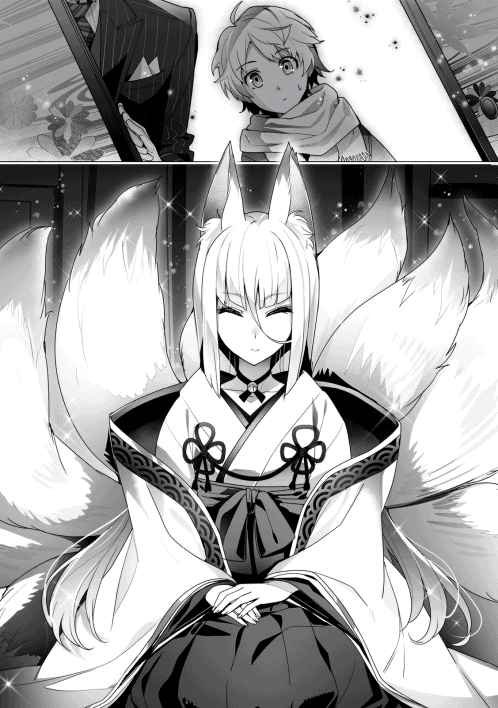

| フェンリル母さんとあったかご飯～異世界もふもふ生活～２ | |
| はらくろ | |
| TOブックス (2018) | |
奴隷として囚われた獣人たちの解放を目指す少年ルードは、腹ぺこな神獣フェンリル母さんの期待に応えるため、味噌などの調味料開発に勤しんでいた。そんなある日、エランズリルドの獣人たちを解放するには【隷属の魔道具】が問題になっていることを知る。解放活動に精を出す中、真相を辿るとなんと、憎っくき【豚】、エラルドが諸悪の根源だと判明！ 大好きな家族と獣人たちをいじめるやつは許さない！ ──そう誓いを新たにするルードは【豚】を成敗する秘密の作戦を開始する。美味しい料理も、もふもふも大増量してお届けするグルメファンタジー第２弾！
illust：カット
design：BEE-PEE
ＣＯＮＴＥＮＴＳ
プロローグ 大好きの意味。
エリス商会で初めての交易が、今朝から始まった。
リーダがその交易に、こっそりとついて行っているようで、家にはエリスレーゼ、クレアーナとクロケットしかいない。
夜になり、ちょっと寂しくなったルードが、エリスレーゼの傍に行こうとすると、彼女はクレアーナの膝の上に頭を乗せて、手をひらひらとさせながら『たまにはクロケットちゃんに甘えなさい』と言う。
するとルードは、クロケットの膝の上で恥ずかしそうにしながらも、甘えるように顔を埋めていた。
彼は色々と考えることもあって悩んでいるのだろう。
ルードの頭を撫でると、喉を鳴らして気持ちよさそうにしていたのだが、気がつくといつの間にか眠っていたようだ。
クロケットは飽きるまでルードの髪のモフモフとした感触を堪能し、ひょいと彼を抱き上げ、エリスレーゼとクレアーナにぺこりと頭を下げると、寝室で寝かせるために連れて行く。
翌朝、仕事に行く時、ルードが一緒に来てくれた。
朝からルードと一緒に居ることができ、クロケットの機嫌はすこぶるよかった。
毎日ミケーリエル亭の手伝いをしている彼女にとって、〝フェンリルプリン〟と〝フェンリルアイス〟が飛ぶように売れていくのを見るのは、至福の時間でもあるから。
それは彼女の大好きな、ルードが作った甘く滑らかな冷たいお菓子。
シーウェールズの城下町でも話題になっていて、昼までにはほぼ売り切れになるほどの人気商品。
ミケーリエル母子とクロケット用に、毎日四つ多く納品していて、仕事が一段落すると、皆で一緒にご相伴に預かるのが、クロケットの毎日の楽しみだった。
そんなとき、いつもと同じ時間、同じ場所に、見慣れた馬車が横付けされる。
そこから降りてきたのは、侍女の服装をしたレアリエール王女だった。
綺麗な耳飾りに質素だが可愛らしい指輪。
それだけで『侍女じゃなく王女様でしょ？』とバレバレなのだが、それはそれで微笑ましくも思えてしまう。
いつものように、慣れた足取りで食堂へわき目も振らずに一直線。
『いつものをお願い』と言うと、〝フェンリルプリン〟と〝フェンリルアイス〟を三人前ずつ、これまたいつも通り、あっという間に完食。
侍女の恰好をしていながら、美しい所作で口元を拭い、お代を払うと悠然と歩いて食堂を後にする。
その間、クロケットの尻尾は左右にパタパタと激しく動いている。
猫人の尻尾はこのように動いているとき、『イライラしたり怒っている不機嫌な状態』なのだという。
この仕草は猫人の子供でも知っている、自分の意志に反して勝手に出てしまうものだ。
それ故に猫人同士では、感情を悟られやすい。
ミケーリエルも、クロケットがイラついているのを知っていた。
思わず苦笑いをしてしまうくらいに、その理由は聞かなくても、同じ女だからこそ余計にわかってしまう。
クロケットはレアリエール王女があまり好きではない。
嫌いではないのだが、挨拶をされても『にゃはは』という感じに、愛想笑いをして誤魔化す。
その理由は、ルードに対する王女の態度だった。
ルードの作る〝フェンリルプリン〟と〝フェンリルアイス〟を、毎日三人前ずつ食べていくほどの大のファンだ。
王女だからといって、横柄な態度をとることはない。
毎日送り迎えする執事のジェールドに聞いたことがあるが、彼女は自分の与えられた小遣いで毎日食べた分を支払っている。
そういうところは好感の持てる女性なのだが、その後がまずかった。
ルードを見つけると、文字通り全身で喜びを表し、彼を抱きしめて感謝の言葉をかけるのだ。
そのときルードは、『仕方ないですね』と苦笑するのだが、決して逃げたりはしない。
相手はこの国の王女なので、失礼にならないようにとの気遣いなのだろう。
だがルードは、クロケットが抱きしめようとすると、顔を赤くして逃げてしまう。
『自分だってそんなに長い時間、ルードを抱きしめることができないというのに、王女はずるい』、そう思ってしまうことが多々あるのだ。
集落の長の娘である自分と、この国の王女を比べるのは、間違っているのかもしれない。
でもそこは女性同士、もし王女が王子であれば、こんな感情は湧かないのだろう。
王女は毎日のように、ミケーリエル亭でルードのお菓子を食べるのが日課になっている。
ルードがウォルガードにいたとき、ミケーリエル亭で両方が品切れとなってしまった時がある。
ルードが帰って来るまで、商品がないとわかっているのに、毎日来ては残念な顔をして帰っていく。
その後も、生気を失ってしまったかのような表情で、ルードを探すように町中をさ迷い歩く王女様の姿があったそうだ。
もはや中毒に近いのかもしれない。
ルードが戻ってきて、また毎日食べられるようになると、王女は元気を取り戻した。
いつもの侍女の恰好で現れると、いつものように三人分食べて、笑顔で支払いを済ませて席を立つ。
いつものようにルードに抱き着いては、感謝の言葉をかけるのだが、その日だけは違っていた。
「ルード様、美味しかったですわ。これは感謝の印です」
なんと、王女はルードの頬にキスをしたではないか。
それなのに、ルードはいつものように苦笑をするだけだった。
クロケットの尻尾はぶわっと膨れ上がり、今にも毛が飛び出さんばかりに逆立ってしまう。
顔の表情は笑顔のままなのだが、明らかにそれに反応していた。
「あらら......」
見ていたミケーリエルも、これはまずいと思った。
猫人の尻尾はこのような状態のとき、『驚きや恐怖を感じたり、相手を威嚇したり、攻撃態勢である』という精神状態。
表情には出さないのだが、尻尾だけは隠しようがない。
間違いなく、怒りを露にしている。
彼女はすぐに気持ちを抑え込み、膨れ上がった尻尾は元の状態に戻ったのだが、左右にせわしなく動いてしまっている。
気持ちが収まったわけではないのだろう。
王女が馬車に乗り、窓から手を振ってルードに挨拶をする。
ルードも愛想よく挨拶を返していた。
王女が見えなくなると、ルードは苦笑しながら、『ほんと困っちゃうよね』と、クロケットの気持ちに気づいていないかのような言葉をかけてくる。
クロケットの尻尾は、スカートを巻き込むように、足の間に入り込んでいた。
これは弱気になっていたり、落ち込んでいたりするときの動きなのだ。
それでも健気に、『そう、ですにゃね......』と、声は沈むが笑顔は絶やさない。
大好きなルードには、こんな気持ちを知られたくないのだ。
その日、クロケットは家に帰る前、エリス商会に寄り道をしていた。
ルードは鍛錬のために森に行っているので、彼の匂いが感じられないのがわかると、クロケットはエリスレーゼに近寄ってくる。
「あら？ どうしたの？」
彼女は、椅子に座って作業をしていた。
泣きそうな表情していたクロケットは、床に膝をつき、彼女の太ももに顔を埋めた。
エリスレーゼはクロケットの後頭部あたりの髪を、ゆっくりと撫でている。
するとクロケットは、声を押し殺しながら嗚咽を漏らし始めるのだ。
肩を震わせながら、凄く辛そうな泣き方をしている。
クロケットは、いつも笑顔で頑張っている子。
エリスレーゼは、こんな彼女を見るのは初めてだった。
隣にいたクレアーナも驚きを隠せないでいる。
心配そうなクレアーナに、『黙って泣かせてあげましょう』という、そんな目配せをする。
クレアーナも膝をついてクロケットの背中あたりに手をあてる。
エリスレーゼは、本当は抱きしめてあげたいが、そっとしてあげようと思った。
クレアーナもこんなクロケットの姿を見たことはなかった。
クロケットは、立派に成人した女性だ。
普段から皆が見ていて楽しくなる位に、表情豊かな娘だ。
そんな彼女が少女のように泣いているのだから、余程のことがあったとしか思えない。
こんなに辛そうに、声を押し殺して泣くなんて思いもしない。
エリスレーゼもクレアーナも、思い当たる節はひとつしかなかった。
もちろん、ルードのことだろう。
暫くすると、クロケットは泣き止んでいた。
無理をして笑顔を作ろうとしているが、目は腫れていて、とても痛々しかった。
「クロケットちゃん。大丈夫？」
「はい、ですにゃ。みっともにゃい姿を見せてしまいましたにゃ」
「いいのよ。あなたは私の娘みたいなものなのだから」
「お母様......」
「まだ早いわよっ」
こつんと軽くクロケットの頭を小突いた。
「ですにゃね。フェルリーダ様にも言われましたにゃ。ルード坊ちゃまが大人ににゃってから言いにゃさいって」
「そうね。そのときは私も、そう呼んでくれて構わないわよ」
「はいですにゃ。ありがとうございますにゃっ」
「でも、こんなに目を腫らして、ルードのことでしょう？」
「いいえ。ルード坊ちゃまは悪くないのですにゃ。私が我慢すれば、いいだけの話ですにゃ......。ちょっと、頭を冷やしてきますにゃ」
クロケットは立ち上がって踵を返すと、外へ走って行ってしまった。
「あの子も困ったものね」
「そうですね。坊ちゃまにも困ったものです......」
▼
夕方ルードが家に帰ってくると、いつものご飯の匂いがしないことに気づく。
リビングには、雨戸の方を向いて座っていたエリスレーゼと、傍に座っているクレアーナの姿が見えた。
ルードは不思議に思いながらも二人に近づいていく。
エリスレーゼがルードの姿を見つけると、彼女の目は、今まで見たことのない程に厳しい。
クレアーナを見るが、彼女も何やらルードを憐れんでいるような目をしている。
さすがのルードも何かあったのかと口を開こうとしたときだった。
「フェムルード」
エリスレーゼの声はいつもよりもトーンが低い。
ルードのことはいつも、『ルードちゃん』と、呼んでいるはずだ。
「どうしたの、ママ？」
「ここに来て座りなさい」
「......はい」
ルードは怖かった。
エリスレーゼの厳しい瞳は、情けないものを見るような、そんな感じがしたから。
ルードが座ると、エリスレーゼは目を閉じて、ひとつ深く呼吸をする。
「......フェムルード」
「はい」
「私があなたを育てた訳ではないのですから、強くは言えません」
「はい」
「ですが、あまりにも情けないです。あなたは本当に、私のルードちゃんなのですか？」
「............」
「返事はどうしたのです？」
「はい」
「あのね、気づいているでしょう？」
「はい......」
「あなたは......、あの〝豚〟のような男になりたいのですか？」
ルードは今、生まれて初めて、エリスレーゼに叱られているのだ。
それがわかると、自分自身が情けなくなってくる。
「いいえ」
「ならば、この様子。おかしいと思うでしょう？」
「はい。クロケットお姉さんがいません」
「そうね。クロケットちゃんが、帰ってこない理由は、あなたの態度が原因です。彼女は家族であっても、女の子なんです。彼女がここにいる理由。あなたに尽くす理由を考えなさい。もっと女性の気持ちに気づける男に、もっと女性に優しくできる男になりなさい。甘えているだけではいつまでも大人になれませんよ？」
「はいっ」
「坊ちゃま」
「はい」
横にいるクレアーナが口を開く。
「僭越ながら私からも言わせていただきます。私は何をするにも、助けていただいたエリスレーゼ様を一番に考えています。ですが、クロケット様は、坊ちゃまのことを一番に考えているのです。彼女は、坊ちゃまに助けられたから、一緒にいるのではないのですよ？ 坊ちゃまが大好きだから一緒にいるのです。私も坊ちゃまは大好きですよ。ただ、私と彼女の、大好きの意味は違います。彼女の気持ちに気づいてあげる努力をしてあげてください。彼女は坊ちゃまを一人の男の子として、大好きなのですから」
「大好きの意味の違い......。考えたこともなかった」
「そんなことは後から考えればいいのです。ほら、クロケット様が待っていますよ。いってらっしゃいませ」
「はい。ママ、クレアーナ。僕、クロケットお姉さんを探してくる」
「えぇ。急ぎなさい。必ず見つけてあげるのよ？」
「はいっ」
ルードはそのまま走って家を出ていく。
「......私、言い過ぎたかしら？」
「いいえ、そんなことはないと思います。私も出過ぎた真似をしてしまって、申し訳ありません」
「いいの。でもほんと、身体は大きくなっているのにまだまだ子供よねぇ......」
エリスレーゼも、生まれて初めて息子を叱りつけたが、それはとても辛かったけれど、大事なことだと思っていた。
クレアーナはエリスレーゼが落ち込んでいたときによくしていたこと。
エリスレーゼを背中からそっと抱きしめた。
いつまでも変わらない忠誠心でもあり、姉のような優しさでもあったのだろう。
エリスレーゼは、クレアーナの手にそっと自分の手を添えた。
▼
ルードは家を出て、クロケットの匂いを探した。
忘れるわけもない、あのときと同じ。
クロケットが攫われたときと同じように、匂いを頼りに探し始めたのだ。
あのときはクロケットの持ち物から匂いを辿った。
毎日優しくしてくれる彼女の匂いは間違うはずもない。
家を出ると、シーウェールズにある様々な匂いを感じることができる。
温泉の匂いから始まり、海から香る潮風、観光目的でやってきているであろう人々や、ここで商いやそれに携わる人間や獣人たちの匂いの違い。
もちろん、エリスレーゼとクレアーナの匂いも嗅ぎ分けることはできている。
そんな混ざりあいながらも、それでいて各々少しずつ違う匂いの中から、僅かに潮風に乗るクロケットの匂いを嗅ぎ分けた。
間違いなく、海沿いの方角から感じ、その匂いは動いてはいない。
ルードは町を抜けて浜辺に出た。
このシーウェールズは、温泉地とは別に、夏場は海水浴も観光の目玉として集客を行っている。
それ故に、まるで管理されているビーチのように、砂浜も綺麗に整備されているのだ。
ルードは、クロケットの匂いを頼りに砂浜を進んでいく。
夏場ということもあり、砂浜は人々の裸足の足跡が多数確認できる。
そんな足跡の中から、ひとつだけ違和感のあるもの、クロケットが履いているサンダルの跡を見つける。
それは波打ち際から外れて、防風林の方へと向かうように続いていた。
その方角からは、大切な家族であるクロケットの匂いが感じ取れる。
間違いなくそこにいるのだろう。
周りは暗く、星明りに照らされているだけ。
人間の目では認識しにくいだろうが、今のルードには鮮明ではないが形がはっきりと見える。
ルードの大切な家族で、いつも笑顔を絶やさない黒い綺麗な毛並みの耳と尻尾を持つ、優しい良い匂いのするお姉さん。
まるで暗視装置を使ったかのように、はっきりとその姿を捕らえることができた。
彼女は、砂地のその場所に直に膝を抱えて座っている。
ルードの姿か、それとも匂いに気づいたのか、びくっと身体を動かし、こっちを見ていた。
猫人の彼女も、暗い場所が僅かな明かりで見ることができるようだ。
その化粧っ気のない、年上なのに可愛らしい口が開く。
「......うにゃぁ。見つかってしまいましたにゃ」
「クロケット、お姉さん」
「にゃははは。ルード坊ちゃまにはわかってしまうのですにゃね。私の匂いだけで、あのときのように」
「うん。間違うわけがないよ」
クロケットの目元はもう腫れていない。
ルードを見上げたその瞳は、猫人特有の縦に長い瞳孔は淡い光を放っているように見える。
その綺麗な瞳は、ルードだけを見ていた。
「あのね、クロケットお姉さん」
「にゃんですかにゃ？」
「僕、生まれて初めてママに叱られちゃった」
「うにゃ、それは私のことですかにゃ？」
「うん。帰ったらクロケットお姉さんがいなかった。ママは見たことがないくらい、厳しい目をしてた。僕が情けないから怒ったんだと思う。だから、その、ごめん。なさい......」
ルードは素直に頭を下げた。
エリス商会で大泣きしてしまったことが恥ずかしくなり、家に帰れずに頭を冷やしていたのだが、まさかルードが来てくれるとは思っていなかった。
自分に謝ってくれる、そんなルードの姿にクロケットは驚いていた。
「そ、そんにゃっ！ ルード坊ちゃまは悪くありませんにゃ」
「僕が情けないから、ママが怒ってた。でもね、何をしちゃったのか、わからないんだ。だからクロケットお姉さんに聞かないと駄目だと思って......。横、座ってもいい？」
「あ、はいですにゃ......」
ルードは一人分の間を置いてクロケットの横に座る。
「あのさ、僕、クロケットお姉さんに何かしたんだよね？」
ルードは真っすぐにクロケットの目を見つめる。
クロケットには彼の心配そうな気持ちが伝わってくる。
ルードは純粋で、真っすぐな性格で、決して嘘をつかない。
そんな真っすぐな気持ちがとても痛かった。
「ルード坊ちゃまは悪くありませんにゃ。悪くにゃいんですけど、悪いのかもしれにゃいですにゃ」
「よくわからないよ......」
ルードは凄く複雑そうな顔をしていた。
クロケットはちょっとだけ嬉しくなってしまう。
だが、自分が思っていることが、ルードには伝わっていない。
ルードは正直、鈍いところがあるのだが、それは言わないと気づいてもらえない。
だから変化球なしで、ストレートに言わなければならない。
クロケットは夜空を見上げてぽつりと口を開いた。
「......私ね、生まれて初めて嫉妬したんですにゃ」
「嫉妬って？」
「ルード坊ちゃまは、私が抱きしめると、逃げますにゃ」
「......うん」
「でもね、王女様が抱きしめたり、それも、キスまでしちゃったのに。逃げにゃかったんです......」
「あー、......うん」
「私、王女様はあまり好きじゃありませんにゃ。ルード坊ちゃまにベタベタしすぎにゃんです。今日、悔しくて悔しくて。でも、ルード坊ちゃまは『困っちゃうよね』って......、嫌がってにゃいように思えたんです」
ルードはやっと自分がしてしまったことに気づいた。
自分が無神経だったということ。
それが、エリスレーゼに叱られた理由だった。
「あのね、クロケットお姉さん」
「はいですにゃ」
「僕が勘違いさせちゃったんだね。ごめんなさい......。レアリエール王女様はね、僕のお客さんなんだ」
「......うにゃ？」
「綺麗なお姉さんだけど、僕にとっては〝フェンリルプリン〟を食べてくれるお得意さんで、お客さんなんだ」
「......さっぱりわかりませんにゃ？」
言葉の通り、クロケットには意味がわかっていない。
「んっとね、お菓子を作って食べてもらうのはね、家の外では僕の仕事なんだよ。仕事だから、恥ずかしいとかそういうのはないんだ」
「......よくわかりませんにゃ」
「こうして外にいてもさ、クロケットお姉さんは、僕の家族だよね？」
「はいですにゃ」
「家族だから、恥ずかしいって、言えるんだ......」
ルードが顔を真っ赤にして俯いたのが、暗くてもクロケットにはよく見えただろう。
そこでようやく、クロケットの中にすとんと落ちるものがあった。
ルードは仕事だから嫌がらない。
レアリエールに抱き着かれていても笑顔を絶やさなかったが、ルードから抱き返すことはしていなかった。
その反面、クロケットには素直な反応を見せてくれていたのだ。
クロケットの顔も赤くなっていく。
「んー、......えいっ」
そのとき、ルードが抱き着いてきた。
何が起きているのか理解できなかった。
ルードの腕が、クロケットの背中を、ちょっと強めに抱きしめていた。
ルードの髪のいい匂いがクロケットの鼻に入ってきた。
「ごめんなさい。心配させちゃって」
クロケットもルードをきゅっと抱きしめた。
「うにゃぁあああ......」
嬉しかった。
ルードから抱き着いてくれたのは、初めてだった。

これが不器用なルードの、『大切な家族なんだよ』という、精一杯の意思表示なのだ。
そんな二人に、空気を読まない音が二人に聞こえる。
『きゅるるる』とクロケットのお腹が鳴ったのだ。
「あ」
「うにゃっ！」
「......おなかすいたね」
「おにゃかすきましたね」
「帰ろっか」
「はいですにゃ」
背中に回っていたルードの手が離れていくのが、ちょっとだけ残念に思ってしまう。
そんなとき、先に立ち上がったルードが手を差し伸べてくれた。
「はい、クロケットお姉さん」
「あ、ありがとう、ですにゃ......」
ルードは手を引いて立たせてくれた。
そのまま手を離さないで先を歩いてくれるのだ。
二人の足跡が並んで砂浜に軌跡を刻んでいく。
『きゅるる』とルードのお腹も鳴ってしまう。
「あはは。変なおそろい」
「ですにゃ」
星々の光に照らされた、砂浜を歩いていく二人。
クロケットの足取りは、ここに来たときよりも軽かった。
もちろん心は、羽が生えて羽ばたいてしまうくらいに。
クロケットが手に力を入れると、ルードが握り返してくれる。
『今はこれで十分ですにゃ』と、クロケットは思うのだった。
第一話 森の狼さん。
支配するものと、されるもの。
何故に、人は安らぐことができるのか。
何があれば、人は明日に希望を持てるのか。
人がいて、集落があり、村になり、町になり、国となる。
そこに当たり前のようにある幸せ。
それは人の不幸の上に、成り立ってはいけないはず。
ルードが思うそれは、普通の人々が考えることではない。
もし誰かが今不幸になっていたとしても、それをルードが辛く思う必要はない。
だがルードは、自分だけが幸せであればいいと思える子ではなかった。
この我儘な世界には、ルールというものが希薄にだが存在する。
それは家族でもあり、種族でもあり、国でもあるのだ。
ルードは、あることに憂いを感じていた。
人間は自分と違う生き物、知性を持ち合わせているのに、ただ言葉が通じないというだけで、それを人として認めないことがある。
それが、自分たちよりも弱い存在であれば、好きにしていいと思う人もいる。
そんな腐った人間達がそこにいる。
ルードはただそれが許せなかった。
それはルードのエゴであり、自惚れなのかもしれない。
ルードには、強くて優しい育ての母がいる。
ルードには、優しくて幸せになってもいいはずの、生みの母がいる。
そんな二人の母のおかげで、ルードは人より少しだけ大きな力を宿すことができた。
それを使えば、人々を今より少しだけ、幸せにできるかもしれない。
まだ十四歳の少年のルードが、一人でそんな模索を始めた理由だっただろう。
ルードの生みの親、エリスレーゼが始めたエリス商会もやっと動き始めていた。
最初の交易の場所は、予定通り、ヘンルーダのいる猫人の集落。
シーウェールズで集めた海産物の乾物などを、馬車二台に積んで現地へ向かっている。
残ったエリスレーゼは母エランローズと共に、クレアーナの故郷を探し始めた。
次の交易の場を、クレアーナの故郷とするつもりらしい。
クレアーナは攫われてエランズリルドへ連れてこられたため、故郷とこちらの国の位置関係などはわからない。
シーウェールズに住む犬人達に話を聞きながら、特定を始めることにしたのだが、犬人の集落というのは、猫人のクロケットとミケーリエルが違う集落だったように、あちこちにあるらしいのだ。
頼りになるのは、大きくて垂れた耳の形とその毛色だけだった。
シーウェールズにも、クレアーナと同じ故郷の人はいないようで、焦らないで探そうということになった。
いつものように、エリスレーゼとクレアーナを送り出す。
「ママ、クレアーナ。いってらっしゃい」
「いってらっしゃいませですにゃ」
例の一件から少しだけクロケットとの距離も近くなり、毎朝クロケットをミケーリエル亭に送り届けていた。
クロケットは手を握ってもらい、嬉しそうに後ろを歩いている。
その顔はとても幸せそうで、すれ違う人々が朝からほっこりとしてしまうくらいだ。
「ルード坊ちゃま、いってらっしゃいませですにゃ」
「うん。クロケットお姉さんも頑張ってね」
「はいですにゃ」
ルードは鍛錬をするために町の外へ出ていく。
シーウェールズでは、海での漁や森での狩りも専門で行っている人がいるため、そんな人たちの狩場を邪魔するわけにいかないことから、ルードはちょっと深めの場所で鍛錬をすることにしていた。
その場所は、シーウェールズの人たちも来ないほどの深い場所。
人を襲ってくるような獣は、ルードの気配を感じると近寄ろうとしない。
それほど気にしない獣は、たまにルードの目の前を通り過ぎたりする。
時折目の前に出てくる獣に力を使って、立ち止まらせてみたりしながら、発動までの時間を徐々に短縮していった。
黒の力の使い道はなんとなくわかっているのだが、白の力は使いどころが案外難しい。
ルードの目標を達成するためには、ある程度以上、力をコントロールしなければならない。
ただ、人を相手に鍛錬をするわけにいかないため、このようなじれったい方法をとるしかない。
いつもの森へ向かおうと思ったのだが、今日は昨日よりも日差しが強くて暑い。
気分を変えるために、普段とは違う方角。
ウォルガードへ向かったときの、途中にある森に来てみた。
フェンリルの姿で走ると、それほど時間はかからない。
森に入ると、フェンリルの姿から人の姿に戻っていた。
普段足を運んでいる森と違い、獣の強い気配をあちこちに感じることができる。
ここは、森の草木の濃い匂いが頭をすっきりさせてくれる。
この先、全力で走ると二日ほどの場所に、ウォルガードがある。
そういう人間の立ち入らない場所にあるのだ。
リーダが言っていた通り、気配は感じるが、ルードに獣は近づいてこない。
適当に散歩していると、少し開けた場所に出る。
そこに腰を下ろすと、水筒に入ったお茶を飲んで一息つく。
エランズリルドに捕らえられている獣人の人たちのことを、どうやって助けるべきかを考えていた。
最大の悩みは〝隷属の魔道具〟と、呼ばれるものだ。
首輪状になっているらしく、ルードの目的にはとても厄介なものでしかない。
そのようなものは大概、他人には簡単には外せないようにできている。
ルードは子供だから、いくらフェンリルだとはいえ、無理なことはできない。
リーダやフェリスにお願いすれば、手を貸してくれるのだろうが、これはルードが決めたこと。
だからルードが誰かに力を借りるのではなく、自分で解決しなければならない。
そんな考え事をしていたとき、人とは違う、嗅いだことのない匂いが近づいてきた。
「おい、そこの坊主。こんなところで何をしている？」
その声の主の方を見ると、そこには犬人に見える男性が立っていたのだ。
狩猟をするような木々に溶け込みやすい服の色、腰には大きめのナタのような刃物。
傍らには仕留めたと思われる鹿のような大きめの草食獣、おそらく狩りの帰りなのだろう。
ルードは慌てず、笑顔を作って男性に応える。
「一休みしてるだけです。別に怪しい者ではありません」
「いや、この森でそうしているだけで十分怪しいと思うのだが......」
確かにこんな危険な森の中、少年が一人で木の根元に座っているだけで、普通なら気味悪がって近寄らないだろう。
「そうですか？ 僕はシーウェールズに住んでいて、鍛錬のために、ここに来ていたんです」
ルードも二人の母に似て、天然なところがある。
こんな少年が、鍛錬でシーウェールズから来ることはあり得ない。
男は訝し気な表情をし、ルードをじっと見てくる。
犬人にしては、耳と尻尾の毛並みが太くて若干荒々しく、身体つきも筋肉質で、腕はルードの倍以上の太さはある。
「とにかく、こんなに危険な場所で休憩などするな。俺の集落まで来ればいい。その気があるならついて来い」
「すみません。でも、迷惑になりませんか？」
「子供が心配したり、遠慮することはない」
「わかりました、寄らせていただきます」
怪しいとは思っていてもルードを心配してくれる、そんな彼の気持ちに応えようと、後をついていく。
男は自分の身長とほぼ同じ大きさの獣を、軽々と引きずっている。
ルードが軽く見上げてしまうくらいに、男の身長は高い。
男の肩の高さにも、ルードは届いていないのだ。
その背中はとても逞しく、背の低い華奢なルードは羨ましく思った。
ルードは〝父の背中〟を知らない。
ウォルガードに行けば、祖父のフェイルズがいる。
彼も身体は大きく、筋肉質で立派な体格をしている。
だが、前に会ったとき針の筵状態だったこともあり、あまり頼りになるという感じには思えなかった。
豚と、リーダから逃げていった情けない男が、ルードの父だと考えると、泣きたくなってくることもある。
だが、リーダとエリスレーゼには口が滑ってもそんなことは言えない。
男の後をくっついて暫く歩いただろうか。
猫人の集落より大きめの村が見えてくる。
匂いからして、間違いなく人以外の集落。
リーダの話では、この森には、人間の小さな村ではまず襲われてしまう程の、強い獣がいると聞いている。
間違いなく犬人系の村なのだが、入り口にはこれといって人が立っているわけではなかった。
中央には広場があり、そこを取り囲むように家が建てられている。
柵で覆われているわけではなく、周りは何かを植えている畑のようだ。
ルードと同じように匂いに反応したのだろうか。
あちこちの建物から人が出てくる。
シルバーや黒、茶など色のバリエーションは多いが、クレアーナに比べると耳は小さめで毛も太くて短く、尻尾はふさふさで大きく見える。
シーウェールズにいる犬人の人たちとは少し違う感じがした。
不思議なことに人間の姿のルードを見ても、誰も逃げようとしない。
それどころか、笑顔で歓迎してくれている。
この男の後ろをついてきたからかと思っていたのだが、そうではないことがこの後にわかる。
「さぁ入れ。ここが俺の家だ」
「お邪魔します」
そう言ってくれた男は、家には入らず、隣にある倉庫のような場所へ行ってしまう。
家の奥から同じ耳をした女性が、小さな男の子を連れて出てきてくれた。
「すみませんね。夫は不愛想なもので。私はカルフェ。この子は私の息子のウィルです。ご挨拶なさい」
「お兄ちゃん。こんにちはー」
「は、はい。こんにちは。僕はフェムルードと申します」
「ご丁寧に、ありがとうございます。ではこちらへどうぞ」
小さな男の子は、ルードの足にぼふっと抱き着いてくる。
なぜここまで歓迎されるのかがルードにはわからなかった。
「あの」
「はい。どうしました？」
「僕の姿を見て、何も言わないんですね」
「あら、そのことでしたの？ 匂いでわかるんですよ。あなたからは私たちと同じような匂いがするんです。ねぇ、ウィル」
「うん。とってもね、お父さんみたいな匂いがするよ」
『お父さんみたいな匂い』とは、どういう意味だろう。
シーウェールズで仲良くしている犬人達の匂いがする、という訳ではなさそうだ。
「それにですね。この界隈は、危険な獣も多いですから。普通は近づくこともできないはずです」
確かにこの集落は森を抜けてすぐの場所にある。
獣が襲ってくる感じがないということは、それなりの理由もあるのだろう。
カルフェがお茶とお茶うけのような、煮物に似たものを出してくれる。
「何もありませんが、どうぞ。この豆はこの集落でとれるものなんです」
「甘くておいしいよ」
ウィルも笑顔で頬張っていた。
「すみません。いただきます」
ルードは匙で一口食べてみる。
するとどうだろう。
甘く煮てあって、柔らかくて美味しい。
そのときふと、ルードの脳裏に、とあるものが、記憶の奥底から浮かんでくる。
「（これってもしかして。小豆？）」
紫色の小粒な豆。
間違いないだろう。
「あの」
「はい、どうしましたか？」
「この豆は沢山とれるんですか？」
「えぇ、ここでは麦がとれない代わりに、豆が主食になっているんです。この他にも大きめの豆がとれるんですよ」
「麦がないと不便じゃないですか？」
「そうですね。あれば助かりますね。お料理も、もう少し違うものがつくれますから......」
ルードはすぐに考える。
この集落と交易が結べれば、豆が手に入るかもしれない。
かといって、ここまで来るのには危険が伴ってしまう。
ルードがあれこれ考えていると、男が部屋に戻ってきた。
「うわっ。大丈夫ですか？ どこか怪我でも？」
「あぁ、すまん。これはさっきの獣を捌いてたから」
「あなた。お風呂に入ってください。お客様に失礼ですよ」
「ごめん。カルフェ......」
そう言って、彼は風呂へ行ってしまった。
ウィルを肩車のように乗せながら、カルフェと世間話をしていると、彼女の夫が風呂から戻ってくる。
「すまんな。俺はこの集落の長で、ガルムという」
「フェムルードです」
ウィルを上に乗せたまま、間抜けな挨拶になってしまった。
ガルムはその瞬間、破顔して優しい表情になっていた。
「ウィルがこれだけ懐くのも珍しいな」
「そうね」
「フェムルードと言ったか」
「はい。ルードで構いません」
「ではルード。さっきは坊主と言ってしまってすまなかった」
「いえ。まだ子供ですから」
「そうか。ところで、ルード。お前は人間ではないだろう？」
「わかりますか？」
「あぁ。匂いが違う。何ていうのか、俺たちと同じような匂いがするんだ」
「それならそうなのかもしれません。僕の周りにも沢山いますし」
「隠さなくてもいいだろう？ どの集落から来たんだ？ 〝化身〟がやたらとうまいように見えるが」
「〝化身〟って何ですか？」
「お前のように人の姿になることだ。知らんのか？」
「〝化身〟という言い方は知りませんでした」
「そうか。それでどこ集落なんだ？」
「あなた。あまりしつこく聞くものではないですよ。失礼じゃないですか」
「だがな、これだけ強い匂いがするんだ。俺たち狼人と同じか、それ以上だぞ？」
「わかりました。でも、驚かないでくださいね」
「あぁ、俺はここの長だ。多少のことでは驚かんぞ」
ルードはウィルをひょいと抱き上げると、ガルムに預ける。
その場に立ち上がると、使い慣れた詠唱を始めた。
『祖の衣よ闇へと姿を変えよ』
すると、いつものようにルードを黒い霧状ものが包む。
その隙間から光が漏れたかと思うと、ルードは目を開けた瞬間、驚いてしまう。
ぽかんとしたウィルを残したまま、ガルムとカルフェが服従のポーズをとっていたのだ。
「だから驚かないでくださいって......」
「も、申し訳ございませんでした。まさか、ウォルガードからいらした方だとは......」
「気が付かなくて申し訳ありません」
「あの、ウィル君が驚いています。僕も元の姿に戻りますから」
ルードがフェンリルの姿から戻ると、二人はカチコチに固まっていた。
おなかの上に両手を乗せて、仰向けの状態で。
「あの。もうやめてください。僕それ、慣れていないんです」
「そうでしたか。これは失礼しました。カルフェ」
「はい。では失礼しますね」
やっと普通の状態に戻ってくれた。
ルードはウィルを膝の上に乗せる。
「おとうさん、おかあさん、どうしたの？」
「あぁ、いいんだ。なぁ、カルフェ」
「そうね。そのうちわかる時がくるわ......」
「あの。それでですね、隠してたわけではないんです。僕は、フェムルード・ウォルガードと言います」
「王族の方ではありませんか！」
カルフェは驚いた表情をしていた。
「王族ってどういうことだ？」
「あなた、お名前にウォルガードの国の名があったでしょう？」
「あぁ、そういうことなのか。これは失礼なことを......」
「だからやめてくださいって。そうです。それで間違いないです。王族の末席に加えてもらっています。ごめんなさい。もう隠しても仕方ありませんから。でも、僕は『そんなこと』をしに来たわけではないんです。本当に鍛錬で森に来たとき、たまたまガルムさんに会って」
「なるほど、それで獣が寄り付かなかったわけですね」
これでウィルが『お父さんみたいな匂い』と、言った意味が理解できた。
まだ幼いウィルは、本能的にルードの正体が違うものだと感じたのだろう。
しばらく雑談が続いたのだが、ガルムの表情からは硬さがとれていない。
カルフェは笑顔に戻っていてウィルを抱いている。
「厚かましい話かもしれませんが。僕は豆を譲ってほしいと思っています」
「あんなものでよければいくらでもどうぞっ」
ガルムは胡坐をかいて座ってくれてはいるが、それでもその場で頭を下げてくる。
「だから違うんですって......。僕には母が二人いるんですけど。ひとりが商会を経営しています。この村と交易ができればと思っているんです。麦と交換していただければ助かるのですが」
「まぁ、それは便利になりますね」
「ただ困ったことに、僕がいないと森を抜けてここまで来ることが難しいんですよね......。僕は常に交易に来れるわけではないので」
「あぁ、それはそうかもしれません。俺はここを離れるわけにはいきませんから。......あ、カルフェ。〝あれ〟ならどうだろう？」
「そうね、でも大丈夫かしら？」
「あんな〝食っちゃ寝〟でも、役に立ってもらわないと駄目だろう」
「駄目ですよ、そんな酷い言い方をしては」
夫婦の阿吽の呼吸とでも言うのだろうが、ルードは察することはできないのだ。
それにしても〝食っちゃ寝〟とは、なんと聞き覚えのあるフレーズだっただろうか。
第二話 新たな食っちゃ寝さん。
「ルード様」
「だからそれやめてください。僕が偉いわけじゃないんですから」
「では、ルード君、でいいんでしょうか？」
「はい。それでいいです。それでお願いします......」
「俺には妹がいまして、〝そいつ〟を、連れて行ってもらえないでしょうか？」
「......はい？」
「いい年して嫁にもいかず、わけのわからない調べものをしているだけの、情けない妹なのですが。狼人ですので、獣は寄ってこないかと思います。ルード君の家でこき使っていただいても構いません」
「いや、その......」
「今連れてきますので、会ってみてもらえませんか？」
ルードが返事をする前に、ガルムは走って行ってしまった。
ガルムなりに何か理由があって焦っているのだろうが、ルードにはわけがわからない。
「──兄さん、離してって。逃げないから」
「うるさい。いつまでも嫁に行かずにブラブラしやがって、この〝食っちゃ寝〟がっ！」
「あたしより頭の悪い男には興味ないんだから、仕方ないじゃないの。悔しかったらもっといい男を連れてきてよっ」
入口あたりから兄妹のやりとりが丸聞こえだった。
ルードは苦笑し、カルフェは何やら申し訳なさそうな表情をしていた。
「聞こえてますって......」
「なんていうかその、すみません......」
兄妹のやり取りを聞いて、ルードとカルフェはいたたまれなくなってしまう。
ガルムが連れてきた女性は確かに変わっていた。
大きな丸い眼鏡と、手入れのされていないぼさぼさの長い銀色の髪。
ルードと同じくらいの身長で、線が細く、頭に狼人特有の耳がなければ、人と間違ってしまうような感じだ。
「こいつは俺の妹で、今年二十七歳になるというのに変なものにのめり込んでいて......」
「変なとは何よ。せめて学問と言ってよ。そこいらの変人と同じにしないで」
「何が学問だ。そんなもので食べていけるわけないだろう。......すみません。こいつは名をタバサと言いまして」
「あら、頭の良さそうな可愛らしい子ね。兄さん、こんな小さい子に嫁がせようっていうの？」
「いや、違うから。失礼なことを言うなっ。お前、この方の実家の商会で働いてこい」
「えーっ。働きたくないです。仕事なんて嫌いです。頭脳労働以外は負けなんですー」
「お前な、この方はウォルガードの王族だから失礼なことは──」
「えっ？ ウォルガードの......？」
「はい。僕、フェムルード・ウォルガードと申します」
「あ、はい。私、タバサともうし......、申し訳ありませんっ！」
タバサは瞬時に服従のポーズをしてしまう。
『またか』、と思ったルードがとれる反応は、もう苦笑するしか残っていなかった。
▼
「あたしは、錬金術という学問を学んでいまして」
「錬金術って、卑金属から金を作るっていう？」
「あら嫌だ。そんな大層なことはできませんよ。あたしが得意としているのは、腐敗と熟成。例えば、穀物からお酒を造ったりですね」
タバサの話から考えるに、この世界の錬金術というものは生物学や化学に近いということになる。
おまけに、料理などの商品開発には欠かせない技術である、醸造が得意だということだ。
タバサはルードが欲しかった技術を持っていた。
ルードの考えのうちのひとつ、『美味しいもので家族を幸せにしたい』。
そのためにも、この集落と交易を結ぶためにもタバサの協力は不可欠だ。
「それ、凄いじゃないですか」
「ほら、兄さん。わかる人にはちゃんと理解してもらえるのよ。今まであたしのこと言いたい放題言ってくれて、もう......」
「そう、なのか？」
「はい。熟成というのは例えば肉を寝かせて、旨みを引き出したりできるんです。そうですね......、海で採れる物も、一度乾燥させた方が美味しいものもありますし」
「そうよ。それも兄さんには言ったのだけれど、信じてくれないのよ......。捌いた肉をすぐ食べるなんて美味しくないって言ってるのに。最低限、二晩は寝かせないと美味しくないのにね。──あ、すみません。余計なことを」
「いえ、いいんです。できればうちで働いてもらえると助かります。僕もやってほしいことがたくさんありますから。あと、こちらへ物を輸送する際だけ一緒にいてくれたら、あとはシーウェールズで好きなことを研究していただいても構いません。研究のための建物を準備しますので」
「それ、本当ですか？ ほら、兄さん。あたしのやってきたことは間違っていないの、わかってもらえたかしら？」
「わかったって。俺が悪かったよ......」
こうして、エリス商会に新しい仲間が増えたのだ。
「ところでルード君は今おいくつなんですか？」
「僕ですか？ 十四歳ですけど」
「十三歳年下......、駄目だわこれ......」
キラキラとした尊敬の眼差しを向けてくるルードを見て、タバサはがっくりと肩を落とした。
鈍感なルードは、何を言っているのかわかっていないだろう。
▼
この集落で採れる豆は、やはり小豆と大豆に、近いもののようだ。
名前は違っていたが、ルードの記憶の奥にあるものと同じものだろう。
小豆は餡を、タバサの知識があれば大豆であの調味料が作れるかもしれない。
燻製の技術もあれば、クロケットに〝ねこまんま〟を食べさせることができるのだ。
布袋に小豆を少し分けてもらい、ルードはタバサを連れて一度シーウェールズに戻ることにする。
エリスレーゼに、狼人との交易をするための相談をしなければならない。
「タバサさん。荷物はそれでいいんですか？」
「えぇ。あたしの財産はこれらの本だけですからね」
馬車に積まれた文献などの書籍。
本当にタバサは研究者だったのだろう。
「僕はあることが終わったら、美味しいものを家族に食べてもらいたいだけなんです。そのためにも、この村とは交易をしたいんです」
「なるほど。あたしはただこうして本を読みながら〝それ〟にお付き合いするだけで、あとは、あたしのしたいことをしていいということなんですね？」
「はい。タバサさんにはちゃんとした部屋を用意します。もちろん、必要な機材もできるかぎり用意しますので」
「それは助かるわ。こちらこそお願いしたいくらいです。兄さんはあたしのしてることを今日まで理解してくれなかったので......。今もわかってるのか半信半疑ですけどね」
「あははは」
ルードもタバサもお互い、〝変わり者〟という意味では似たもの同士。
ルードも料理を始めると、周りが見えなくなるところはそっくりなのだから。
▼
タバサがシーウェールズに来て一週間が経った。
彼女は、エリス商会からそれほど離れていない場所に倉庫を借りてもらい、そこでルードから頼まれたものを調査している。
「タバサさんいます？」
「はいはい。ルード君。頼まれてたあれ、調査終わってるわよ。あなたの予想通り、小麦を加熱させると膨張させる効果のあるものが含まれているわね」
「そうですか。やったーっ」
ルードはシーウェールズの源泉のうち、塩分があまり含まれていないものが湧いているという話を聞いていた。
そこからお湯をくみ上げ、タバサに成分の分析をお願いしていたのだ。
ルードの記憶の奥底にあるもののうち、温泉水に含まれていると予想していた成分。
この国では知られていないもの。
〝炭酸水素ナトリウム〟、所謂〝重曹〟のことだった。
温泉は大きく分けて〝硫黄泉〟や〝食塩泉〟が多いが、ここにあるのは〝重曹泉〟ではないかと思ったのだ。
重曹と言えば、菓子作りに欠かせない〝ふくらし粉〟とも言う。
ルードは実は、シーウェールズで〝温泉まんじゅう〟を作りたいと思っていた。
小麦に水と卵を入れて焼いても、薄いものしか焼きあがらない。
だからどうしても欲しいものだった。
ルードは、家のキッチンで〝粒あん〟と〝こしあん〟早速作ってしまった。
これらは、エリスレーゼが大はまりしてしまうほどのものだった。
「ルード、甘すぎないで美味しいわ。しっとりと滑らかな舌触りも心地よいわね。私はこっちのつぶつぶも捨てがたいわ。リーダ姉さんもきっと喜ぶと思うわ」
米を蒸して、ただ小さく丸めた一口大の団子に、餡をかけただけのもの。
エリスレーゼがこれだけ喜んでいたものができた喜びもあったが、その横で涙を流しながら、もくもくと口を動かしていたクレアーナを見てほっこりしたり、大げさに喜ぶクロケットの胸元を、間違って見てしまって顔を背けたりもした。
ルードはこんなことばかりしていたわけではない。
タバサにある調査もお願いしていたのだ。
「そういえばタバサさん。あのことですけど」
「ルード君はとんでもないことを考えていたのね。えぇ、できるかぎり調べてみました。あれは『主人の命令に逆らえない』という代物のようです。誰が作ったのか、どういうものなのかはまだ何とも言えません。ですが、魔法が作用しているとしか思えませんね」
ルードが調査をお願いしていたのは〝隷属の魔道具〟のことだ。
エランズリルドへ攫われたと言われている獣人、たちの首にあると聞いていたもの。
ルードは、クレアーナから少しだけ話を聞いたことがあった。
力押しで彼らを助けることは可能かもしれない。
ただ、その場で『死ね』と命令されたらどうなってしまうか。
ルードの『限られた空間を支配する』という力には制限があるからこそ、その魔道具は恐ろしいと思える。
これが、ルードが考えなしに助けにいけない理由のひとつだった。
彼らが受けている扱いを想像すると心が痛い。
クレアーナの話では、死んでしまうような虐待は受けていないとのことだ。
長年に渡って行われてきた〝悪習〟を、ルード一人でどうにかできる訳ではない。
それこそ、エランズリルドを解体でもしない限り難しいはずだ。
それを何とかして助け出し、解放するにはルードひとりの力ではどうにもならない。
かといってリーダやフェリスたちは、それ自体に興味があるわけではないのだ。
これはルードが思っただけのこと。
この世にルードを嫌う者もいる、そのひとりがあの豚だ。
獣人たちを人質に取られでもしたら、それこそフェリスのような、圧倒的な力でひれ伏させない限り無理だろう。
そうならないためにも、ルードはひたすら考えることしか今はできなかった。
「ルード君の話を聞いて、あたしも腹が立ったわ。兄さんたちも力を貸してくれるかもしれない。でも、考えなしに動いたら、どれだけの被害が出るかわからないものね......」
「そうなんです。それが歯がゆくてたまらないんです......」
ルードにはフェリスやリーダのような、『圧倒的な破壊の力』はない。
マイルスが庇ってくれたときの、あのときルードが使った力。
とにかく今は力を磨いて、作用を大きくできるようになるしかない。
あの力の使い方は間違っていないはずなのだから。
うまく使えば、相手を傷つけることなく屈服させることができる。
あのときは咄嗟に加減しなかったから、あの男がどうなってしまったのか予想ができなかった。
もしかしたら精神に異常をきたしてしまったかもしれない。
敵対する相手を心配してしまうほど、ルードは優しい。
それが命取りにならないとも限らないのだが。
▼
ルードが〝フェンリル印の温泉まんじゅう〟の試作に成功したとき、エリスレーゼの父、アルフェルたちが戻ってきたとの報告があった。
重曹泉のお湯を冷まして、小麦粉と砂糖を練って作った生地を餡に薄く被せて蒸しあげただけの簡単なもの。
元の温泉水の色もついて、いい感じに蒸し上がっていた。
子供でもひと口で食べられるくらいの大きさで、味については、素朴で甘さ控えめ。
ほっとするような優しい味に仕上がっていて、予想通りのものができたと思っている。
それを持ってエリス商会へ向かうことにした。
アルフェルとエランローズが皆を労っているところだった。
マイルスたちは初めての仕事だったのだろうが、思ったよりも元気そうだ。
それを見ていたルードに、音もなくリーダが近寄ってくる。
「お帰りなさい、母さん」
「ただいま、ルード」
「どうだった？」
「とりあえず、盗賊の類は出てこなかったわね。一応あの紋章も役に立ったのかもしれないわ。ヘンルーダがとても喜んでいたわよ」
「そっか。それはよかった」
「あら？ ルード、それは？」
「うん。新作だよ」
リーダはルードの肩越しにひょいとそれを摘まんでひと口で頬張ってしまう。
「母さん、駄目だって......」
リーダは美味しさを表現するまえに、ルードをぎゅっと抱きしめた。
「美味しいっ。何これ。外がもちもちしてて、中はこれ、滑らかなぬめっとした何かが入ってるわ。それほど甘くなくていくつでも食べられそう」
そう言いながら、もうひとつ摘まんで食べてしまう。
かなり多く作ってきたのだが、ひょいぱく、ひょいぱくっとリーダの食べるテンポが止まらなくなりつつある。
「駄目だって、みんなの分がなくなっちゃうよ」
「あら嫌だ、わたしったら......」
リーダは口元を手で押さえて、笑顔で誤魔化そうとしていた。
「あとで沢山作ってあげるから、今はちょっとだけ我慢して」
「わかったわ。約束よ？」
「はいはい」
商会に入っていくルード。
マイルス、シモンズ、リカルドはルードの姿を見つけると片膝をついて頭を下げる。
「ただいま戻りました」
「やめてってば。とにかくお疲れ様。どうでした？」
「はい。自分はこれほど充実したのは久しぶりでございます」
「そりゃこの後、ミケーリエルさんが待ってるからなぁ」
「うん。新婚さんはこれだから」
「ちょっと、それは関係ないでしょう」
この国での婚姻関係は、お互いが認め合えば成立する。
国や集落、村や町などで違うらしいのだが、シーウェールズはそこまで野暮な国ではないのだろう。
出発の前日、マイルスはミケーリエルに受け入れてもらったそうだ。
「そうだったんですか。マイルスさんおめでとうございます」
「はい。ありがき幸せに存じます」
「だから、やめてって......」
マイルスはルードをからかっているわけではない。
本心からルードに忠誠を誓っている。
それはリカルドやシモンズも同じなのだ。
ルードの命により、エリス商会の護衛を、サポートをこの国での仕事としている。
ルードだって嬉しくないわけではない。
ただ、慣れていないためくすぐったく感じてしまうのだ。
「これ僕の新作です。〝温泉まんじゅう〟って言って、ここの温泉成分で作ったんですよ」
それを聞いたエリスレーゼが目を光らせた。
両手をルードに出すと、ルードはひとつ手のひらに乗せてあげる。
ひとくち齧ると、笑みがこぼれてくる。
〝フェンリルプリン〟や〝フェンリルアイス〟とは違った優しい甘味。
パンとは違う甘みのある皮。
エリスレーゼも『何個でも食べられる』と、思っただろう。
「ルードちゃん。天才よっ！」
「あははは。みなさんもどうぞ。あ、タバサさんもいいところに。新作ができたんです」
「あら、その小さいの？」
「はい。どうぞ」
「はむっ、こ、これは......。とても優しい味ですね......」
このタバサの存在がなければ実現しなかっただろう。
ルードの記憶にある錬金術とは方向性が違うが、人々を幸せにする良いものなのだ。
〝あれ〟もいずれできるかもしれないという期待が、楽しみで仕方がない。
第三話 彼もやはり男の子だった。
マイルスたちの疲れが取れ次第、早速狼人の村との交易も開始される。
懸念していた森の獣は、タバサが同行することで襲われる心配はない。
定期的に豆も入ってくるようになり、ルードは〝フェンリル印の温泉まんじゅう〟の販売を始めることにした。
町の木工職人に頼んでせいろを作ってもらう。
そこから始めなければならない。
なにせ、最終的にはこの国の名物にする予定だ。
餡ができたおかげで、副次的なものをいくらでも思いつくことができる。
要は『和菓子の製造ができる』、ということだ。
レシピに関しては記憶の奥からいくらでも引っ張り出すことができる。
「ルード君、この〝コウジ〟っていうの、凄いわね」
ルードは猫人の集落へ行き、収穫前の米畑を訪れた。
思った通りそこで麹菌らしきものを見つけて、タバサに培養をお願いしていたのだ。
タバサの魔法による温度管理の技術もあり、まもなくあれができあがる。
「難しくなかったです？」
「問題は温度よね？ 大丈夫、魔法があるからね」
「てことは、間もなく？」
「えぇ、週末にはできると思うわ」
米麹を作り、大豆と思われる豆と塩。
そう、ルードがお願いしたのは『味噌づくり』なのだ。
それさえできてしまえば、次に待っているのは『醤油』。
海産物の多いシーウェールズで、唯一納得がいかなかった部分。
それは味噌と醤油だったのだ。
塩味もいいのだが、やはり味噌と醤油は欠かせない。
料理も菓子作りもバリエーションが広がるはずだ。
麹が作れるようになり、ルードは魚を漬けてみることも考えている。
美味しいものは人々を幸せにできる。
これが終われば今度は燻製に着手する。
そう、かつお節に近いものを作るつもりなのだ。
これで〝ねこまんま〟を作れるだろう。
クロケットやミケーリエル母子が喜ぶ姿が思い浮かぶのだ。
交易品が多くなれば、どの種族も心豊かな生活ができるはず。
ルードの家族がそうであったように、誰にでも当てはまるはずだ。
ルードはそう考えているのだから。
▼
「ねぇタバサさん」
「どうしたの？」
「あのさ、クレアーナのいた集落ってどこにあるのかな」
「そうね、あたしが知ってる犬人の集落には似てる人はいないわね」
「そっかぁ......」
「坊ちゃま、もういいのです」
ルードたちの話が聞こえてしまったのだろう。
最近エリスレーゼが元気になり、商会の仕事に打ち込むようになってきていて、クレアーナが手持ち無沙汰になってきたらしい。
そんなときはタバサの工房の手伝いもするようになっていたのだ。
今はエリス商会とタバサの工房、二か所の行き来をしてくれている。
「私のいた集落は大きなところではありませんでした。あまりよく憶えていませんが、私が連れさられようとしたとき、父と母はあの男たちの手にかかってしまったのです。もしかしたら、集落ごと......」
「ごめんね、嫌なことを思い出させちゃって」
「いいえ、私のことを思ってなさったことですから」
エリスレーゼもルードも、シーウェールズにいる犬人から、クレアーナがいただろう集落の聞き取りはもう終えてしまった。
クレアーナの毛並みはとても珍しいもので、見たことがあれば印象に残っていてもおかしくはないのだが、誰も知らないという。
大きく垂れた短い毛並みの耳、それはシーウェールズにいる犬人の中でも一番大きい。
もしかしたら、エランズリルドに捕らえられているであろう犬人の中に知る人がいるかもしれない。
王城の離れでしか生活をしていなかったクレアーナは、他の犬人とあの国で会ったことはなかったらしい。
「タバサさん、あれからあの魔道具のこと何かわかった？」
「いいえ。調べてはいるのですが、あたしが持っている文献にはありませんでした。そもそも、人間の間でしか必要のないものなのでしょう」
「そうだよねぇ......。そういえば、クレアーナはどうやって外してもらったの？」
「はい。エリスレーゼ様があの豚に頼んで外していただいたのですが、鍵で外していたとしか憶えていませんが」
「鍵？」
「はい。気味の悪い、嫌な感じのするものでしたね」
「タバサさん」
「えぇ。施錠と開錠に魔法は必要ない。鍵自体に魔法の効果があったかもしれない。ということでしょう」
「うん、そうだね。それと、魔法が使えない人でも使えるってことだね。鍵自体が魔道具の可能性も」
「そうですね」
「そもそも、魔道具ってどういうものなんですか？」
「......簡単に作れるものではないということしかあたしは知りません。ただ、あたしのような錬金術を生業とした者が関係しているのは否定できません。あたしは呪いのような危険な研究はしていませんが、なかにはそういう人もいるという話を聞いたことはあるんです」
「呪い、かぁ......」
「少なくとも、人々のために、なんて考えで作られたものではないでしょう」
「誰かが作らせたもの。なんだろうね」
「えぇ」
世の中にはルードのように幸福を願う者もいれば、人の不幸を求める者もいるということ。
思ったよりもこの世界の闇は浅くはない。
▼
ルードは、エリス商会でエリスレーゼたちと一緒に昼食をとっていた。
最近の彼女はよく食べ、よく働く。
以前にもまして元気になってきていて、ルードは安心していたのだ。
「ママ」
「なぁに？」
「僕ね、ママのお婆ちゃんに会ってみたいんだけど」
「どうしたの？ 急に」
「僕ね、母さんの国では珍しい力を持ってるみたいなんだ。それがもしかしたら、ママの血筋が関係してるのかなーって」
「狐人ね？」
「うん」
エリスレーゼは彼女の母、エランローズの方を見る。
「お母さん、お婆ちゃんって何か特別なことできたのかしら？」
「そうねぇ。母さんはちょっと変わったことができたと思うの」
「変わったこと？」
「えぇ。ものをなくしたときね、それがどこにあるか探したりするのは得意だったわよ。あと、行商にいった人たちが今安全に旅をしているか、そんなこともわかっちゃうの」
「それって、狐人なら、誰にでもできるようなことなの？」
「いいえ。私はできないわよ。特別なことは教えてくれなかったの。私が不幸になるからって」
「不幸に？」
「そうよ。〝化身の術〟も教えてくれなかったわね。『あなたには耳もしっぽも必要ないわ』って。人と違うと、いろいろ危険だから教えてくれなかったのかもしれないわね......」
そういえば、ガルムが〝化身〟という言葉を使っていた。
人と違う、要は獣人であると身の危険があることを、エリスレーゼの祖母は知っていたということなのだろう。
ガルムたち狼人のような強い種族ならいざ知らず、クロケットたち猫人や、クレアーナたち犬人は強い種族とはいえないのだ。
ルードが無意識に使っている姿を変える力が、〝化身の術〟なのだろう。
「〝化身の術〟って、ルードちゃんがフェンリルの姿になるみたいなもの？」
「そうね。多分同じだと思うわ」
「そうなのね。私もクレアーナみたいな人たちのような、不幸は嫌。今もエランズリルドにはそのような人たちがいるのは知っているわ」
「えぇ。私たちにはどうすることもできないのだけれどね......」
「僕が──」
「ルードちゃん」
「僕がいつかみんなを助ける。だから今は、僕に何ができるか知らなきゃいけないんだ。ママのお婆ちゃん。僕、ひいお婆ちゃんに会ってみたい」
「そう。場所は教えてあげられるわ。でもね、遠いの。私とエリスは一緒にいけないわ。ルードちゃんの邪魔になるからね。これを持っていきなさい。これは私の母さんがくれた家族の証なのよ」
エランローズがルードの手に握らせたもの。
それはさっきまで彼女がしていた、銀色の網目状の細かい糸のようなもので編まれた指輪だった。
「これは？」
「これを母さんに見せれば、私の孫だってわかってくれるはずよ。いってらっしゃい。私たちは元気だって伝えてくれたら、嬉しいわ」
「うん。それでそこはどこにあるの？」
「そうね。ウォルガードよりも、もっと北。夏でも雪が溶けないと言われてる寒い地域にあるわ。エランズリルドよりも小さい、フォルクスという国なの」
「フォルクス......。うん。行ってみる」
「ルードちゃん。気を付けて行ってくるのよ？」
「わかってるよ。ママ」
▼
ルードが木製のせいろを持ち上げると、湯気がもあっと立ち上がった。
「それでね、クロケットお姉さん。こうして、蒸し上がったらね、でき上がりだよ」
「思ったよりも難しくにゃいの、ですにゃね？」
「うん。これはね、誰でも作れるように。シーウェールズの名物になればって作ったんだ」
「この〝温泉まんじゅう〟は。私が作ったのですにゃね......」
今回、クロケットが粒あんから、生地まですべて一から作ったのだ。
ルードはすべての手順を丁寧に、ひとつひとつ教えながらクロケットだけに作業をさせた。
クロケットは、できあがった茶色くて丸いものを見て、感慨深さを感じているのだろう。
「うん。小さくて食べやすいし、安くできるからね」
「......ルード坊ちゃま。また私、留守番ですかにゃ？」
「ごめんね。一緒に行きたいけどさ、これを作れる人がまだ少ないから。クロケットお姉さんにお願いしたいんだ。僕の夢だし」
クロケットは『ルードの夢』ということで納得する。
それはクロケット自身の夢でもあるのだから。
「わかりましたにゃ」
蒸し上がった〝温泉まんじゅう〟をつまみながら、リーダはクロケットにウィンクをする。
「うん、ルードが作ったのと同じくらい美味しいわ。クロケットちゃんには頑張ってもらわないとね。将来のこともあるのだから」
「そんにゃ......。恥ずかしいですにゃ」
「ねぇ、ルード。十八歳になったら、ちゃんとお嫁さんにもらってあげるのよ？」
「ちょっと、母さん。いきなり何を言い出すの？」
「あら、ルードはクロケットちゃんのこと嫌い？」
「大好き、だけど......」
クロケットはルードに抱き着いた。
大きな胸で押しつぶされそうになっていたルードは苦しそうにして嫌がっている。
「く、苦しいよ。クロケットお姉さん」
「うにゃっ、うにゃっ。ルード坊ちゃまから直接聞いたのは、初めてですにゃ。嬉しいですにゃっ」
クロケットはぼろぼろと涙を流しながら、ルードの頭に顔を埋めていた。
「......でも、私にゃんかでいいのですかにゃ？ 私、にゃにもできませんにゃ」
「むごむご......」
「あ、ごめんにゃさいですにゃ......」
クロケットは少しだけ力を緩める。
ルードは苦しそうに、それでいて嬉しそうに顔を赤くしている。
「──ぷはっ。く、苦しかった。あのね、ごめんなさい。僕、ママや母さんに言われるまで、クロケットお姉さんがいるのが当たり前だと思ってた。クレアーナに『大好きの意味の違いを考えて』って言われて、それから海辺でクロケットお姉さんと話をして、ちょっとだけわかったんだ」
「はいですにゃ」
「クロケットお姉さんの黒い髪、僕、好きだよ」
「うにゃっ」
「それに、その......」
「うにゃ？」
「柔らかくて大きくて、いい匂いがして、僕──」
二人を見ていたリーダがつい茶々を入れてしまった。
「そうね。ルードはおっぱい大好きだものね」
「ちょっと、母さん......」
「えぇ、ルードちゃんは赤ちゃんの頃からそうだったわね」
「ママまで......」
リーダの隣にいたエリスレーゼまで、楽しそうにルードをいじり始める。
「あら、前からそうだったのね？」
「リーダ姉さんのときも？」
「そうね。胸元で抱いてあげると機嫌がよくなるのよね。あの姿のときも、ルードったら触ったまま寝ることも多かったのよ」
「そうそう。抱いてあげると嬉しそうな顔をして眠るのよね。クレアーナも憶えてるでしょ？」
「はい。エリスレーゼ様がいらっしゃらないときは、私が抱いてあげていましたけど、確かに幸せそうな顔をしてましたね。坊ちゃま、変わってないんですね......」
クレアーナも優しそうな目でいらないことを言ってしまう。
「僕、どんだけおっぱい好きなのさ......。いや、嫌いじゃないけど」
「あ、にゃから、顔を赤くしてそっぽ向いてしまうのですかにゃ？」
「そりゃ恥ずかしいってば。母さんでも、ママでもないんだし......」
リーダ、エリスレーゼのニヤニヤした顔。
クレアーナの笑いを堪えていそうな表情。
ルードはそれ以上、何も言えなくなってしまった。
「ルード坊ちゃま。私、帰りをお待ちしていますにゃ。お家のことは任せてくださいにゃ」
「う、うん。お願いね。だから全部教えてるんだし」
『やっとこの状況から解放される』と、ルードは胸をなで下ろした。
▼
あれから夜までルードはクロケットと〝温泉まんじゅう〟の作り方のおさらいをしていた。
この作り方を教えたのはクロケットだけだった。
もちろんそれは、手で作る方法。
魔法による料理は彼女にはできないが、ルードが作る料理はすべて彼女に教えている。
彼女には、タバサの作ってくれている味噌のことも教えてあるのだ。
こと料理に関しては、クロケットに味見をしてもらいながら、最近は試行錯誤して新しいものを作るようにしている。
今回、一からクロケットに作ってもらったことで、〝フェンリル印の温泉まんじゅう〟をミケーリエル亭で売り出すことができる。
ルードだけが作れるだけではいけない。
こうすることで、レシピを公開すれば一般の菓子職人でも作れるのだ。
仕事を終えて、夕食を食べに来たタバサがお茶を飲んで寛いでいる。
ルードはせっかくだから提案してみようと思った。
この国ですらパンは固い。
だからそれをもっと美味しくする方法だった。
「タバサさん、こういうの作れますか？」
「何でも作るわ。こんどはどんな新しいものかしら？」
「あのですね......」
「──本当にルード君の発想はとんでもないわね。確かにこの国のパンは美味しいのだけれど、顎が疲れるくらいに固いのよね。これで柔らかいのが作れるっていうんだから......」
「えぇ、僕の予想では間違いなく柔らかくなるはずですよ」
ルードが作ってもらったのは、リンゴに似た果物と砂糖で作る天然酵母だった。
皮と芯しか使わないため、果肉部分は美味しくいただいたあと、酵母づくりを始めた。
数日するとできるであろう酵母でパンを焼くようにクロケットに指示をすると、ルードは食べることなく旅立つことになる。
楽しみは後にとっておいた方がいいのだ。
「ルード坊ちゃま、竈はミケーリエルさんのところで借りればいいですかにゃ？」
「そうだね。うちにはないからね」
「それにしても、これ、美味しいわね。ルード君が作ったのと同じくらい。いいえそれ以上かもしれないわ」
「それはそうですにゃよ。愛情が詰まっていますからにゃ」
「はいはい。ごちそうさま」
「うにゃ」
タバサもクロケットの気持ちは知っている。
食事はルードの家でお世話になっていて、女子会とまではいかないが、リーダたちと話をしているからだろう。
エリスレーゼも歳が近いせいか、タバサと仲がいいらしい。
クロケットはタバサを姉のように尊敬しているそうだ。
タバサはクロケットの料理が大好きで、種族は違えど妹のように可愛がってくれていた。
基本的にルードが作るお菓子は、ミケーリエル亭で出してもらっている。
最近は持ち帰り用の箱をエリスレーゼが考案して、まるでケーキでも持ち帰るようなシーンが見られるようになったそうだ。
紙であーでもない、こうでもないと試作しているときにルードがぼそっとエリスレーゼの耳元で囁いたことからあっさりと作ってしまった。
「展開図っていって、紙一枚で箱を作っちゃえばいいんじゃない？」
「それってどうやって書くの？」
「んっと、こうかな？」
ルードは絵の素質まではなかったが、そのルードの落書きをエリスレーゼが清書して、箱をあっさりと作ってしまう。
基本的にエリスレーゼは、商売のことに関しては敏いのである。
そうこうしながら、ルードの出発の日が迫っていった。
第四話 はじめてのひとり旅。
ルードが出発する前の晩、クロケットはルードを膝に寝かせて話をしていた。
「ルード坊ちゃま。あちらは寒いらしいですから、ちゃんと厚手の服は持っていってくださいにゃ」
「うん。わかってるよ」
こちらはまだ夏。
だが、フォルクスという国はかなりの高地にあり、一年を通して雪が溶けることがないほどに寒いらしい。
今夜もエリスかリーダに甘えようと思ったのだが、二人に却下されてしまい、こうしてクロケットの膝の上に収まることになった。
本当はリーダがついてきたいらしいが、寒いところが好きではないため今回は我慢するそうだ。
フェンリルは犬人に近いからといって、寒いところが好きなわけではない。
どちらかというと、シーウェールズと元いた家は温泉があるから我慢できるらしい。
夏場なのに、『わざわざ寒いところに行くなんて考えられない』と、リーダは言っていた。
フェンリルの姿であれば寒さには弱くないらしいが、手で美味しいものを食べる喜びを思い出してしまった彼女には、その姿で居続けるのは避けたいらしい。
「ママ、ひいお婆ちゃんの名前って聞いてなかったけど」
「イエッタよ。言わなかったかしら？」
「うん。初耳だよ」
「ごめんねルードちゃん。忘れてたわ」
「イエッタお婆さまね。うん、憶えた」
「あー、ルードちゃん」
「なに？」
「イエッタさんって言わないと、泣いて謝るまでお尻叩かれるわよ......」
「えっ？ どういうこと？」
「とにかく、お婆さまって言ったらかなり怒られるから忘れないでね」
「う、うん。イエッタさん、ね」
クロケットのいい匂いから逃げられないルードは、なかなか眠れないでいた。
彼女は、ルードの背中にぴったりとくっついて眠っている。
布団の上から逃げ出そうと思ったら、しっかりと寝間着の裾を掴まれていた。
ルードは諦めて寝ようとおもったのだが、寝られるわけがない。
おまけにトイレに行きたくなってきたのである。
困ったルードは仕方なく、奥の手を使うことに決めた。なるべく小さな声で、クロケットを起こさないように。
『祖の衣よ闇へと姿を変えよ』
部屋の明かりが薄暗いとはいえ、黒い靄に包まれたルードは何とかフェンリルの姿になる。
寝間着の裾は掴まれていない状態になったので、やっと我慢していたトイレに行くことができた。
トイレの前で人の姿に戻ると、危険な状態から脱出できたことに安心する。
ルードはトイレから戻ってくると、寝床に静かに横になった。
恥ずかしいせいもあり、クロケットからちょっとだけ離れて眠ることにした。
▼
朝起きると、傍にクロケットの姿がなかった。
ただ、家の中にはクロケットの匂いが確認できる。
ルードはほっとしながら、洗面所で顔を洗い、リビングへ向かった。
キッチンからはいつものように朝食の匂いがする。
キッチンで料理をしていたクロケットの鼻がちょっとだけ動く。
それは何かに感づいたような動きなのだろう。
「あ、ルード坊ちゃま、おはようございますにゃっ」
「坊ちゃま、おはようございます」
配膳を手伝っていたクレアーナも、クロケットに続いて朝の挨拶をしてくれる。
「うん、おはよ。クロケットお姉さん。クレアーナ」
リビングのテーブルに目を向けると、リーダとエリスレーゼ、タバサの姿も確認できる。
「おはよ。母さん、ママ、タバサさん」
「おはよう、ルード......」
リーダは凄く眠そうな顔をしていた。
「ルードちゃんおはよう」
リーダと違い、朝から目がぱっちりと元気そうなエリスレーゼ。
タバサの表情は分厚い眼鏡とぼさぼさの髪でよくわからない。
「ルード君。毎朝ごめんなさい。あたし、料理苦手なもので......」
「いいんです。他のことでお世話になってますから」
「そう言ってくれると助かるわ......」
そうしていつもの朝食が始まるのだ。
「ほら、母さん。口の周りべちょべちょ......」
「ごめんなふぁい。ありがと、ルード......」
ルードは手拭いでリーダの口元を拭いてあげた。
リーダは半分寝ぼけながら朝食をとっている。
ルードが小さいときは、気が休まらないこともあって常時気を張っていたらしい。
ルードが育って、朝ごはんを作るようになって、やっと緊張の糸が切れたらしく、朝は昔からこんな感じだったのだ。
「クロケットちゃんの美味しいごはん。優しいルードにこうしてもらって、なんだか堕落してしまいそうだわ......」
クレアーナがエリスレーゼの面倒をみてくれるので、基本、リーダの面倒を見るのがルードの役目。
「エリスレーゼ様、好き嫌いは駄目です。はい、これも食べてください」
「えーっ。私、これ、あまり好きじゃないのよ。ルードちゃん、代わりに食べて。はい、あーん」
「あーん」
「坊ちゃま、エリスレーゼ様を甘やかさないでください」
「ふぉんなこといっふぇも......」
「食べながらしゃべったら駄目です。ほんと、そっくりですよね......」
『仕方ないですね』という表情をしながらも嬉しそうなクレアーナ。
向かってルードの右がリーダ。
左がエリスレーゼで、その隣にクレアーナ。
ルードの向かいにいつもよりつやつやした表情のクロケットと、もくもくと食べ続けるタバサ。
「うん。クロケットちゃん、美味しいです。いつもすみません」
「いいえ。そう言ってもらえると嬉しいですにゃ」
姉妹のように見えるクロケットとタバサ。
無言でおかわりを出すと、クロケットはよそってタバサに渡す。
「そういえば、タバサさん」
「なんですか？」
「その髪、みんなに何も言われない？」
「いいの。あたしは男に興味ないんだもの。錬金術師は見た目は気にしないのよ」
手入れのされていないボサボサの癖っ毛を三つ編みにしているだけ。
『自分よりも頭のいい男にしか興味がない』と言うのも納得してしまう。
「あのね、タバサさん」
「はい？」
「タバサさんは、錬金術師がもっと尊敬されるとしたらどうする？」
「それは願ってもないことだわ。でもね、そんなに目立つ職業じゃないのよね......」
「あのね。こんなことできない？ いい香りのする果物や花の成分を抽出するとか」
「できなくもないけど、そんなものどうするの？ あ、お菓子？」
「ううん。違うんだな。それをさ、んー、オリーブって油絞れるよね？」
「えぇ。この国でも食用として当たり前のように使われてるわ」
「その油にさ、抽出した果物や花の成分を混ぜてみて」
「香りのいい油を作るのね？」
「うん。それを、洗った後の女性の髪に塗って、しばらく放っておいてから髪をすすぐんだよ。すると、つやつやしていい髪になるはず」
「えっ？ 何それ？」
「いい香りもするようになるし、髪に栄養っていうのかな。そうなる、みたいだよ。どこかでそういう使い方があるって何かで......」
もちろん、ルードの記憶の奥底にある情報なのだが、なんとも説明のしようがないのだ。
「ルードちゃん。そんなの聞いたことないわ。もしそんなのができるなら......、売れるわねっ！」
エリスレーゼの目の色が変わった。
おまけに右手の拳を握り、親指だけ立てるちょっとお下品な仕草。
商売人の血が騒ぎ始めたのか、元々エリスレーゼは、このように活発な女性だったのだろう。
確かにリーダやエリスレーゼも含めて、この国の女性の髪は若干乾燥している感じがする。
前にも気づいたブラッシングという習慣がないことから、そこまで髪に神経を使うことがされていない。
二人の母やクロケット、地味に目立たないようにしているクレアーナや、手入れすらしないタバサたちにはいつまでも綺麗でいてほしい、ルードはそう思ったのだ。
それとタバサたち錬金術師の地位の向上。
タバサの植物学の知識なら、それは可能だと思ったのだ。
「確かにあたし、そういう抽出とかできなくもないわ。ていうか、得意かも。そうね、香りのいい花、香りのいい果物の皮あたりがいいかも。水よりも、蒸留した酒精のがいいかしら。うーん......。とにかくエリスレーゼさん、あたし、作ってみる。それで錬金術師の評判が上がるなら......」
「えぇ。エリス商会が頑張って広めてみせるわ」
がっしりと握手し、見つめあうエリスレーゼとタバサ。
「えっと。果物の皮を砕いたものとかも入れるとね、髪の汚れも落ちやすいとか。そんなことがあるらしいよ」
「うんうん。なるほど。どんな文献にもそんなのはなかったわ。せいぜいそういうのは香油くらいなのよ」
ルードはタバサがやる気を出してくれて安心する。
エリスレーゼがこれだけ食いつくとは思っていなかったが、それはそれで楽しそうにしているのが嬉しい。
リーダはよくわかっていないらしく、ぽけーっとしている。
まだ覚醒まで時間がかかるのだろう。
ルードはクロケットが用意してくれた鞄を持って立ち上がる。
「じゃ、僕、そろそろ出るね。クロケットお姉さん。クレアーナ。皆をお願いね」
「任せてくださいにゃっ」
「はい。かしこまりました」
「......ルード、気を付けて行くのよ？」
「うん、なるべく早く帰ってくるよ」
リーダとクロケット、クレアーナに見送られて家を出ていく。
エリスレーゼとタバサはそれどころじゃないように見えたので、苦笑いしながらルードは玄関へ歩いて行った。
シーウェールズの外門で、衛士のウェルダートに見送られて出国する。
エランローズからおおよその位置を聞いていたので、その方角に向けて旅立つことにした。
ある程度離れた位置でフェンリルの姿になると、首から鞄を下げて軽く地を蹴った。
クロケットの作った〝温泉まんじゅう〟を手土産に、途中ガルムたちに挨拶するため集落に立ち寄った。
さっそくウィルは美味しそうに笑顔で食べてくれていた。
カルフェから、麦が主食になってからは、食生活が豊かになったと感謝される。
感謝の服従のポーズをやんわりと断り、見送られながら集落を後にする。
交易を始めてよかったと思いながら、再び北へと進路を取る。
ウォルガードへ抜ける森を横目に、北へと全力で走り続けた。
そういえばおおまかな場所は聞いていたが、祖母であるエランローズたちはどのルートでこちらの国へ来たのだろうか。
森を迂回して大回りすれば、さほど危険ではないように感じるのだが、帰ってからアルフェルに聞いてみるといいのかもしれない。
今はただひたすら北を目指して走り続けている。
話によると、ウォルガードまでのように途中に町や村がないらしい。
ここは多少無理をしてでも、一気に行ってしまう方がいいのかもしれない。
馬車などの旅であれば町などなくても野営ができるが、ルードは身ひとつで来てしまった。
下手に野営など考えるより、それこそ全力で走った方が無駄にならないだろう。
走り続けると何もない平原が見えてくる。
何もないというより、どこの国も統治していないというべきなのだろう。
真夏だったはずのシーウェールズとは違い、空気がひんやりとした感じがしてくる。
平原だと思っていたのだが、緩やかに登っているようにも見える。
さらに遠くに高い山々が見えるのだ。
そこには万年雪のような、なんとも懐かしい感じのする光景にも見える。
きっとそれは、ルードの記憶の奥に眠る知識なのだろう。
雪の見える高い山を目指してひた走る。
ルードの走る速度は馬車のそれとは違う。
背中に誰も乗せていないから手加減をする必要もないのだ。
初めて砂浜を全速力で駆けたときよりは、足場はしっかりとしている。
走ることに特化したかのようなフォルムをしている、フェンリルの身体。
持ち前の力のせいか、それともフェンリルが非常識なのか。
登っているはずの抵抗など関係ないかのように、速度は落ちていかない。
日が暮れる前には目的の山へたどり着いた感じがする。
ルードは足を止めて匂いを確認。
言われないと気づかなかった、エリスレーゼとエランローズから感じた人とは違う匂い。
それが狐人の匂いなのだろうとルードは思った。
周りは真夏のはずなのにひんやりとした気候になっている。
それもそのはず、少し先には根雪になっている場所があちこちに見えるのだ。
するととある方角から、二人に似た匂いが感じられる。
ルードはその方角へ走り始めた。
山を登り切ったルードの視界にはありえないものが映っていた。
登ってきた側とは違う真っ白な銀世界。
加減なしで移動してきたせいもあって気づいていなかったが、標高が違いすぎるのだろう。
本来通るべきルートではない場所を移動したから、山頂へあっさり到達してしまった。
そこは平原あたりよりは空気が薄く感じる。
その先に薄く匂いが続いていたので、注意しながら雪で覆われた山肌を降りていく。
見渡す限り雪で覆われた林が続いている。
日が暮れようとしているのかもしれないが、ルードの目にはあまり影響がない。
フェンリルの姿でいるときは、人の姿でいるより暗い場所が見通せるのだ。
足跡のない雪の上を走っていくのは思ったよりも面白い。
一歩踏みしめるごとに『きゅっ』と鳴るのも小気味いい。
徐々に匂いが強く感じられたとき、やっと林を抜けたようだった。
そこは平原のように開けているのだが、向こう側と違って雪で覆われている。
遠くに明かりが見えてくる。
ルードは雪で覆われた地面の硬さを確かめる。
人の姿でも歩いていけるだろう。
ルードは人の姿に戻ると、用意してきた厚手の服を着こんだ。
鞄を背中に背負うと、匂いを頼りに歩き始める。
さっき踏んだ感触と同じ『きゅっ』という感触を楽しみながら、明かりを目指して進んでいった。
舗装されている道ではないが、人が歩きやすいように雪かきがされているように思える。
それは大きな町だった。
周りは城壁などなく、ただ雪かきがされていないだけ。
町の入り口か、それとも国境なのだろうか。
もこもこに着込んだ衛兵らしき男が二人、これまた寒そうに立っている。
ルードの姿を見つけた片方の男は驚いたようだった。
「ちょっと待ちなさい。君のような子供がどうやって歩いてきたんだい？」
「あ、こんばんは」
「こ、こんばんは。じゃなく、いや、丁寧な挨拶は嬉しいのだけれど」
「あのここはフォルクスという国ですよね？」
「あぁそうだが」
「よかった、ここにいるイエッタという人に会いに来たんです」
「イエッタ様？ ちょっとこちらに来なさい」
「はい？」
ルードは男に連れられて、入り口からほど近い詰所のような建物へついていく。
第五話 もうひとりのひいお婆さん。
詰所に入るとそこには暖炉あり、中は温かい温度になっていた。
男はもこもこの上着を脱ぐと、筋骨隆々ながらも大きな尻尾と大きな耳を携えていた。
あきらかに狐、とわかる感じなのだが実に微妙。
暖かいお茶を持ってきてくれたその男は、ルードの微妙な表情を読み取ったのか。
「坊主。お前さん、正直者だって言われないか？」
「えぇ、たまに言われますけど」
「『可愛くない』って思ってるだろう？」
「あ、ばれました？」
「見たらわかるよ、その微妙な表情を......。俺だってな、この体格にこの耳と尻尾は似合わないと思ってるんだよ......」
「なんていうか、すみません......」
そう言いながらもルードに温かい飲み物を勧めてくれる。
「まぁいいさ。ほら、とりあえず飲みな。温まるぞ」
「ありがとうございます」
香りのいいお茶のようだ。
口に含むと少しだけ甘い。
「あ、美味しいです」
「そうか。この茶と中に入れてある蜂蜜は国の名産品なんだ。よっと......」
ルードの前の椅子に腰を下ろす男。
「俺はこの検疫所、外門とも言うが、衛士長でな、ハモンズっていうんだ。お前さんは？」
「僕は、フェムルードって言います」
「そうか。お前さん、人......、じゃないよな？」
「わかりますか？」
「あぁ。匂いが違う。この国にはな、行商に来る人が沢山いるんだ。だがな、その人たちとお前さんは違う匂いがするんだよ」
「そうですか。それなら言っちゃいますね。僕、おじさんと同じ血が流れているんです。ひいお婆さんが狐人で、お婆さんが人との間のハーフ。そのまたハーフの母。クォーターって言うんでしたっけ。そのまたハーフなんです」
「ほう、薄いとはいえ同族だったのか。......っていうか、おじさんって言うなっ！ 俺はまだ三十歳だ」
「あ、すみません」
「まぁいい。それで、イエッタ様という名前を出したが、それはどういう意味だ？」
「はい。困ったらこれを見せるようにと、言われましたけど」
ルードはエランローズから借りた指輪を見せた。
するとみるみるうちに、ハモンズの顔色が変わっていく。
「お、おま、いや。君、この指輪をどこで手に入れた？」
「僕のお婆さん。んー、ママのお母さんから借りたんですけど」
ハモンズは立ち上がって大声で人を呼んだ。
「おい、誰かいるか？ すぐに伝令を伝えてくれ。大変なことが起きた」
「はい？」
ルードはぽかんとしてしまう。
ハモンズの横に同じような姿をした若い男が近寄る。
ハモンズに一礼すると、直立不動で指示を待っている。
「はい、なんでしょう？ ハモンズ衛士長」
ハモンズが耳打ちをすると、その男の顔が真っ青になっていく。
「はいっ。今すぐ行ってきますっ」
敬礼すると同時に走って行ってしまう。
「こ、これはお返しいたします。フェムルード様、少々お待ちください。イエッタ様の親族の方とは......。迎えの者がこちらへ来ますので」
「......あれっ？」
指輪を受け取ったルードは、またぽかーんとしてしまった。
「あの、ハモンズさん」
「はい、何でしょうか？ フェムルード様」
「その、僕のことフェムルード様って、なんでですか？」
「いえ、私のような者にはちょっと......」
ニコニコと引きつりながら、何かを誤魔化すように場を持たせようとしているハモンズ。
そのとき、表に何かが停まった音が聞こえた。
誰かが降りてくるような音と共に、詰所に場違いな服装をしている初老の男性が入ってきた。
その男性は執事のような服装をしている。
それはとても寒そうな恰好にも見えるのだ。
「フェムルード様、お迎えにあがりました」
「お待ちしておりました。このお方がそうです」
「はい？」
ルードは何やら厄介ごとに巻き込まれたかと思ってしまう。
ただその辺はルードだ。
リーダの息子はこれくらいでは驚かない。
「確かによく似ておいででいらっしゃいます。私はイエッタ様の執事をさせていただいています。エドワールと申します、エドとお呼びください」
「はい。フェムルードと申します」
つい釣られて同じ口調で返事をしてしまう。
「フェムルード様。どうぞ、ご案内いたします」
「は、はい」
案内してくれるというのだから、探すよりはいいだろうと、ルードはエドに勧められて馬車に乗り込むことにした。
馬車に揺られながらルード外を見てみる。
日が暮れているというのに、町は活気があって行き交う人も多い。
エランローズは小さな国だと言っていたが、シーウェールズくらい賑わっている感じがするのだ。
きっと交易が盛んに行われていたりするのだろう。
行き交う人々は、耳のある人もいればない人もいる。
この国は元々狐人の国なのだろうが、移り住んでいる人もいるのかもしれない。
雪明りに照らされた地面は、踏み荒らされているはずなのに、積もった雪は融けていない。
確かにこの国に近づくにつれて、寒さは増していった。
真夏のはずなのに吐く息は白く凍る。
ルードの記憶の奥に『常夏』という言葉があるのだが、その反対の『常冬』。
この国にはきっと四季がないのだろう。
馬車は大きな屋敷の前で停まった。
客車のドアが開けられる。
「こちらでございます」
エドがドアを開けてくれたようだ。
ルードはタラップを降りると、圧雪の地面を踏みしめた。
「ここは？」
「はい。イエッタ様のお屋敷にございます。ご案内します、どうぞこちらへ」
驚いたことに、この屋敷は木製だった。
太い柱で組まれた複雑な造りをしており、この世界にはない様式の建物に見える。
雪の重さに負けないしっかりとした重厚な建物。
ルードは生まれて初めて入る場所なのだが、そこはなんとも懐かしい感じのする場所だった。
ルードの知識でわかる建具もあった。
門ではなく観音開きの扉。
ドアではなく襖。
純和風の建築様式の家屋なのだろう。
何をもって和風というのかは、ルードにはわからない。
何故見たことのないこれらをルードは知っているのだろう。
今まで疑問に思ったことは何度もあるが、『知ってるのだから仕方ない』と思っているのだ。
ルードはそれを、天から与えられた稀有な力だと思っている。
この知識は、人々を幸せにすることができる。
それを使って人々を幸せにする。
それがルードの願いなのだから。
「イエッタ様、お連れいたしました」
「......お入りなさい」
部屋の奥から聞こえる女性の声。
エリスレーゼの話からは『千歳を超えてから数えてないわよ』という言葉があった。
ということは少なくとも、フェリスと同じかそれ以上の年齢の女性だということなのだが。
聞こえてくる声は若々しい。
「どうぞ、お入りください。フェムルード様」
「はい。では失礼します」
エドが襖をそっと開ける。
その先にいたのは、ルードの記憶の奥にある言葉で言えば『九尾の狐』。
ふわりとした感のある金色の髪。
その頭にある大きな耳。
同じ色のふさふさとした長く太く、モフモフしそうな九本の尻尾だった。
年のころはエリスレーゼやエランローズとそれほど変わらなく見える。
見た目は二人を質素な感じにした綺麗な女性、なのだが。
白い着物のようなものに真っ赤な袴。
それはまるで〝巫女装束〟といってもいいかもしれない。
イエッタは正座をし、背筋を正してルードをまっすぐ見ているのだ。
その迫力にルードは呑まれそうになる。

「フェムルードちゃんですね。そこにお座りなさい」
「はい、フェムルードと申します。初めまして」
ルードは同じように正座をし、まっすぐにイエッタを見る。
そうしないといけないような気がしたからだった。
「あら？ あなたも同じなのですね。これは驚いたわ」
「......同じ、ですか？」
「えぇ。そうね。この世界の言葉で言うところの『悪魔憑き』と言えばいいかしら？」
ルードの身体に、雷で打たれたような衝撃が走った。
それはあの豚が発した言葉。
ルードが捨てられた理由のひとつだったからだ。
「あの、イエッタ......、さん」
「いいのよ。あなたは、エリスレーゼの息子なのでしょう？」
「なぜそれを？」
「こうやってぽわーっと見ているとね、なんとなくわかるのです」
イエッタは、常時微笑んでいるかのような糸目でルードをじっと見ている。
「エリスレーゼがあの国の王家に嫁いだのは知っていました。ですが、相手に恵まれなかったようですね。双子のあなたの弟を亡くし、あなたまで捨てられてしまったのですね」
「......はい」
「それでもあなたはすぐに行動したのですね。偉かったですよ。エルシードのことは残念だと思っています。我もあの〝豚〟は憎いのです」
「〝豚〟もご存じなのですね......」
「えぇ。『見る』ことだけはできます。ですが、我はここから出ることができないのです。長年この国の民のために使い続けた、この力の副作用なのでしょう。実はここから動くことも結構辛いのですよ」
イエッタは、ちょっとだけ苦笑いをするような表情を見せる。
「そうでしたか」
「あら、そんな他人行儀な言葉遣いでなくても、いいのですよ？」
「はい。これは、地ですから」
やっとルードは笑顔を見せることができた。
「いい笑顔。ローズとエリスそっくりですね」
「そうですか。よく言われます。あの」
「『悪魔憑き』のこと？」
「はい。あれ？」
「あのね。目を見ると相手の考えていることがある程度わかるの。気持ち悪いでしょ」
そう言って、イエッタはコロコロと笑うのだ。
「いいえ。何もやましいことがなければ、言わなくても意を汲んでくれていると思えて、嬉しくも思います」
「そう。本当にいい子に育ったのね。フェルリーダさんはいい母親なのですね」
「そこまでわかるのですか？」
「そうね。あなたの中に少しの狐人の血、大半のフェンリルの血が流れているのは......、いいえ、違うわ。これはフェルリーダさんの母乳から血を受け継いだ、悪い言い方をすれば感染といってもいいかもしれないわね。それと彼女の亡くなった子、あなたのお兄さんの魂。珍しい育ち方をしたのですね......」
すべて見通されていた。
ちょっとだけ肩の力を抜いたのだろう。
正座だった足を少しだけ崩してイエッタは辛そうにしていた。
「大丈夫ですか？」
「えぇ。力を使いすぎたのかもしれないわ。でもね、これは『悪魔憑き』を説明するのに必要だったのです」
ルードはイエッタの近くに寄ると、彼女の手を握る。
「あら？」
「ちょっとだけごめんなさい『癒せ』」
イエッタの手を伝って身体全体を優しい光が包んでいく。
辛そうだった彼女の表情が和らいでいった。
「あら、凄いのね。かなり楽になったわ。......癒しの力ですか。これは？」
「はい。フェルリーダ母さんから教わりました。純粋な魔法です」
「そう。我が会得できなかったこの世界の理なのですね」
「はい。得意なんですよ」
そう言ってルードはイエッタに笑顔を向ける。
イエッタも優しい笑顔を返してくれる。
「『悪魔憑き』とはですね」
「はい」
ルードは継続的に癒しの魔法を続けていた。
ルードの額にはうっすらと汗が出ている。
そんな優しさをイエッタが気づかないわけがない。
「ルードちゃん。でいいかしら？ ありがとう。無理しなくてもいいのよ？」
「それでいいです。ママからもそう呼ばれています。それにこれくらいでは大した消費にはなりませんから」
「本当に、優しい子......。あの〝豚〟の血はフェンリルの血が喰らいつくしたのかもしれませんね。恐ろしいやら、ありがたいやら。──そうそう、話の続きですが」
「はい」
「魂と言うのはね、何もないところから湧いたりはしないの。輪廻転生という概念があってね。人が死んであの世に還った魂は、この世に何度も生まれ変わってくると言われているのよ」
「その言葉は知っています」
「そう。『知っている』のね。我の『見る』と一緒の意味なのかしら？」
「......どういうことです？」
「あのね。『悪魔憑き』とは、この世界ではない場所で輪廻の輪から外れた魂が、何らかの理由でこちらの世界で宿り、生を受けた人の事なのです。あなたのように『この世ならざる力』を持つ人のことを恐れて言われる場合もあります。我の魂もこの世界の輪廻のものではないのですよ」
「うん、よくわかりません」
ルードはイエッタの手から癒しの力を流しながら、こてんと首を傾げて苦笑いをした。
その可愛らしい仕草にイエッタもつい笑みがこぼれてしまう。
「うふふ......。わからなくて当たり前よ。これはこの世界の錬金術師でも理解できない概念ですからね」
第六話 ルード、失言する。
ルードの頭では理解できない話が続いていた。
それでも一生懸命聞くだけは聞いている。
「我の『見る』力。ルードちゃんの『知る』力。このような力がですね、『悪魔憑き』である証なのです。『悪魔憑き』と呼ばれる人々には少なからず不思議な力が宿っていました。この世界の魂ではない人にか宿らない、この世界の人にはない力のはずです。少なくとも我が『見た』限り、それが『悪魔憑き』と呼ばれる所以なのです。この力は、家族以外には知られてはいけませんよ？」
「......はい。よくわからないけど、わかりました」
「ふふふ......。素直でよろしいです」
あの〝豚〟が言っていた『悪魔憑き』の意味がなんとなくわかった。
イエッタはルードの治癒の甲斐もあり、顔色がよくなっていた。
エドにお茶をいれさせ、ルードが土産に持ってきた〝温泉まんじゅう〟を堪能している。
「あぁ、たまらないわね。まさかお饅頭が食べられるなんて」
「ママもお婆さんも、母さんたちも喜んでくれています」
「そうよね。女性は甘いものが好きだもの。そういえばルードちゃんは、いつ頃の時代から来たのかしら？」
「時代......、ですか？」
「えぇ。我と同じ日本から来たのでしょうから」
「僕は、日本という言葉は知っています。ですが、僕が何者だったかはわからないんです」
「そう、ルードちゃんは憶えていないのね。確かにそういう人もいたわ」
「えっ？ 前にも『悪魔憑き』と呼ばれた人がいたんですか？」
「我はこう見えても、一千年から生きてるのよ。今まで色々な人を見てきたわ。我の目はね、その人と合わせた目を通して沢山の人を見ることができるのよ。もちろん、フェルリーダちゃんも知っているわ。あなたをどれだけ愛しているかもね」
「そうですか。僕が何も言わなくてもわかってくれるんですね。あの豚を『ぶひぃ』と鳴かせたいことも」
「えぇ」
「凄い。凄いです、イエッタお婆さま」
ルードは感動しすぎて、つい口を滑らせてしまう。
その瞬間、部屋の温度が急激に下がっていった。
「──なぁんですってぇ？ わたくしのどこがお婆さまだというのです？」
「......あ」
そういえば、イエッタに〝お婆さま〟は禁句だと、エリスレーゼから聞いていたのをすっかり忘れていた。
イエッタから発せられるあまりの迫力に呑まれてしまったルードは、何がどうなったかわからないまま、気が付いたら正座している彼女の膝の上にうつ伏せに寝かされていた。
ルードのお尻を叩く音と共に、泣きながら謝る声が部屋の外まで響いていたのだ。
それを外で聞いていたエドが、手を合わせて震えていたのを二人は知らない。
「ご、ごめんなさぁああああいっ」
▼
『癒せ、癒せ、もういっちょ癒せ』
「本当に器用な子ですね......」
ルードは真っ赤に腫れあがったお尻に治癒魔法をかけている。
痛みはひいてきたのだが、精神的ダメージは回復できるわけがない。
十四歳にもなって、お尻を叩かれ続けた。
ルードが過去に叱られたのは、エリスレーゼに一度だけなのだ。
彼女に忠告を受けておきながら、油断してしまった。
『泣くまでお尻を叩かれる』というのが本当だとは思っていなかった。
とにかくイエッタに〝お婆さま〟は禁句だと身をもって感じたのだ。
「イエッタ......、さん」
「もう、いいですよ。好きな呼び方にしなさい」
ルードはお尻を押さえながら恐る恐る聞いてみる。
それを見たイエッタは苦笑していた。
「あの、イエッタおば──」
「何ですってぇ？」
「ご、ごめんなしゃい......」
「嘘よ。同じ境遇なのだから好きに呼んでもいいの。もう怒ったりし・な・い・わ・よ？」
「イエッタさん。あの。僕のママの侍女をしてくれているクレアーナなんですが」
「はいはい。クレアーナちゃんね」
「彼女の生まれた集落ってわかりますか？」
「......ごめんなさい。もう、......存在しないわ」
「やはり、そうだったんですか......」
「えぇ。小さな集落だったみたいですね。彼女が連れ去られた日に、すべて......」
「わかりました。僕は最悪、そのような輩を排除しなければならないと思っています。そのために、僕は自分の力を知らなければならなかったんです」
「力というと？ 『知る』力のことかしら？」
「いいえ。僕の両目の奥に二つの力があるんです。ひとつは白い力。これは僕のおにいちゃんがくれた力だと、フェリスお婆さまから聞いています。ただ、もうひとつの黒い力。これはわからないと言っていました」
「フェンリルの属性のことね？」
「はい。黒い力はよくわからないのですが、力を込めると、亡くなった人を見ることができ、その人たちと会話ができるみたいなんです」
「魂を見る。会話。珍しい力ね。白いのはきっと〝支配〟なんでしょうね」
「はい。ただ、ふたつの属性をもつ人が過去にいなかったのと、フェンリルの色ではないと言われました。正しい使い方を知れば、僕の目標に近づけると思っているんです」
「獣人たちの解放でしょう？」
「はい」
「それは、あなたが負わなければならない責務なのかしら？」
「......違うと思います。でも、できる力を持っているのに、それをしないのは僕にはできません。猫人さんたちや、犬人さんたち。狼人さん、狐人さん。その人たちも、人間と言葉が通じないとはいえ、人なんです。人間が獣語を知ろうとしないのがいけないんです」
「そうかもしれないわね」
「ママだって、エランローズお婆さんだって、狐人の血が流れています。耳と尻尾を見せていたら、どうなってしまっていたか。それを心配してイエッタさんは〝変化〟を教えなかったと聞いています」
「えぇ、そうね」
「僕は人間が憎いわけではないんです。僕の住むシーウェールズでは、人間と獣人の皆さんが仲良く暮らしています。おかしいのはエランズリルドみたいな国なんです。腐っているのはその一部の〝豚〟たちなんです。僕はひどい目にあってる人たちを助けたい。それは僕のわがままですけど、色々な種族の人たちと、これからも仲良くなりたいと思っているんです。僕はいずれ、ウォルガードの王になる約束をしています。ですから、その程度のこともできないのでは、皆を幸せにすることなんて、できないと思っています。だからこそ、見て見ぬふりはできないんです」
ルードはきちんと正座をして、イエッタの目をしっかりと見ていた。
その目を見たイエッタは、大きくため息をついた。
うっすらと開いたその目は、『仕方のない子ね』という感じの優しい金色の瞳をしていた。
「フェルリーダちゃんは、いくら自分が女王になりたくないからといって、ルードちゃんをとんでもない子に育てたのね。この歳でもう、王の器として育っているなんて、ね」
「はい？」
「ルードちゃん。あなたの覚悟はわかりました。あと、あなたの懸念している〝隷属の魔道具〟ですけどね」
「はい」
「なんとかすることは、できるわ」
「本当ですか？」
「あなたのその〝支配〟の力で、鍵の持ち主に外させればいいのです」
「......そんなに簡単にいきますか？」
「えぇ。難しいかもしれません。ですが、磨いているのでしょう？ 力を」
「はい......」
「効果範囲を広くすることができれば、屋敷ごと支配できるようになるのではないかしら？」
「あ......」
それはルードが考えていなかった方法でもあった。
目から鱗というか、そこまで大胆な考え方ができるとは思ってもみなかったのである。
「ね？ 難しいかもしれないけれど、簡単なことでしょう？」
「は、はい」
「あなたのその白い力。〝支配〟の力はそれだけ強力なものなのですよ。今は難しいかもしれませんが、努力でなんとでもなるかもしれません」
「イエッタさん、僕、会いに来てよかったと思ってます」
「あのね、ひとりで悩んだりしてはいけませんよ？ あなたには家族がいるのです。優しくて聡明な女性が多いですけれど、あなたを慕ってくれる年上の男性もいるではないですか。それはあなたが真っすぐに生きてきた証でもあるの。誇ってもいいことなのよ」
ルードはマイルスたちのことを思い出した。
イエッタはルードの目を覗き込んでこう答えた。
「そう、その三人ですよ。その人たちはあなたに真の忠誠を誓っています。憶えているでしょう？ 身を挺してあなたを守ろうとしたその青年のことを」
「はい。驚きました」
「大事にしなければいけません。それはあなたの宝物ですから」
「はい」
「あなたを慕う人たち。あなたを愛する女性たち。そして、我もいるのです。自分のしたいようにしてみてごらんなさい。我もできるだけお尻を拭いてあげますからね」
「ありがとうございます。今の僕には何もできませんが。受け取ってください」
「何を、です？」
「今の僕の全部、です」
ルードはイエッタの目の前に座りなおすと、両手でイエッタの手を握った。
『すぅっ』と深呼吸すると詠唱を始めた。
『癒せ。万物に宿る白き癒しの力よ。我の願いを顕現せよ。我の命の源を......、すべて残らず食らい尽くせっ！』
イエッタはそれがどれだけルードの身体に負担をかけるものか、瞬時にわかってしまったが、ルードを止めることなどできなかった。
それはルードの感謝の形であり、家族への思いでもあり、愛だった。
イエッタの手から全身に広がり包み込む、ルードの解放された魔力。
それは今まで味わうことのなかった安らぎでもあり、まるで母親に抱かれたような抱擁感でもあった。
イエッタの身体の奥底にまで届くような癒しの力。
身体に力が漲ってくる。
今日まで立ち上がるのすら辛かったのだが、全身の辛さが抜けていくのだ。
光が収まると、ルードはぽてっとイエッタの膝の上に倒れ込んでいた。
「ルード......、ちゃん？」
「あははは。力、使い切っちゃいました......」
顔を青ざめたルードが照れ笑いをしている。
辛そうだが、何かをやり遂げたような満足した顔だった。
イエッタは腕に力を入れる。
ルードを軽々と抱き上げることができた。
それはエランローズが生まれたときも、エランローズがエリスレーゼを抱かせようとしてくれたときにも感じなかった力強い感覚。
腰から足へ力を流す。
立つことが容易にできる。
ありえない。
力を使う代償として、常に疲弊しきっていた今日までの身体とはまるで別物だった。
遥か昔、全盛期の、力の溢れていた頃に戻ったような無敵感。
ルードを抱き上げ、立ち上がったイエッタ。
「エド、そこにいるのでしょう？ 床を用意しなさい」
「はいっ、イエッタ様」
ルードを抱いたまま部屋を出ていく。
身体が軽い。
力強く一歩一歩歩くこともできる。
これがルードから与えられた全力の愛情だったのだろう。
「馬鹿ね、こんなに無理をして......」
眠ってしまったルードを見て、涙がぽつりと彼の頬へ落ちていった。
▼
ルードは日本風の敷布団の上に寝かされている。
水鳥の羽でできた柔らかく軽い掛布団をかけてもらっていた。
そこも純和風の日本間。
イ草かどうかはわからないが、畳が敷かれている。
床の間もあり、掛け軸がかけられていた。
「我には息子がいなかったからこんな感じなんでしょうね。この世界でも子供は娘だったから、これが息子を持つ気持ちなんでしょう」
ルードの額にかかる白い髪を指先で右に左に分けながら、安らかな寝息を立てているその顔を眺めるように見ていた。
イエッタの娘も彼女にそっくりだった。
自分に息子が生まれれば、こんな感じに育つのだろうか。
ルードの無茶な治癒の魔法をかけてもらってから、身体の調子はすこぶる良い。
まるで若いころに戻ってしまったかのように、身体の奥から力が湧いてくる。
ルードの治癒の魔法は本当に無茶苦茶だ。
『どう治せ』というわけではなく、『癒せ』の大雑把な方法でこれだけのことをしてしまう。
イエッタが知る治癒術を使う者の中で、異常なほどの高い治癒効果。
これも『悪魔憑き』のなせる技なのだろうか。
「我も非常識と言われましたが、あなたはその枠を超えるくらいの常識はずれなのでしょうね。こんなに可愛らしい男の子なのに、こんなに小さい身体に、背負えないくらい重たいものを自分から......。本当に馬鹿な子ね......」
ルードは聞こえているのか、それともいい夢を見ているのか。
魔力の枯渇で苦しいはずなのに、嬉しそうな表情で眠っているのだ。
第七話 変化の呪文。
ルードが目を覚ますと、見慣れない天井だった。
ただ、ルードの記憶の奥にある珍しいものであるのは確かだ。
見慣れた石造りのものではなく、梁があり木の板で組まれた見事な造り。
これを〝和室〟と呼ぶのだろう、と知識ではわかっている。
頭がどろっとしていて、気持ちが悪い。
エリスレーゼを治癒したときと同じ感じ。
全力全開で治癒の魔法を使ったのだ。
こうなるのは予想できていた。
「あら？ 目を覚ましたのね」
声の方を向くと、そこには記憶にある糸目の優しい表情。
九尾の尾を持つイエッタだった。
ルードは身体を起こそうとするが、両肩を押さえられてまた寝かされてしまう。
「駄目ですよ。まだ回復していないのですからね」
「あ、僕、どれくらい眠っていたんですか？」
「まだあれから一晩しか経っていないわ」
「そうですか。道理で動けないと思った......」
「エリスレーゼのときも、このような無理をしたのですね」
「はい。あのとき僕はどうなってもいいと思いました。でも、倒れただけで寝たら治りましたし」
「三日も寝てしまっていたではありませんか。何故こんな無理をしたのですか？」
「だって、イエッタさんが動けないのは悲しいなと思ったので。家族のためなら多少の無理は別にいいじゃないですか」
そのときルードのお腹が『きゅるるる』と鳴ってしまう。
「あははは。お腹すきましたね。そういえば昨日の晩は、何も食べてませんからね」
「そう思って用意させました。あなたが毎日食べているお米ではありませんけどね。麦がゆですよ。ほら、支えてあげるから身体を起してみなさい」
イエッタに支えられながらルードは身体を起した。
背中に枕を二つほど置いてもらい、それに寄りかかるようにしてなんとか起きていられる状態だった。
イエッタは匙で麦がゆを掬うと、ゆっくり冷ましてからルードの口元へもっていく。
「──ふーっ、ふーっ。はい、あーんしなさい」
「......あーん。むぐむぐ。あ、美味しい」
ルードはきっと恥ずかしいのだろう、ちょっとだけ顔を赤くしている。
それを知ってかイエッタは余計に目が細くなり、満面の笑顔になっていく。
「よかったわ。はい、ゆっくり食べるのよ。あーん」
「......あーん」
確かに美味しく感じる。
鳥か何かの肉でしっかりと出汁をとってあるようだ。
『これが米ならもっと美味しい』、ルードはそう思った。
椀一杯のかゆを食べ終えたルードは、そのまま寝かされてしまった。
無理をしても動けないのだから、ルードは大人しく寝ることにしたのだ。
「それにしてもルードちゃん」
「はい？」
「よくお米見つけたわね。我も長い間探したのだけれど、見つからなかったの」
「本当に偶然だったんです。牧草として作られていたんですけど、湿地で育つというので、もしかしたらと思ったんです。今は蒔けば蒔いただけ沢山収穫できているみたいです。作ってくれている猫人の集落は、母さんと仲良くしてくれているところでしたので、定期的に交易することができていますね」
「ルードちゃんは、他種族と繋がりを作るのが上手ね。フェンリルでありながら謙虚な、あなたのその優しさも、信頼に繋がるのでしょうね」
「そんな。僕はただ欲しいものがあって、それに美味しいものを食べてもらいたいと思ってるから、必要なものと交換してもらってるだけなんですよ」
「それがね、今までシーウェールズくらいしかできなかった『種族を繋ぐ』ということなのよ。この国でも人間としか交流していないの。人はね、どの種族よりも貪欲で、頭がいいのね。だから悪いことを考える人は、人間くらいしかいないの......。悲しい話だわ」
イエッタは千年以上も生きているからこそ、人間の良さも悪さも知っているのだろう。
フェリスも千年以上生きていたからこそ、ウォルガードが他種族と交流を持たないことが、国を衰退させてしまうと考えていたのだのだろう。
ウォルガードを除く人間以外の種族は、総じて日々生きていくのが精いっぱいな小さな集落で暮らしている。
人間は短命であることから群れることを覚えて、大きな国を作ったと言われていた。
その国を統べる王がどういう考えを持っているかで、他種族との交流ができるかどうか決まってしまうのだろう。
▼
ルードが魔力を枯渇させて早四日。
ルードはまだ寝たきりで、身体を自分で起こせないでいる。
普通に話すことはできるのだが、回復が遅いようでイエッタに聞いてみると『おそらく大気中の魔力が少ないせいもあるのかもしれない』とのことだった。
「ルードちゃん、お願いがあるのだけれど」
「何ですか？ 寝たきりでもできることだったら、なんでも言ってください」
「我、本当は息子が欲しかったの。我には双子の姉がいて、姉は違ったのだけど我にはひとりしか子供ができなかった。何故かはわからないのだけれど、我が『悪魔憑き』だったのが原因かもしれないわ。我は諦めていたのだけれど、ルードちゃんを見ていて、その、ね......」
「何でも言ってください。家族なんですから」
「......我を『お母さん』って呼んでくれないかしら？」
「それでいいんですか？ ママのお母さんのお母さんですし、喜んで呼ばせていただきます。んー、ん。イエッタお母さん」
「......もう一度、もう一度お願いできるかしら？」
「イエッタお母さん」
「ありがとうルードちゃん。嬉しいわ......」
イエッタは本当に嬉しかったのだろう。
涙をひとすじこぼして笑みを浮かべていた。
「息子がいるってこんな感じだったのね。あ、そうだわ。『狐狗狸ノ証ト力ヲココニ』って唱えてみてくれる？」
「『こくりのあかしとちからをここに』、でいいの？」
『ぽんっ』という音と共に煙のようなものがルードを包んだ。
その煙はすぐに消える。
するとどうだろう。
ルードの頭には大きな白い耳が現れたのである。
「やはり我の血をひいてるだけはあるわ。思った通り狐人にもなれるのね」
「えっ？ 本当ですか？」
イエッタは小さな手鏡を持ってくると、ルードに自分の顔が見えるようにかざしてくれる。
そこにはイエッタそっくりの白く長い毛がふさふさとした大きな耳があった。
「おぉおおおお。イエッタお母さんそっくり」
「えぇ。本当の息子みたいだわ」
「あ、でもちょっと疲れた感じが......」
「あらいけない。魔力を消費するものだったのね。気にしないで使うものだったから忘れていたわ。ごめんなさいね」
「ううん。イエッタお母さんそっくりになれて、僕も嬉しいから。あ、でも」
「どうしたの？」
「あのね、お尻のあたりがもこもこしてて気持ちが悪い」
「あら、それは尻尾ね。慣れないと煩わしいかもしれないわね。ほら、横を向いてごらんなさい」
イエッタは掛布団をめくると、ルードの尻尾を横に避けようと思った。
すると彼女も思っていなかった光景がそこにはあったのである。
「あら？ いち、に、さん......、あらあら、七本もあるのね。この国では我に次ぐ数ですよ。さすが我のルードちゃんですね」
ルードが寝やすいように左右に尻尾を捌いてくれた。
確かにこれならあまり邪魔にならない。
「七本......。それって凄いことなの？」
「えぇ。尻尾の数は位の高さなのです。それだけ力が強いか、強くなる素質があるということなのですよ」
「......ところで、イエッタお母さんはこの国で何をやってる人なの？」
「あら？ 言ってなかったかしら？ 我はね、この国の守護をしているのです」
「守護？」
「そうね、政を決めたり、豊穣を祈ったりするわ。こんな身体だったので摂政をしている甥に、実務は任せているのですよ」
「摂政？ あれ？ 王様はいないの？」
「この国はね王国というほど大きな国ではないの。公国なのよ。守護職であり、大公でもある我が一番偉いことになっているわ」
「へぇ、王様と同じなんだね」
「平たく言えばそうとも言えるわね。我は皆が健やかに暮らすことができればそれでいいと思ってるの。王様だなんてふんぞり返るつもりはありませんよ」
ルードの耳を撫でながら、コロコロと笑うイエッタ。
彼女はルードと同じ考えを持っているのだ。
「イエッタお母さんって、僕と同じなんだね」
「そうかもしれないわね。でもね、どうしてもできなかったことがあるの」
「それはなに？」
「米よ。お米が恋しいの......」
「あ、それならママの商会がここまでこれたら解決しちゃうね」
「あら、そういえばローズの旦那様が商人だったわね」
「うん。今ね、ママと一緒にやってるんだ。狼人の集落までは交易を広げてるから、ここまでならなんとかなるかもしれないよ」
「それは嬉しいわ。夢にまで見た白いご飯......」
「あははは。帰ったらママに話しておくね」
「そうそう。ルードちゃんはここに来るまでどれくらいかかったのかしら？」
「んっと。半日？」
「......嘘でしょう？」
「ほら僕、フェンリルだから」
「フェンリルってそんなに凄いのね......」
▼
あれから三日経ってやっとルードは立ち上がれるようになった。
イエッタの『見る』力はルードの想像を超えていた。
ルードが悩んでいたことを知っているからこそ、あっさりと方向性を示してくれたのだ。
「ルードちゃん、もう行っちゃうの？」
「うん。ゆっくりしていられないし。やらなきゃいけないことが沢山あるからね」
「そう、寂しくなるわ。......そうだわっ！」
「どうしたのイエッタお母さん」
「我も一緒に行っちゃおうかしら？」
「えっ？ だって、大公様でしょ？」
「ここ数十年、我がいなくてもこの国は回っているのよ。それにほら、我もこんなに元気になったことだし」
「......いいのかな」
「大丈夫ですよ。数年羽を伸ばしたら戻ってきますからね。エド」
「はい。イエッタ様」
「出立の準備を」
「畏まりました」
摂政を務めているイエッタの甥のテムジンが苦い顔をしていた。
それでも元気になったイエッタに逆らえるわけもなく、許可を出さざるを得ない状況になったのは仕方のないことだっただろう。
「我の身の回りの世話は、娘たちがやってくれるからエドは少し休みなさいね」
「はい。孫とゆっくりイエッタ様の帰りを待たせていただきます。フェムルード様、イエッタ様をよろしくお願いいたします」
「はい。僕のイエッタお母さんですから」
「すまないね。ルード君」
「大丈夫ですよテムジンおじさん。大好きなお母さんと一緒なんです。危険なことは一切ありませんから」
「こんなにできた甥っ子がいたなんて......」
なぜか男泣きをしていたテムジン。
相当イエッタが怖かったのだろうか。
「何十年ぶりかしら。外を歩けるようになるなんて思ってもいませんでしたよ」
ルードの手を握って、嬉しそうに後ろを歩いているイエッタ。
ルードはすれ違う人々が、イエッタに気づいていないのを不思議に思っていた。
九本ある尻尾を一本に偽装することくらい、今のイエッタには容易いことだ。
故に見た目は普通の狐人にしか見えないのである。
服装も地味な和服を着ている。
この国では和装は珍しくはないらしい。
これもイエッタが昔流行らせたものだったのだ。
外門へ近づくと、ハモンズの姿を確認できた。
ルードの姿に気づくと敬礼をしている。
横にいるイエッタに気づいていないハモンズに苦笑を漏らしながら、ルードは出立の挨拶を交わした。
「では、そのうちまた来ます」
「イエッタ様に会えたのですね。あれ？ そのお綺麗な女性は？」
「はい。僕のお母さんです」
「そうですか。道中お気をつけて」
イエッタは笑顔で会釈をするだけ。
その綺麗さに見とれていたハモンズ。
「じゃ、準備するねお母さん」
「えぇ。でも準備って？」
『祖の衣よ闇へと姿を変えよ』
ルードが詠唱を終えると、ハモンズが反射的に服従のポーズをしてしまっていた。
「あああ......。こっちでもこうなっちゃうんだ」
「綺麗。これがルードちゃんの姿なのね」
「うん。僕の......。あれ？ 尻尾が多い」
「あら。あの姿のままだったから、こうなってしまったのね」
ルードの尻尾が七本あったことにイエッタは気づいた。
雪の上に服従のポーズのまま、固まっているハモンズに一言かける。
「ごめんなさい、ハモンズさん。これが僕の本来の姿なんです。では、また来ますね。お母さん。背中に乗って」
「えぇ。フサフサしてて触り心地がいいですね」
和服だったため、イエッタはルードの背中に横座りになると、首元の毛をモフモフと撫で始めた。
「ありがと。なるべく揺れないように走るから、じゃ行くよ」
「えぇ。お願いね」
ルードはシーウェールズ目指して徐々に足を速くしていった。
イエッタは外に出られた感動と、ルードの力強さに惚れ惚れとしている。
雪の背景に溶け込んでいく純白のフェンリル。
その上にたなびく金色の長い髪。
こうして、ルードの最初の一人旅は無事（？）完了ということとなった。
第八話 夢にまで見たごはん。
フォルクス公国を抜け、山頂から駆け下りていく。
徐々に寒いという感じから、涼しいという感じに風は変わっていく。
「風が、温かいわね......」
「あのね、イエッタお母さん」
「何かしら？」
「今ね。味噌、作ってるんだよ」
「えっ？ それ、本当なの？」
「うん。僕の家族にね、錬金術師のお姉さんがいて、僕がお願いして作ってもらってるんだ。もうそろそろ食べられるようになってるはずなんだよね」
「そ、」
「そ？」
「それは嬉しいわ。ほかほかご飯にお味噌汁。物凄く贅沢な、夢のような話ね」
「うん。海産物の乾物もあるから、貝柱かなんかで作ってあげるよ」
「えぇ。とても楽しみだわ......」
「お米はもう少し精米しないと真っ白にはならないんだけど、糠の匂いがきつくないから栄養がある状態で食べてるんだ」
「玄米ご飯も美味しそうね。もう、よだれが出そうで困ってしまうわ。温泉に温泉まんじゅう。お酒も美味しいのでしょうね......。夢のような生活が待っているのね......」
「プリンとアイスもあるよ」
「......もう死んでもいいかもしれないわ」
▼
そんな食べ物の話をしながら、日が暮れたあたりでシーウェールズへ着くことができた。
シーウェールズでは、ウェルダートがいつものように迎えてくれる。
「ルード君。お帰りなさい」
「ただいま。ウェルダートさん」
「あの、その女性は？」
「はい。僕のお母さんです」
「ルードちゃんの母です。よろしくお願いいたしますね」
笑顔で会釈をするイエッタ。
いつものように混乱を始めるウェルダート。
「あれ？ お母様って、あれ？」
「お母さん。いこっか。いつものことなので」
苦笑しながらイエッタの手を引いて先へ進む。
ルードの目を通して見たシーウェールズよりも、イエッタの目には輝いて見えている。
真夏だというのに暑いというより暖かい。
人々に笑顔が絶えない町。
あちこちから漂う湯の香。
町並みとしては西洋風なのだが、雰囲気は賑わいのある温泉街。
ルードを見かけるたびに挨拶をしてくれる人たち。
ルードの人気の度合いが見て取れて、自分の事の様に嬉しくなってくる。
この町の雰囲気に合っているイエッタの姿。
思ったよりも溶け込んでいて目立つという感じではなかった。
イエッタの目には珍しいものが多く、『あれは何かしら？』『これはいい匂いがするわね』とルードに聞きながらゆっくりと町を歩いていく。
和服を着ているイエッタの歩幅に、合わせて歩いてくれているルードの優しさに感動を覚えながら、イエッタはエリス商会の前までたどり着いた。
ルードはいつも通り裏手にある勝手口のドアを開けた。
「ママ、ただいまー」
「あら？ 思ったよりもかかったわ──」
「おかえりな──」
「二人とも久しぶりですね」
そこにいるはずのないイエッタの姿に、エリスレーゼとエランローズの二人は驚いた。
最後に会ったのは、エリスレーゼがまだ、小さな頃だったはず。
「「イエッタ（母）さんっ！」」
さすがに怖いという記憶があるのだろう。
エリスレーゼは、間違っても『お婆さま』とは呼ばなかったのである。
「あははは。連れてきちゃった」
▼
エリス商会の人が少ないので聞いてみると、アルフェルたちは猫人の集落へ行っているそうだ。
ルードは、イエッタの身体が弱っていて身動きが取れなかったこと。
イエッタをエリスレーゼのように全力で治癒をしてしまったため、七日ほど倒れてしまったこと。
その間はイエッタが面倒を見てくれたこと。
そんな向こうであったことを話し始めた。
「ルードちゃん、私と同じ方法でイエッタさんを助けてくれたのね」
「ううん。僕がイエッタお母さんに元気になってほしかったからね」
「イエッタお母さん？」
「うん。そう呼んでほしいって」
「えぇ。我がお願いしたのですよ。エリス。エランズリルドのこと、何もしてあげられなくてごめんなさいね......」
「イエッタさん、いいの。私はルードちゃんを産めただけでも幸せなの。豚は、ルードちゃんが鳴かせてくれるって約束してくれたから」
エリスレーゼは、そう言ってルードをぎゅっと抱きしめた。
「そうね。我も、あの豚の始末はルードちゃんに任せるつもりです。ルードちゃん」
「はい」
「〝支配〟の力。とにかく使いまくりなさい。そうね、倒れるまで使い続けるのが近道だと思うわ。ですが、回復が遅いのでは時間が......」
「あ、いい方法があります」
「それは？」
「ウォルガードは大気中の魔力がここの数倍、いえ、数十倍はあるんです。あの周辺の森で鍛錬すれば、回復も早いと思います。それに、母さんの屋敷もあるから」
「それはいいかもしれないわね。フェルリーダさんに相談してみるといいと思うわ。それと......」
「はい？」
「ルードちゃん、ごはんとお味噌汁......」
「はいはい。ママ、イエッタお母さんと先に家に戻ってるね」
「えぇ。仕事が終わったら私も真っすぐ帰ることにするわ」
「うん。クロケットお姉さんとごはん作って待ってるね」
「それは楽しみだわ」
「エランローズお......、んー。ローズお母さんもアルフェル......、さんがいないからひとりでしょ？ 一緒にごはん食べようね」
「ありがとう。私もお母さんって呼んでくれるのね」
「うん。だって、みんな若くて綺麗だし」
ルードは嘘をつかない。
だからこそ、この正直さも愛される要因なのかもしれない。
▼
ルードは家にイエッタと先に戻ることにした。
もちろん、いつものように出迎えてくれるのは─。
「お帰りにゃさいですにゃ。ルード坊ちゃま」
「お帰りなさいませ。坊ちゃま」
まずはクロケットとクレアーナ遅れてタバサも顔を出してくれる。
「ルード君。味噌、できてるわよ」
「ただいま。クロケットお姉さん。クレアーナ。タバサさん、それ本当？」
「えぇ。三日ほど前にいい状態になったと思うの。例の髪の油も順調に進んでるわ」
「それは凄いね」
「ルード坊ちゃま、その方は？」
「あ、イエッタお母さんだよ。フォルクスから連れてきちゃったんだ」
奥から、『ルードぉ』と、リーダの声と共に、走り寄る足音も聞こえてくる。
はしっとルードを抱きしめるリーダ。
「やっと帰ってきたのね。あら？ 狐人の女性。もしかして、イエッタさんという？」
「はい。イエッタお母さんだよ」
「初めまして。わたし、フェルリーダ・ウォルガードと申します」
リーダは、ルードを抱きしめたまま無理やり頭を下げる。
直接会うことは初めてなのだろうが、リーダはフェリスと似たようなものをイエッタから感じ取ったのだろう。
「あら？ 本当にエリスとそっくりなのね。イエッタです。ルードちゃんの母にしてもらいましたのよ」
「えぇ。ルードがいいのであれば、わたしも歓迎いたしますわ」
さすがリーダだ。
肝はしっかり据わっている。
伊達に〝食っちゃ寝さん〟ではないのだ。
「よろしくお願いしますね。......それにしても、物凄い力を内包されているのですね......」
リーダの目を覗いたイエッタは、若干だが冷や汗をかいてしまった。
ルードの目を通した姿からは思いもしない、圧倒的な力を読み取ったのだろう。
「いいえ、わたしなんてまだまだです。祖母にくらべたら......」
「なるほど。フェリス様のことですね」
「ご存じでしたか」
「えぇ。あの事件は我も知っています。実に不幸なことだったと......」
悲しみに暮れたフェリスが、国を一瞬で消滅させた話だ。
イエッタは、その時の話を直に知っている世代だった。
「母さん。僕、料理始めるからちょっと離して」
「あら、ごめんなさいね。久しぶりだったから」
「うん。美味しいの作るからさ。クロケットお姉さん、手伝ってくれる？」
「はいですにゃ」
「ルードちゃん、クロケットちゃんってもしかして？」
「はい。僕の許嫁、です」
ルードが顔を真っ赤に染めてそう答えたのは、フォルクスへ旅立つ前に。しっかりと認めたからなのだろう。
「あら？ そうだったのね。クロケットちゃん。イエッタです。ルードちゃんをよろしくね」
「ひゃ、ひゃいですにゃっ！」
許嫁と言われて、どろどろに溶けそうになっていたクロケットは、イエッタの声で正気に戻った。
もちろん、話には聞いていたので緊張しまくっていたのは言うまでもない。
ルードは早速、タバサの作ったと思われる味噌の味見をしてみた。
魔法で熟成させたこともあり、しっかりできているように思えた。
知識では知っているとはいえ初めて味見をするのだ。
匙でひと掬いして口に運んでみると、塩分は控えめだが、どこか懐かしい感じのする味だった。
「うわぁ。これ、美味しい。タバサさん。すっごく美味しいよ」
「それはよかったわ。作った甲斐があるってものね」
この世界の料理の味付けは、素材からとれる出汁以外、基本は塩と香辛料しかない。
これほどの旨みとコクがある調味料は、それこそ新発見の類だろう。
ルードが氷室を覗くと、そこにはエビとカニがあった。
「あ、カニがあるんだね。これをぶつ切りにして、出汁をとって。うん、いいいかも。クロケットお姉さん。これ洗って四つにぶつ切りにしてくれる？」
「はいですにゃ」
ルードはクロケットに任せて、米をとぎ始める。
いつもより多めにしっかりと米をとぎ、鍋に入れて水を吸わせておく。
その間に、根菜とクロケットの切ったカニで味噌汁を作り始めた。
わかめと昆布を足して割ったような海藻の乾物を水で戻し、さっと出汁をとる。
そこにカニを入れて、ゆっくりと煮込んでいく。
「いい匂いですにゃ」
「うん」
しっかりと灰汁をとりながら、頃合いを見て根菜を入れる。
カニの色も赤く変わり、根菜も徐々に柔らかくなっていく。
柔らかめのわかめそっくりの海藻も、水で戻して一緒に入れる。
くつくつと弱火で煮込みながら、味を見てみた。
「うん。いい感じ、かな？ これに味噌を裏ごししながら入れてと」
ついでに米も魔法で一気に加熱。
加圧しながら炊き上げるので、圧力釜で炊いたように早く炊けるのだ。
この方法はおそらくルードしかできないだろう、裏技である。
まもなく炊きあがってしまう米を見て。
「相変わらず、ルード坊ちゃまは非常識ですにゃ」
「誉め言葉として受け取ります」
ルードとクロケットは見つめあって笑い始める。
あれ以来、二人の仲は良好のようだった。
キュウリに似たウリ科の野菜を薄く切って、塩もみをしておく。
魚の干物も鍋に入れ、味噌と砂糖を混ぜ、ちょっと甘めにして味噌煮をつくる。
これも蓋をして魔法で加圧しながら加熱する。
ルードにかかってしまえば、五分間料理ができてしまうのだ。
塩もみした野菜を水でさっと洗って皿に盛りつける。
煮込んだ魚も大皿に盛り付ける。
そのとき、ふわっと魚と味噌のいい匂いがキッチンに充満していく。
「うわぁ。いい匂いですにゃね」
「うん。いい感じにできたと思う。クレアーナ、ごめん。これできたやつから持って行ってくれる？」
「はい。とても美味しそうですね」
「うん」
ルードが久しぶりに腕を振るった料理。
作り始めてありえない速さでできあがっていく。
ルードたちもテーブルについた。
クロケットはごはんをよそって、クレアーナが配膳を始める。
「今日の晩御飯は、魚の味噌煮、カニと根菜の味噌汁。それに野菜の塩もみとほかほかご飯です」
「......夢にまで見た日本食ね」
イエッタはぼそっと呟いた。
「ママ、ローズお母さん、お帰りなさい。間に合ってよかったよ」
遅れて二人も帰ってくる。
「ごめんなさい。あら、美味しそうね」
「えぇ。すみません。本当に美味しそう」
「エリス、ローズ。手を洗ってきなさい」
「はい、イエッタさん」
「ええ、母さん」
二人はイエッタから見たら娘扱いなのだ。
そそくさと手を洗って戻ってくる。
「これがあの味噌で作れるのね。凄いわ。いい匂いだし、美味しそう......」
タバサも眼鏡の隙間から目を輝かせていた。
「じゃ、いただきましょう」
「「「「「「いただきます（にゃ）」」」」」」
イエッタは味噌汁を軽く啜る、......と同時に、涙を流してしまった。
「これよ。これが食べたかったの。千年以上夢見ていたのよ。ルードちゃん、本当にありがとうね......」
「いやぁ。イエッタお母さんが喜んでくれたなら、それだけでもう、十分です」
「謙遜しなくてもいいわ。これは、至福の瞬間。もう死んでもいいわ」
「やだよ。もっと元気にいてくれないと。まだまだ聞きたいこともあるんだし」
「馬鹿ね。言葉の綾というものよ。それにこのほかほかご飯。塩もみものチョイスも泣かせるわね。カニの出汁もよく出てるし。この魚も柔らかくて脂が乗ってて......」
イエッタはとにかく、涙を流しながら、それを拭いながらも、器用に箸を使って食べている。
エリスレーゼもエランローズも、イエッタの嬉しそうな姿に満足していたようだ。
タバサは曇った眼鏡をはずして、ひたすらもくもくと食べ続けている。
「こ、これは止まらないわ。クロケットちゃん、ご飯おかわりいいかしら？」
「はいですにゃっ」
クロケットは苦笑いをしつつ、ごはんをよそってタバサに渡す。
「あぁ、本当に駄目になりそう......。ルードは、わたしをこうして、堕落させてしまうのね......」
リーダは、〝食っちゃ寝さん〟が加速していきそうな葛藤を抱きながらも、美味しそうに食べている。
ルードは家族の嬉しそうな笑顔で、十分満足しているのだ。
「ルード坊ちゃま。これ、作り方教えてくださいにゃ」
「うん。ちゃんと教えるからね」
こうして、フェルリーダ家の夕餉は楽しく過ぎていった。
第九話 再びウォルガードへ。
夕餉が終わり、クレアーナが用意してくれたお茶と、クロケットが作った〝温泉まんじゅう〟をつまみながら一息ついていた。
ルードは、リーダたち女性陣の〝別腹〟に苦笑していたのだが、何かを思い出したように、クレアーナに向き直って真剣な表情をした。
「クレアーナ」
「はい」
「ごめんなさい。イエッタお母さんに『見て』もらったんだけど、クレアーナの育った集落はもうないんだって......」
ルードは頭を下げた。
クレアーナはそんなルードの頭を優しく抱きしめる。
「坊ちゃま、そのような悲しい顔をしないでください。覚悟はできていたんです。それに、こんなに優しい坊ちゃま、エリスレーゼ様たち。私には家族がいるんです。だから、だい、じょう、ぶ......」
「クレアーナ。ごめんね」
「坊ちゃまは、わる、くない、んです」
クレアーナをエリスレーゼに任せることにした。
いつもとは逆に、クレアーナはエリスレーゼの膝に顔を埋めている。
「クレアーナのような悲しい思いをする人を、これ以上僕は増やしたくない。イエッタお母さんと話をして、僕がしなきゃいけないことがなんとなくだけど、見えてきたんだ」
ルードの言葉をイエッタが補完する。
イエッタとルードが『悪魔憑き』と呼ばれる魂を持つ。
ルードの目的の為には、もっと強くならなければならない。
「──我は『見る』ことしかできません。ですから我は、これまでの知識を元に、ルードちゃんの能力を伸ばそうと思ったのです」
「僕はね、僕のお兄ちゃんがくれた力を強くする。右目の力はまだよくわからないけど、僕が頑張れば、頑張っただけ、悲しい人を減らすことができるはずなんだ。僕は、そうしていかなければならないと思ってる」
「ルード......」
「母さん。僕、準備が終わったらしばらくウォルガードに行こうと思う。あそこなら、多少無茶をしても回復が早いはずなんだ」
「そうね。あそこなら、そうかもしれないわね」
「うん。母さんの屋敷、使ってもいいかな？」
「えぇ。ルードがやりたいようにやりなさい。わたしは見守るしかできないのだけれどね」
「クロケットお姉さん」
「わかってますにゃよ。お家は私に任せてくださいにゃ。これもルード坊ちゃまの許嫁であり〝嫁〟の務めですにゃ......」
「えっ？ まだ早いって......」
「四年にゃんて、すぐですにゃ」
「と、とにかく、僕は強くなる。強くなってエランズリルドの人達を解放するんだ」
▼
ルードは出立の準備をするためにタバサの工房に来ていた。
「ルード君。それ、無茶苦茶よ」
「そう？」
「二つ以上の魔法を並列して、それも詠唱短縮とか......」
「普通に小さいころからやってたから、こんなもんかな？ って」
ルードは〝フェンリルプリン〟と〝フェンリルアイス〟を、タバサに作ってもらおうとしている。
ルードたちの中で一番、魔法の造詣が深いことから、タバサが適任だと思ったからだ。
それでも、ぶつぶついいながらこなしていく、タバサもかなり優秀なのだろう。
半日もすると、ルードには及ばないが、二種類のお菓子を作ることができた。
シーウェールズの菓子職人の皆が諦めた、〝フェンリルプリン〟と〝フェンリルアイス〟、それを、菓子職人ではない錬金術師のタバサが作り上げてしまう。
ある意味料理の知識よりも、技術的なものが必要だということが、菓子作りにはある。
近代的な調理器具がない今の状況下で、これだけのものを作ってしまったルードは非常識なのだろう。
「どう？」
「美味しいですにゃ。ちょっとざらざらするのもまた、新しい食感ですにゃね」
「それ、誉め言葉になってないわよ......」
「──ん、でも、十分合格点だと思うよ」
「ルード君は褒めすぎよ......」
タバサは自分の情けなさにがっくりと肩を落とす。
「それでも、魔法なしで〝温泉まんじゅう〟を作ってしまったクロケットちゃんに、負けていられないわ」
「そうですにゃ。一緒に頑張りましょうですにゃ」
「えぇ。〝あれ〟の開発もあるから。こんなところで足踏みなんてしていられないのよ」
「そうですにゃ。綺麗ににゃりたいのですにゃっ！」
そのあと、ミケーリエル亭へ行き、クロケットが教えているという〝温泉まんじゅう〟の出来を見に行った。
〝温泉まんじゅう〟自体は、誰でも作れるようにとレシピの公開をするつもりだ。
ミケーリエルの料理の腕はルードも認めるほどであったため、まず最初に、彼女に教えることにしていた。
「うんうん。美味しいですにゃ。私が作ったのとあまり変わりませんにゃ」
「そうですか。この子たちも楽しみにしているので頑張りたいと思います」
「うん。おまんじゅう大好き」
「うん、美味しいもんね」
ミケーラとミケルも、母親の作った甘いお菓子を頬張って嬉しそうにしている。
「そういえば、お父さんと仲良くしてる？」
「うん。お父さん優しいよ」
「うん。強くてかっこいいよ」
「もう、この子たちったら......」
「羨ましいですにゃ」
「クロケットさんもいずれそうなるのでしょう？」
「まだ四年もあるのですにゃ」
「クロケットお姉さん、四年しかないって言ってなかったっけ？」
「そうでしたかにゃ？」
「ほんと、仲がいいのね。二人とも」
「いやぁ。あははは」
「はいですにゃ」
▼
現在シーウェールズで売り出している、ルードが作っていたお菓子は、これでルードがいなくても作れることがわかった。
やっと、安心してウォルガードに行くことができる。
二日もしないで駆け足で準備を終えたルードは、家でクロケットのわがままを聞いているのだ。
「ルード坊ちゃま。逃げたら怒りますにゃよ？」
「はいはい。今日はクロケットお姉さんの言う通りにしますって」
「うにゃっ。嬉しいですにゃっ。その耳と尻尾を触らせてほしいにゃ」
「うん、いいよ。優しくお願いね」
「大丈夫ですにゃっ」
ルードは今、狐人の耳と尻尾を出している。
ルードの尻尾をモフモフしようと、クロケットは手を伸ばした。
そのとき、膝枕をされていたルードの顔が、むぎゅっとクロケットの大きな胸に押しつぶされる。
「うにゃっ。逃げるにゃ。尻尾沢山あるのに、動いて捕まえられにゃい」
「むぎゅ。く、くるしいって」
「うにゃっ。うにゃっ」
クロケットは、ルードの尻尾を追うのに夢中になっていて気づいていない。
ふかっとした胸に包まれて、ルードも嫌というわけではない。
むしろ、嬉しいというのが知られるのが嫌なのだ。
その辺は年頃の男の子の辛いところ。
結局、食事を作っているときと、風呂の時間以外は、クロケットにべったりとくっつかれてしまっていた。
▼
翌朝、出立の時間が迫っていた。
今回は、ルードにリーダとイエッタが同行することになっている。
ウォルガードに他種族が入るのは、これが初めて。
フォルクスの大公でもあるイエッタであれば、最初の他種族として誰も文句を言わないだろうという考えもあった。
これが無事こなせれば、家族を連れて行っても大丈夫だろうという考えだ。
イエッタが入国するという事実が、今回は大事。
反対派もいる中、イエッタ程の立場であれば、余計なことはしないだろうというリーダの考えもある。
表向きは、フェリスとの会談という建前で訪問するという、形をとることになった。
〝温泉まんじゅう〟を、エリスレーゼの作った持ち帰り用の箱へ数個詰めて、お土産として持っていくことに決めた。
荷物もルードとリーダが分けて背負っている。
三人は、家族に見送られて家を出ていく。
「こうして、家族に見送られるというのも、感動するわ」
「えぇ。いいものですよね。わたしもルードがいなければ、こうなるなんて思いませんでしたし......」
「うん。家族がいるから。ここに帰ってこようって思えるんだよね」
イエッタがシーウェールズにいたのは、ほんの数日だった。
それでも町の人々と触れ合い、ミケーリエル亭へ遊びに行ったりしながら、家族というものがどういうものなのかを実感したのだろう。
「アルフェルたちも元気に移動してるみたいね。ローズが心配しているから見てみたのだけれど、あの子は昔から心配性でね......」
「あのあたりの盗賊は、わたしがちょっと脅かしておいたから大丈夫だと思うの。だからもう、こっそりついて行ってないのよね」
「母さん。人死にはしてないよね？」
「えぇ。それらしいのが出てこようとしてたから、死なない程度に可愛がってあげたわよ」
リーダにとって盗賊は、犬が前足で、虫か何かを転がしている程度にしか思っていないのだろう。
ルードは、不幸な事故だと思うことにした。
そもそも、盗賊などやっている方が悪いのだ。
リーダが荷物を持ち、ルードがイエッタを乗せていくことになった。
『『祖の衣よ闇へと姿を変えよ』』
ルードとリーダが唱えた呪文。
これはリーダの祖母、フェリスに教わったものなのだ。
「これはね。前にも見せたけど、服を破らないで首輪にすることができるんです」
「考えたわね。確かに、質量の変化はなくても身体は大きくなるから、服が破けてしまうのは納得するわ。それを無駄にしない魔法ね。大したものね」
「これはフェリスお婆さん、あ、今度からはフェリスお母さんって呼んであげないとだね」
「お婆さま、喜ぶわよ、きっとね」
「そうだね、イエッタお母さんもびっくりするよ。フェリスお母さんに会えばね」
「お姿はルードちゃんを通して見たことはあるのだけれど、かなりお若い姿のようですよね」
「えぇ。わたしも呆れるくらいに若いのよね......」
ルードがイエッタを背に乗せ、リーダは二人分の荷物を首から下げて、準備は終わる。
「じゃ、行きましょうか、ルード」
「うん」
「これから二日かかるのだから、疲れたら言うのよ？」
「大丈夫。行けるところまで行ってみたいんだ」
「ルードちゃん、ごめんなさいね。我、何もできなくて」
「いいんですよ、イエッタさん。ウォルガードが遠い所にある。それがいけないんです」
リーダはそう言ってくすりと笑うと、最近〝食っちゃ寝さん〟状態だったから、少しだけ気合を入れて走ることにした。
ルードは置いていかれないよう一生懸命走った。
「母さん、速すぎる。追いつけないってば」
「あら、ごめんなさいね」
リーダは、ルードの倍近い速度で走っていたため、追いつくことができなかった。
▼
結局一昼夜走り続けたのだが、ルードは眠さの限界を迎えてしまい、リーダの背中でイエッタに抱かれて眠ることになった。
「こんなにまだ可愛らしいのに。この背中には、ルードちゃんの背負うべきでないものまで、背負ってしまっているのですね」
「えぇ。わたしが女王になるのを、嫌がってしまったこともあるのです。それだけではなく、人々が笑って暮らせればなんて、壮大な夢に突き進んでいるから、やめろだなんて言えないんですよ......」
「えぇ。だからこそ、誰もが助けてあげたい、そう思ってしまうのでしょうね」
「そうですね。わたしがお腹を痛めて産んだ子ではないのですけれど、あの子もルードに期待していると思うのです。だから亡くなってまでルードと出会い、力を託したのだと」
「優しいというのは、それだけで強いということなのです。優しくあるために強くなりたい。この子がそれを願うのならばそうなるよう、育ててあげたくなるのも我の我儘なのでしょうね」
「ありがとうございます。この子と同じ境遇だと知って驚きました。良き理解者でいてくれて助かります」
「いいのです。これは、息子が欲しかった我の夢でもあるのですから」
子を持つ母親同士の語らいだった。
ルードという可能性がここにある。
自分ができないことをやろうとしている、まだ小さな幼い子。
この二人を含め、家族全員、ルードのためなら何でもするだろう。
そう思わせてしまうほど、ルードは真っすぐなのだから。
▼
「......ん」
「おはようルード」
「おはよう、ルードちゃん」
「母さん、イエッタお母さん、おはよう」
リーダの屋敷で、ルードは朝を迎えた。
これから猛特訓が始まるのだろう、と思ったその前に。
「僕、朝ごはん作ってくるね」
「ごめんね、ルード」
「ごめんなさいね。ルードちゃん」
知識はあっても、料理が得意ではない二人は、朝からルードに頭が下がる思いだ。
ルードは持ってきた食材を鞄から出すと、キッチンで朝食を作り始める。
魔法を使う料理だから時間もそれほどかからない。
鼻歌を歌う暇もなくできあがった朝食。
簡単な、海産物をふんだんに盛り込んだ、具だくさんのリゾットだった。
「いただきます」
「ルードちゃん、いただくわね」
「はい。どうぞ」
魔力が濃いところだからか、リーダは朝早いというのに元気がいい。
ナイフとフォークを器用に使って、もくもくと食べていた。
イエッタにはルードが作った箸を用意してある。
「これ、パエリアかしら？ それともリゾット？ 具だくさんのお雑炊にも見えるわね」
「適当に作ったので、名前はないんです。でも、味はいいですよ」
「......あっ。これ、〝ねこまんま〟にそっくり」
ルードはこの味付けに、薄く味噌を使っている。
ごはんに味噌汁をかけた、〝汁かけ飯〟や〝ぶっかけごはん〟、〝犬飯〟とも呼ばれるものに近い味に思えたのだろう。
イエッタはおそらく西日本出身なのかもしれない。
東日本での〝ねこまんま〟は、ごはんの上にかつお節をかけて醤油をかけたり、そのままかつお節を混ぜ込んだものを言うことが多い。
もちろんこれも、嬉しそうにイエッタは食べていた。
「お味噌が隠し味になってるのね。美味しい......」
「本当に、朝からこんなに美味しいのを食べていいのかしら......」
「ほら、食べたらフェリスお母さんに会いに行くんでしょ？」
「そうだったわ」
「えぇ、そうね」
ルードは家族に、味噌の味を受け入れてもらえてうれしかった。
会談と特訓の、ウォルガードでの朝は始まったばかりだ。
第十話 クロケットのちょっとした災難。
一方その頃、シーウェールズでは、フェムルード家の女性の間で、ルードが提案したものが期待されていた。
それはルードが、タバサたち『錬金術師の地位の向上』という建前で、開発をするように宿題を出していったものだ。
エリスレーゼも、話を聞いただけで『絶対に売ってみせる』と豪語していたその商品。
そのプロトタイプができ上がっていた。
タバサを姉のように慕うクロケットは、ミケーリエル亭での手伝いを終えると、彼女の工房へ立ち寄ることにしていた。
タバサは女性でありながら、片付けが苦手だった。
根っからの研究者であり、家庭のことは料理も教わることがなかったため、苦手としていたのだ。
ルードが教えた〝フェンリルプリン〟と〝フェンリルアイス〟は、実験のときのような手順に似ていたからできたようなもの。
最初から料理を教えられていたら困ってしまっただろう。
今でいうところの、『女子力が低め』なタバサの面倒をみるのも、妹分であるクロケットだ。
「タバサお姉さん、こんにちはですにゃ」
「あ、クロケットちゃん。いいところに来たわ」
「うにゃ？」
『じゃじゃーん』という感じで、ドヤ顔をしているタバサ。
彼女が手で『これよ』と指し示した机の上には、試験管やフラスコに似たガラス製の容器があるのだが、クロケットには何やらさっぱりわからない。
かといってタバサがドヤ顔をしているのだ。
間違いなく『凄いでしょ？ 誉めて褒めて』と、アピールしているのがわかっていたが、仕方なくクロケットは素直にこう言う。
「よ、よくわからにゃいですにゃ」
「そうよね。見てもわからないわよね......」
がっくりと両の肩を落とすタバサを、クロケットはなんとか慰めようとする。
「そ、そんにゃことにゃいですにゃ。にゃにか、凄いことをしてるのだけはわかりますにゃ」
「ありがと。クロケットちゃんって優しいわよね。あのね、これを嗅いでみてくれる？」
落ち込みかけていたタバサは、『これには自信あるのよ』という感じに立ち直り、木の栓をはめてある試験管を持った。
『きゅっきゅっ』と可愛らしい音をたてて栓を外すと、少し強めだがとてもいい香りが漂ってくる。
「これって、炎花ですにゃね？ 香油ですかにゃ？」
炎花とは、この世界で最も高貴な香りがすると言われる生花で、女性への贈り物にも喜ばれるくらいに有名な花だ。
日本でいうところの、薔薇に近い香りのするものと、考えていいだろう。
その値段は花一本でなんと、〝フェンリルプリン〟を二つも買えてしまうくらい、高価なものなだったりする。
ルードが、『タバサの実験にかかる費用は、いくらかかってもいい』と、お墨付きをもらっていたからこそできたと言えるだろう。
「よくわかったわね。......そう。このままだと香油なのよ。それでね、これをオリーブから抽出した油に混ぜたものが、こちらに用意してあります、じゃじゃーん」
タバサが、机の上から持ってきた、フラスコに入っている琥珀色の液体。
これが、ルードが宿題としてタバサに提案したものだ。
錬金術師しか作れないであろう、手のかかる『髪をつやつやにする油』だ。
現代では、材料が売っているから、家庭で簡単に作れるヘアオイルなのだろうが、この世界ではこのようなものはもちろん存在していない。
現代知識を持っていると思われるイエッタの髪ですら、少し乾燥気味だったことから再現が難しかったのかもしれない。
そこはルードの知識と、ある意味天才的な錬金術師、タバサがいて初めてできたと言える。
「これ、ルード坊ちゃまが言っていた『錬金術師のなんたら』というものでしたかにゃ？」
「うふふふ。そうなの。その『錬金術師のなんたら』の、試作第一号なのよ。やっとさっきでき上がったの。ほら、クロケットちゃん、そこに座って」
「えっ？ 座ればいいのですかにゃ？」
「あたしもね、ルード君に教わった魔法の使い方がね、少しだけできるようになったの」
「うにゃ？」
タバサは目を瞑って深く深呼吸をした。
ルードほど容易くはできない詠唱方法だから、ある程度心を落ち着けてからでないと、まだうまくいかなかったりする。
「動かないでね、『水よ右手に宿れ。炎よ左手に宿れ』」
タバサは両手に魔力を込めた後、詠唱を終えると両手のひらを組んで合わせる。
すると瞬間的に両手の隙間から、水蒸気のようなものが発生しているのだ。
タバサは水の膜を手に張っていることで、火傷をすることはないのだろう。
「はい、ちょっと熱いかもしれないけど、我慢してね」
「うにゃ......」
タバサは、両手でクロケットの漆黒の髪を、揉むように濡らしていく。
ちょっとした、スチームカーラーのような使い方をしていたのだ。
これはさすがにルードは思いつかない。
女性ならではの発想なのだが、普段おめかしをしないタバサが考えたのは凄いことなのだろう。
「うにゃぁ。あったかくて気持ちいいですにゃ」
髪を地肌からマッサージするように揉まれて、クロケットはうっとりとした表情になっている。
「ありがと。よし、これで少し髪を拭いて......、と」
柔らかい布で、クロケットの髪をわしわしと拭く。
今度はフラスコから、琥珀色の液体を手に取ると、軽く揉むように手に伸ばす。
現代であれば、まるでヘアエステをしている美容師のような、そんな感じに見えることだろう。
「ルード君がこうしろって言ってたのよね。毛先からゆっくりと手のひらに残ったものを伸ばして、軽く揉みこんでいく、......と」
「うにゃぁ、いい香りと気持ちいい感じが、たまらにゃいですにゃ......」
クロケットは力の抜けた、ぽわーっとした表情になっている。
全体に揉みこみが終わると、タバサは最後に手櫛を通していった。
全体に油がいきわたったあたりで、髪全体を柔らかい布で覆っておく。
「よし、と。これで少し置いてから乾かすんだったわね」
「うにゃぁ......」
頃合いを見て、布を髪から外す。
すると、タバサはまた呪文の詠唱を始めたのだ。
「『風よ柔らかな風を起こしたまえ、炎よ風を温めろ』、こんないい加減な詠唱で起動するとは思わなかったわ......。あ、出た出た」
左手から温風が出てきた。
なんと都合のいい魔法の使い方。
その『いい加減な詠唱』で、魔法を起動させてしまうタバサも大概なのだろう。
労わるようにクロケットの髪を乾燥させながら、右手で櫛を持ち、ブラッシングをしていく。
「よし。こんな感じ......、予想以上だわ」
「えっ？ どうにゃったのですかにゃ？」
「これ見て」
タバサは手鏡をクロケットに渡した。
そこに映っていたのは、始める前よりも艶のある髪をしたクロケットの姿だったのだ。
「うにゃっ！ 髪がつやつやですにゃ。香りもいいですし、とてもしっとりしていますにゃ。私の髪じゃにゃいみたい......、ですにゃ」
「うん。成功ね。あとはこれをこう」
動物の毛で作った筆に、オリーブオイルと果物の香油を混ぜて煮詰めたものを、薄くクロケットの唇に塗った。
この世界にも、唇に紅をさすことは普通にある。
タバサはそれを、香りのいい油だけで艶のある唇に仕上げてみたのだ。
今でいうところの〝リップグロス〟のようなものだろうか。
このあたりも、女性の欲求からくる発想力なのかもしれない。
「うん。可愛いわ。これならルードちゃんもびっくりするわよ」
「ほ、本当ですかにゃ。唇もつやつやですにゃ。ちょっとエリスお母さんに見せてくるですにゃ」
クロケットはありえない速度で走って行ってしまった。
「あー、今二人に見せたら。しーらないっと......」
タバサはクロケットの背中を見送りながら、心の中で舌を出した。
喜び勇んでエリス商会へ走っていたクロケットは、実に目立っていた。
優雅にたなびく艶のあるセミロングの黒髪。
この国の女性の髪は、潮風で傷みやすいということもあり、若干ぱさついている人が多い。
その中で、これだけのコンディションを見せつけたら、往来の女性が気づかないわけがない。
あまりの嬉しさにクロケットは、普段ならエリス商会の勝手口から入るのだが、今日は店舗側から入ってしまった。
「エリス様、ローズ様。これ見てくださいにゃっ！」
「あらあら。駄目でしょう？ 家族なのですから裏から入らないと」
「そうですよ。クロケットさん」
「ご、ごめんにゃさいですにゃ。でも、この髪、見てくださいにゃ。つやつやしっとりした髪に、にゃってしまいましたにゃっ！」
「あら？ いい香り。炎花かしら？......あらあらあら。エリス、これはずるいわ」
「いい香りね。......母さん。確かにこれは不公平だわ」
「うにゃ？」
エランローズは、クロケットの背中から胸の下あたりでがっしり両手で抱いて、動かないようにしてしまう。
エリスレーゼは、両手をわきわきと動かしながら、クロケットのつやつやしっとりな髪へと伸ばしていく。
「うふふふ。しっかりと調べさせてもらうわよ？」
「エリス。これは例のものなのね？」
「えぇ。間違いないわ。この毛先のしっとり感。光を反射するほどのつやつや感。炎花の淡い香り。ずるいわ。私が最初に使いたかったのに......」
「にゃ、にゃにをするのですかにゃ？ ちょっと、まって、いーやーっ」
結局、二人がかりで揉みくちゃにされてしまった。
くるくるに跳ね上がってしまったクロケットの髪。
とても痛々しく、いくらブラシを通しても艶は戻ってこない。
「うにゃぁああああっ。酷いですにゃ。あんまりですにゃ......」
「クロケットちゃん、ごめんなさい。あまりにも綺麗だったから......」
「エリス駄目でしょう。クロケットちゃん、ごめんなさいね」
「母さん、酷いわ。母さんだって目の色変えてたじゃないの」
「あら？ そうだったかしらぁ？」
見事にすっとぼけようとするエランローズと、しっかりとツッコミを入れるエリスレーゼ。
母娘というより姉妹のような感じだが、趣味嗜好が女性だけに似てしまっているため、今回の共犯ということになってしまったのだろう。
それだけクロケットの髪は綺麗でいい匂いがしたということなのだ。
泣きべそをかいていたクロケットを二人で謝りつつ、慰めていると......。
「あの、すみませんー」
「はいはい。何かお求めでしょうか？」
さすがは商人だけある。
切り替えの早いエランローズは、クロケットをエリスに任せてお客さんの対応を始めようとする。
お客さんは近所の雑貨屋で売り子をしている女性だった。
額の両側に短い角のようなものが生えている、それでいて長い髪を結っている。
「あの、今入って行かれた方。クロケットさんですよね？ 道ですれ違ったとき、いい香りがして、振り返ったらとても髪が綺麗だったんです。それでつい、あとをつけてしまいまして、ここに入っていくのを見たので......」
「あら？ エリス。私では説明できないわ。お願いできるかしら？」
その女性はエリスレーゼに手を引かれて、渋々顔を出したクロケットに気づいたようだ。
「あ、クロケットさん、いつもお世話になってます。その髪どうされたんですか？」
「うにゃ。別にどうもして......、あ。にゃんて説明したらいいんでしょうか」
困っているクロケットに、助け船を出すエリスレーゼ。
クロケットの横に立って、笑顔で接客を始めたのだ。
「はい。いらっしゃいませ。これはですね。今、開発中の髪を綺麗にする錬金術師特製のオイルなんです。近日中に発売する予定になっていますので。ご予約されるのであれば、発売したその日にお分けすることができますよ？」
「は、はい。お願いします。多少高くてもそれだけ綺麗な髪になれるのなら。こちらからお願いしたいくらいですよ」
『つかみはおっけー』、そんな気持ちになったエリスレーゼは、心の中で『よし、これは絶対に売れるわ』と思った。
すると、その女性だけでなく、遠目からこちらを見ていた女性がわらわらと集まってくるではないか。
「あの、すみません。私も予約を」
「いいえ、私が先よ！」
「あ、ずるい。あたしも」
気が付けば十人以上の女性が予約のために並んでしまっていたのだ。
クロケットは椅子にちょこんと座らされて、まるでモデルのような扱いになっている。
その横で、お客さんの予約を捌いていくエリスレーゼとエランローズ。
お客さんが絶えず予約をしていく。
ここまでとは思っていなかった二人は、もうほくほく顔だった。
「うにゃ？ 私はいつまでこうして座っていれば、いいのですかにゃ？」
第十一話 押し掛け執事さん。
朝食が終わり、リーダは屋敷にあったドレスに着替える。
さすがに普段着で王室に行くのは、格好がつかないこともあり、渋々着替えることになってしまった。
ルードは、前にリーダが用意してくれた服に袖を通していた。
イエッタは見事な和服を着ているせいか、このままでもいいだろう。
着替え終わって、ルードの入れたお茶で寛いでいるときだった。
『コンコン』と、ドアがノックされた。
「あら？ 今日はまだ連絡入れてなかったのだけれど、誰か迎えに来たのかしら？」
「さぁ？」
「朝早くから失礼いたします」
執事のような恰好をした、長身の人が入ってくる。
そして入ってくるなり、『ごつっ』と鈍い音をさせながら土下座をしたではないか。
いや、土下座に似た五体投地とでもいうのだろうか。
さすがに三人は面食らってしまう。
「わたくしの兄、アレストがフェルリーダ様にご迷惑をおかけいたしましたことを、ここにお詫び申し上げます」
「ちょっとお兄さん、どうしたの？」
「フェムルード様でございますね。あなたの母君を愚弄し、蔑んだわたくしの兄に変わってお詫びをしにきたのでございます」
「アレストって、誰のこと？」
「そういえば、そういう名前だったわね。〝あなた〟の父親だった人の名前よ」
「はい。本当に申し訳ございませんでした」
「いいから、お兄さん。顔を上げてください。急にこんなことをされても困ってしまいますから」
「ルード、髪の色を見なさい。お兄さんではなく、お姉さんよ」
「えっ？」
「久しぶりね、イリスエーラ」
「はい。フェルリーダお姉さま。恥ずかしながら、あの愚か者に代わって謝罪を──」
「いいから顔を上げなさい」
「......はい」
「ルード、治癒を」
「はい、『癒せ』」
「そんな、もったいない......」
そのイリスエーラは、腰まで緑の長い髪を邪魔にならないように三つ編みにしている。
それでいて精悍な顔つきをした男装の麗人。
彼女の髪の色でわかるように、確かに〝女性〟だった。
執事のような男装をしていたせいもあり、ルードは勘違いをしてしまったのだ。
彼女は、床にしたたか頭をぶつけていたせいで傷を作ってしまい、ルードは治癒で治すことになった。
ルードが治癒しやすいように片膝をついてくれたのは、彼女の優しさなのだろう。
「お久しぶりにございます。フェルリーダ様」
「相変わらずの真っすぐすぎる性格ね」
「いえ。あの愚か者が、あのようなことさえしなければ......」
「リーダちゃん。この方は？」
「イエッタさん、この子はわたしの元夫の妹で──」
「お初にお目にかかります。イエッタ様。わたくしは、ウォルガード王国公爵家長女のイリスエーラと申します。イリスとお呼びください。フェルリーダ様に迷惑をかけてしまった兄に、いえ、動こうとしない公爵家を代表して、いえ......」
「ほら、落ち着きなさい」
「はい、すみません。わたくし、公爵家と縁を切ってまいりました」
「──イリスエーラ。ほんっとあなたったら、変わってないのね......」
「母さん、それって？」
「この子、学生の頃からこうだったのよ。曲がったことが嫌いで、いつも家族で喧嘩して。家出をしてはわたしの家に、ね」
「いえ、此度はほとほと愛想が尽きました。あんな家、潰れてしまえばいいのです。フェムルード様」
「はい？」
「是非、貴方の執事として、雇っていただけないでしょうか？」
「はいぃいいいい？」
イエッタはイリスの目を見て、なんとなく人柄を理解して苦笑していた。
リーダは昔から知っているようでそれほど驚いていないようだ。
「こうなったら動かないわよ。昔からそうだったわ」
「母さん......」
「諦めた方がいいかもしれないわ。それにね、この子、物凄く頭がいいの。執事としてなら申し分ないかもしれないわよ。ルードもいずれ国王になったら、側近が必要でしょ？ それにこの子、強いわよ......。わたしと同じくらいにね」
「そんな、ご謙遜を。幾度となくフェルリーダ様と手合わせをしてもらいましたが、一度も勝ったことはありませんでしたし」
「そりゃそうよ。わたしが負けるわけにいかないのは知ってたでしょう？ この子の立場を考えたら、こうなるような気もしないでもなかったのよね。というより、今までよく我慢してたと思うわ」
「そんな他人事みたいに」
「あら？ 他人事だもの。わたしは女王になるつもりがなかったから、断ったのよ」
クスクスと笑うリーダ。
ウォルガードにいると、リーダは若いころのこういう性格に戻ってしまうのだ。
治癒が終わると、ルードはリーダとイエッタの間に座り直した。
「あ、お茶入れてくるけど」
「いえ、わたくしが。フェムルード様はそのままで」
「ルードでいいですよ」
「ありがとうございます。ルード様」
「だから、様って......」
「無理よ。この子はこういう公私のことにとてもうるさいの。わたしも手を焼いたのよね......」
イリスがお茶をいれ直してくると、ルードの前に立っていた。
「あの、座ってもらえますか？」
「いえ。わたくしのようなものが......」
ルードは左目の奥に力を集めてみた。
まだルードを中心に十歩程度の範囲でしか効果が現れないが、白い霧のようなものが辺りを包む。
『座れ』
まだルードを中心に十歩程度の範囲でしか効果が現れないが、白い霧のようなものが辺りを包んだ。
「（そんな可愛らしく言われたら、断れないではありませんか......）仕方ないですね。今回だけですよ？」
イリスは、ちょっとだけ頬を赤らめて渋々座ることにした。
「あれ？ やっぱり『お願い』程度にしかならないんだね」
「そうね。この子、ルードに忠誠を誓っちゃったのかもしれないわ」
「まったくもう......」
「今のが〝支配〟、なのですね？」
「はい。まだこの程度の範囲なんです」
「なるほど。敵対関係でなければ、『お願い』程度にしかならないのは、本当だったのですね」
「そうですね」
イリスは何を言っているのかわかっていないようだ。
ルードは苦笑しながら、リーダの方を向いた。
「母さん。これってどういうことなの？」
「フェリスおば、いえ、お母さまが怒ってたのよ。公爵家であるウォルフェルドの当主が、体裁だけを保とうとしたってね」
「はい。かつて父だったあの当主は、逃げたのです。本来であれば愚か者、いえ、兄を誅するべきでした。それを自分の息子可愛さに、処分を下さず庇ったのです。本来であれば王家を支えなければならない当家が、ただの利権を貪る腐り果てたものになってしまったのです」
「もしかして、僕が殴りたいって言ってた人？」
「そうね。もう殴る価値もないかもしれないのだけれど」
リーダの目を見て、イエッタはすべてを悟ってしまった。
「そう。ルードちゃんのお兄さんが亡くなって、そんなことがあったのね。フェルリーダちゃん辛かったわね......」
「過ぎたことなんです。それにルードに会えたのは、あの子のおかげかもしれないのですから。あの子が、わたしが寂しくないように、してくれたのかもしれないんです。この子の優しさと、あの子の思いがあって、一度だけ会えたんです。話すことができなかった小さなあの子が、『大好きだよ、ママ』って言ってくれたんです。とても嬉しかったわ......」
ルードたちはいいとして、目の前にいるイエッタはフェンリルではないのだ。
これだけ真っすぐな女性だ。
イエッタを見て何も言わないのが不思議で仕方がなかったのだった。
「そういえば、イリスエーラさん」
「イリスとお呼びください。何でしょうか？」
「イリス......、は、僕たち以外の種族は、大丈夫なの？」
「はい。わたくしの家は純血を尊ぶ家でしたが、わたくしは違います。そのような古い考えがウォルガードの衰退を招く、そう言われたフェリス様に感銘を受けていたのです。それに、その、とても綺麗ですよね」
イリスの視線はイエッタの尻尾にあった。
ぴこぴこと動く尻尾の動きに目が右に行ったり左に行ったり。
それを見たイエッタはピンときたのだろう。
「ルードちゃん。我が教えたあの呪文、唱えてみてくれますか？」
「えっ？ ここで？」
「えぇ」
「んー、『狐狗狸ノ証ト力ヲココニ』だっけ？」
『ぽんっ』という可愛らしい音と共に煙が出て、それが収まるとルードの耳と七本の尻尾が現れる。
イエッタの予想通り、イリスの目はルードの尻尾に移ってしまう。
ぽぅっと、ルードの尻尾を眺めるように見惚れてしまった。
「こ、これは、......物凄く可愛らしい」
「うふふふ。イリスは昔から可愛いものが大好きなのよね。でも、学園の生徒たちからカッコいいって言われてて、趣味のことを言えなくて......」
「──知っておられたのですかぁあああっ」
「えぇ。あなたが頑なに自分の部屋に誰も入れない理由が、それだってこともね」
「なんとっ。次期国王でありながら、この可愛らしさ......。これは最強です。ずるいです......」
髪の色さえなければ『お兄さん』と間違えてしまいそうなほど、凛々しく見えるイリスが『可愛いもの好き』だったとは。
執事の姿がよく似合っているイリス。
きっと女性の恰好をすることが少ないのだろう。
「そういえば、イリスったらね。学園にいたとき、男の子の制服を着てきて、大騒ぎになったときがあってね」
「似合うのだからいいではないですかぁ！」
もはやリーダにいじられて、くちゃくちゃにされてしまっている。
「それでルード、どうする？」
「どうするって言われても」
「あなたが決めてもいいのよ？」
「んー......」
「どうか、お願いいたします。わたくしに帰る場所はないのです」
「いいよ」
まるで兄、フェムルードに応えたあのときのように、ルードは一言で返事をする。
「本当でございますか？」
「だから、いいよ、って」
「ありがとうございます。この命尽き果てるまでフェムルード様を主とし、お仕えさせていただきます」
イリスはその場に立ち上がり、女性の挨拶とはまた違う、物語の執事が挨拶するかのような胸に左手を当て、右手は背に回して腰を折って礼を尽くした。
▼
「馬車をご用意いたしております。皆様、玄関までお越しください」
「馬車って？」
リーダが聞いた。
「はい。公爵家から手切れ金として拝借してまいりました。あのような輩には分相応なものでしたので」
公爵家当主の、馬車を持ってきてしまったということなのだ。
ルードたちが玄関まで出ると、前に乗ったものとは違う、立派な馬車がそこにはあった。
二回りは大きなその客車を見ると、作るのにかなりお金がかかっていそうな感じまでしてくる。
イエッタから先に乗ってもらおうと思ったのだが、イリスは侍女ではなく執事をと言った意味がなんとなくわかるのだ。
女性のエスコートは、女性がよく知っていると言えばそうなのだろう。
難なくイエッタを客車まで誘導してしまった。
「あら？ すみませんね」
「いえ、主であるルード様のお母様のおひとりでいらっしゃいます。お気になさらずお願いいたします。フェルリーダ様、どうぞ」
「はい。ありがと」
ルードの出る幕なかったのであった。
「ルード様、どうぞ」
「僕は女性じゃないからひとりで大丈夫だってば」
「ちょっとだけお困りになられたルード様、可愛いです......」
「んもう。わかっててやったんだね......」
「......では、参ります」
イリスは笑顔で御者席に座ると、馬車を進めた。
▼
イエッタにとって、ウォルガードの商業区画も物珍しいものであった。
「静かな佇まいでありながら、人の生活感溢れる感じ。いい町ですね」
「えぇ。わたしも若いころお世話になった町ですからね」
「有名でしたよね。『買い食いお──」
「イリス！ それ以上言ったらどうなるか、わかってるわよねぇ？」
「は、はいっ。申し訳ございませんでした」
「あなたはルードの執事なのよ？ 立場をわきまえなさい」
「はいっ」
厳しく言うように見えるのだが、〝買い食い王女様〟の二つ名を言われたくなかっただけだろう。
もちろんルードもイエッタもそれは知っていた。
リーダとイリスのやりとりを苦笑しながら見ていたのは、二人は気づいていない。
商業区画を抜け、行政区画に入ると、ややあって王城が見えてくる。
王城の入口へ馬車を横付けすると、王城付きの使用人が馬車を回してくれるらしい。
ルードは先に降りて、今度こそ、イエッタをエスコートするつもりだった。
「ルードちゃん、ありがとうね」
「いえ。僕の大切なお母さんですから」
「ルード、はい」
「はい。母さん」
リーダも手を伸ばし、ルードがエスコートする。
ルードの右にリーダ、左にイエッタ。
一歩下がってイリスがついてくる形で王城へ入っていく。
部屋へ通された三人を待っていたのはフェリスのこの一言だった。
「久しぶりね、フェムルードちゃん。会いたかったわ、プリン作ってちょうだい」
「はいはい。わかったよ、フェリスお母さん」
「えっ？ お母さん？」
「はい。母さんのお母さんのお母さんだから、そう呼ぼうって思ったんです」
「それ、いいわ。うんうん。私もルードちゃんって呼んでもいいかしら？」
「はい。いいですよ。フェリスお母さん」
「いいわぁ。ルードちゃん」
「はい」
「プリン作って」
「はいはい、今作ってきますから」
フェリスはイエッタに目を向けるとニコっと笑った。
「フェルリーダ。その方は？」
「お初にお目にかかります。フォルクスで大公を務めております。イエッタと申します。先ほどのルードちゃんの言葉を借りると、ルードちゃんの生みの親のお母さんのお母さんでございます」
ぼふっと煙が出たかと思うと、九本の大きな尻尾が姿を現した。
「あら、あの有名な『瞳』だったのね。名前は知っていたわ。私はフェリス。ルードちゃんの母さんのお母さんのお母さんよ」
お互いに見つめあうと、笑みを浮かべあう。
それは謙遜も警戒もない、純粋な似たもの同士の挨拶だった。
『消滅』のフェリス。
『瞳』のイエッタ。
フェリスはこの世界で、決して触れてはいけないという伝説になっている。
同様にイエッタは、会わなくてもある程度の交友さえあれば隠し事ができない。
会ってその目を見られてしまえば、思っていることが白日に晒されてしまう。
それこそ驚異的な力として、逆らってはいけないと言われていたのだ。
そして二人とも長命種で、恐ろしいことに〝現役〟だ。
この世界の〝最大火力〟と〝最大抑止力〟が出会った瞬間だった。
第十二話 ルードの鍛錬。
ルードは機嫌よくキッチンで、フェリスに頼まれたプリンを作っていた。
この国の食材は、シーウェールズと比べ物にならないほどの品質の良さを誇っている。
下ごしらえを終えたとき、持ってきたものを思い出した。
「母さん、〝温泉まんじゅう〟出してあげてー」
「えぇ、わかったわーっ」
これでとりあえずプリンができ上がるまで時間が稼げる。
ルードはそう思ってプリン作りに集中した。
この国の牛乳と卵は味の濃さと風味が段違いだ。
それだけ手をかけて育てたものなのかもしれない。
これだけのものをシーウェールズあたりで探そうとしても、おそらくは見つからないだろう。
おまけに砂糖の白さも段違いだ。
雑味が全くなく、商品開発力の高さに改めて驚かされたと同時に、ルードはタバサに学ばせたいと思った。
ややあって十人分のプリンが出来上がる。
これはもう、シーウェールズで売っている〝フェンリルプリン〟とは比べ物にならない代物だ。
作る工程やレシピは同じでも、器の見た目と材料の違いで別物ができ上がっている。
名前をつけるのも勿体ないものに思えた。
ルードは料理を移動させるカートのようなものを見つけると、その上に陶磁器に入れて作ったプリンを乗せて持っていく。
「おまたせしましたー」
作り終えて戻ってくると、フェリスの隣には、リーダの母、フェリシアも一緒に座っていた。
よく見ると、あんこの付いたフェリスの口元を、苦笑しながら拭っている。
リーダの世話をするルードのように見えなくもない。
「ルードちゃん。これ、あまり甘くなくて、もちもちしてて美味しいわ。聞いたところ、ルードちゃんが作ったわけじゃないんですって？」
「はい。僕が考案して、誰でも作れるようにしたんです。それはクロケットという名前の僕の許嫁のお姉さんが作ったんです」
「許嫁、ねぇ？ フェルリーダ、聞いてないわよ？ よかったわ、こちらでそういう話が出たら困るものね」
「ごめんなさい。フェリスお母さま。前に来た時は、ルードにも秘密だったのよ」
「なるほどね。ルードちゃん、フェリシアだって結構遅かったのよ。だから焦らなくてもいいわ」
「お母様、何を言ってるのですかっ！ ごめんなさい、ルードちゃん。変な話になってしまって」
「ううん。いいんです。僕の方こそ変な話になってしまってすみません。フェリスお母さん、フェリシアお母さん、〝プリン〟おいしくできましたよ」
ルードはでき上がったプリンの配膳をしようとした。
イリスもそれに気づいてルードの手伝いを始める。
ひとりにひとつずつ。
どうせフェリスはおかわりするだろうと踏んで、多めに作ってきたのだ。
「そういえば、イリスエーラちゃん。どうしてルードちゃんといるの？」
「はい。公爵家と縁を切ってまいりました。こちらへお邪魔する前に、ルード様の執事になることを許可していただいたのです」
「あら、そうだったのね。んー、確かに見切りをつけてしまっても仕方ないかもしれないわね。あのままいたら、きっと政略結婚で終わってしまうかもしれないし」
「そうです。あの兄だった男の尻を拭くなど考えたくもありません。そんな道具にされるくらいであれば、わたくしは剣を抜きます」
「苛烈ねぇ。でも、一番しっかりしてるのよね、あなたが......」
「本当に申し訳ございません......。ささ、そんなくだらない家の話ではなく、ルード様がお作りになられた美味しそうなものを召しあがってくださいませ」
「あの、イリスさんも食べてほしいんだけど」
「いえ、わたくしが頂くなど、滅相もありません」
『ほんとめんどくさい人だな』と、ルードは思った。
「『お願い』してでも食べてもらうよ？ それでもいいの？」
「わ、わかりました。あのような醜態を晒すくらいであれば......」
渋々下座に座らせてもらい、イリスは何やら落ち着かない様子。
「では、改めて。今日のこれも、なかなかのでき上がりですよ。さすがはウォルガードの食材ですね」
「ルードちゃん、いただきます」
「はい。皆さんもどうぞ召し上がってください」
フェリスはひとくち食べると、匙を咥えながら右手を口元へ持っていき、久しぶりの快感を味わっていた。
「これ、ルードちゃんってとんでもないわね。料理に魔法を使う人なんて過去も現在もいないのよ」
「えぇ。我も驚きました。そんな方法があるなんて知りませんでしたし。それよりも、ルードちゃん。これ、前に食べたものとは比べ物にならないくらい、美味しいのですけれど」
「はい。ウォルガードの食材って凄いんですよ。味わいも品質も。僕も最初驚いたんです」
「それはそうよ。美味しいものを作るために、頑張ってくれている人たちがいるんですからねっ」
フェリスはその小さな胸を張って、ドヤ顔しているのだ。
もちろん、口の端には匙を咥えていたりする。
皆が食べながら幸せそうにしている中、イリスひとりが食べようかどうか迷っているように見える。
仕方なくルードがじーっと、『食べないとまたお願いしちゃいますよ』という目をしながらイリスを見た。
ルードの視線に気づいたイリスは、渋々匙で掬って口へ持っていく。
すると頬に手を当て、『ぱぁああ』っと花が咲いたような表情になってしまう。
「お、おいしいれふ......。生まれて初めて食べました」
こうして、イエッタとフェリスの顔合わせは無事に終わった。
フェリスが二度おかわりをしたのは、ルードには予定通り。
『多めに作ってよかった』と、思っただろう。
▼
フェリス達の会談は続いていたので、ルードは早速外の森まで散歩に出ることにした。
王城地区を抜け、商業地区に入ったあたりで、やたらと注目を浴びているような気がしていた。
ルードは首をひねりながら不思議に思っていたのだが、それは気にしないことにしようと思った。
おそらく白い髪が珍しいのだろうと思っていたからだ。
「あの、ルード様」
「あ、ついてきてたんだね？」
「はい。執事ですので」
「まぁいいんだけどさ。僕、注目浴びてるっぽいんだけど、何でだろうね？」
「いえ、普通目立つと思うのですが」
「何で？」
「フサフサの可愛らしい耳と、可愛らしい七本の尻尾です......」
イリスは頬に手を当て、顔を若干赤くしながらそう言うのだ。
「えっ？ あー、それか。......ていうか、イリスさんも目立ってない？」
「皆、口々に『可愛らしい』と......、いえ、わたくしは目立っていません。執事ですし」
「......まぁいいです。気にしないことにします」
「本当に可愛いです......」
執事は目立たない、イリスはそう思っているのだろうか。
森に出てくると、ルードは地べたに座ってみた。
ルードは気配を薄くして目をそっと閉じる。
おかしい、獣の気配がまったく感じられないのだ。
それはそうだろう。
後ろから大きな気配を感じてしまう。
「あのー」
「はい。何かご用ですか？ お腹が空いてたりしませんか？」
「いや、イリスさん」
「イリスとお呼びください」
「んー、じゃ、イリス」
「はい」
「気配消してくれないかな？ 獣が寄ってこないんだよね」
「あっ......。も、申し訳ございません」
イリスもぺたんとその場に座る。
目を閉じて深呼吸をしていた。
するとどうだろう。
イリスの気配が薄くなっていくのだ。
その状態で暫くすると、目の前にイノシシに似た獣が横切ろうとしていた。
ルードに気づくと、嫌悪感を向けてくる感じがする。
縄張りに入っているからだろう。
だが、その獣はびくっと跳ねるように身体を震わせると、一目散に逃げてしまった。
ルードはイリスを見ると、やはり、獣を睨んでいるではないか。
「イリス。駄目だよ、追い払っちゃ」
「も、申し訳ございません......」
また暫く待つと、同じような獣が通り過ぎようとする。
おそらくこのあたりは獣道になっているのだろう。
獣はこちらを睨んだ。
ルードは左目の奥に力を集める。
白い霧状のものが獣に向かって、影のように伸びていく。
獣を覆った瞬間。
『転がれっ！』
イノシシに似た獣はその場で腹を上にして服従のポーズのように転がっていた。
『起きろ』
獣は飛び起きた。
『回れ』
獣はその場でくるくると回り始める。
『跳ねろ』
獣は恨めしそうな目をしながらその場で跳ね続ける。
『後ろ足だけで立て』
とても辛そうに恨めしそうな目をして、ぷるぷると痙攣しながら後ろ足でなんとか立っている。
ルードは力を抜いた。
すると、獣は『こ、これくらいにしといてやらぁ』という感じに睨んでから、走って逃げていった。
「......ふぅ」
「今のがルード様の？」
「うん。結構疲れるんだけどね」
「もしかして、プリンのときも？」
「そうだよ。僕に敵意のない対象には、『お願い』にしかならないみたいだけどね」
イリスはぽかーんとした表情でルードを見ている。
実際に目の当たりにすると、ここまでの能力を見たのは初めてなのだろうから。
「これがあの、昔話に出てくる〝白の力〟なのですね......」
「イリスさんも知ってるんだ？」
「イリス、です」
「あー、うん。ごめんね」
「ルード様はわたくしのご主人様なのです。もっと堂々と──」
「それで、その昔話って？」
「あ、はい。建国の祖と呼ばれる女性がその力を持っていたと、古い書物で呼んだことがあります。その昔、フェンリル同士で争っていたときがあったらしいのです」
「なるほどね。それで力を使ってこの国を治めたってことなんだね」
「詳しくは書かれていませんでしたが、おそらくは」
ルードは今度は気配だけ感じる方向へ、めいっぱい白い力を伸ばしてみる。
すこしくらっとするが、そこは我慢。
これ以上辛い、というところで。
『こっちへ来い』
ルードの声に応えるように、今度はルードよりも大きな、熊そっくりの獣がのっしのっしと身体を揺すりながらこちらへ歩いてくる。
「あ、珍しいですね。灰色熊です」
『座れ』
灰色熊はルードの前まで出てくると、テディベアのようにペタンと座った。
自分が何をしているのかわかっていないのだろう。
きょとんとした目をしている。
「灰色熊っていうんだ」
「そうです。比較的おとなしい獣ですね」
「比較的ね」
本来灰色熊はルードの記憶の奥にある知識によると、〝グリズリー〟と呼ばれ、好戦的で危険な獣のはず。
だが、イリスからしたら『大人しくなってしまう獣』扱いなのだろう。
「はい。頭のいい獣で、わたくしたちには絶対に近寄ることがないのです。ですので、珍しい、と」
「へぇ」
ルードが近寄ると、嫌そうな目をしている。
「うん、ちょっと獣臭いかな」
「汚れますのであまり近寄らない方がよろしいかと」
「大丈夫。もう放すからさ」
ルードはにこっと灰色熊に笑いかけると左目の力を抜く。
それと同時に『お、おぼえてろ』という感じに『グァッ』と吠えると、熊なのに脱兎のごとく逃げ出したのだ。
その後、ルードは数回同じように獣を呼び寄せては操るを繰り返してみる。
ウォルガードでは魔力の回復も速い。
限界まで白い力を伸ばしても、倒れるようなことはないようだ。
「イリス」
「はい」
「退屈じゃない？」
「いいえ。楽しいで......、いえ、執事ですので」
こちらを見て微笑むイリス。
彼女は執事に憧れていたのか。
「そういえばさ、母さんに昔断られたんだよね？」
「はい。実にあっさりと......。『わたし、女王になりませんから。無理です』と......」
「あははは。母さんらしいね」
「わたくしは公爵の家に育って、王家に仕えるのが夢だったのです。ですが、その言葉で夢も希望もなくなりまして。おまけに愚兄が、フェルリーダ様に対し、あのようなことまでしてしまい、腹に据えかねて絶縁してしまったのです」
「大変だったんだね」
「いいえ。ルード様のお話を耳にしてからは、少しだけ希望が戻ってきたのです。それでこの度、こちらへ来られたことを知りまして、その......」
「いいよ。もう家族なんだから」
「ありがとうございます。そう言っていただけるだけでも嬉しくて仕方ありません。それに、こんなに可愛らしいなんて思ってもみませんでしたし」
「んー、それはなんだか嫌だなぁ」
▼
鍛錬を終え、ルード達は、リーダの屋敷に戻ってきた。
何やら賑やかな話声が聞こえてくるのだ。
「あ、ルードちゃん戻ってきた。見て見て、可愛いでしょ？」
フェリスが走ってきて、ルードの前でくるんと回って見せた。
齢千年を超える最強のフェンリラが、可愛らしいドレスを着ているだけでもどうかと思ってしまうのだが、これは驚いた。
なんと、フェリスの頭には緑色の毛の可愛らしい耳と、お尻からは綺麗な尻尾が生えているではないか。
「フェリスお母さん、これ、どうしたの？」
「あのねあのね、イエッタちゃんから聞いた『変化の呪文』をね、解析して作り直したのよ」
「凄い......」
服を破らずに首輪にする呪文だけでも天才的だと思っていたのだが、ここまでとは思っていなかった。
「か、可愛らしいです......」
ついイリスもぼそっと呟いてしまった。
彼女はきっと可愛らしいものが好きなのだろう、ルードはちょっとほっこりしてしまう。
第十三話 ウォルガードでの鍛錬の成果。
ルードの特訓はそれから毎日、日が暮れるまで続けていた。
朝起きて、朝ご飯を作るとリーダとイエッタを起こす。
なぜルードが作っているかというと、イリスも料理が苦手らしい。
二人にごはんを食べさせて、〝フェンリルプリン〟と〝フェンリルアイス〟を作り置きしてから森へ外出。
目一杯倒れるくらいに力を使うのだが、少し休んでいるとあっさりと回復する。
さすがは大気中の魔力が多いウォルガード。
多少の無理をしてもこれで問題のないことがわかってしまった。
昼に戻ると、昼ご飯を作り、食べさせてからまた森へ潜る。
ぶっ倒れる寸前まで力を使い、回復したらまた続ける。
夕方戻ると晩ご飯を作ってから、イリスが準備した風呂に入って就寝。
ルードが鍛錬をしている間、イエッタはフェリスと他種族受け入れの相談。
リーダは〝食っちゃ寝さん〟生活を堪能しているらしい。
昼食後はさすがに起きていて、イエッタが戻ると二人で商業区へ赴き、本能のまま買い食いをしているそうだ。
イエッタもウォルガードの食べ物を気に入ったらしいのだが、『串焼きも美味しいのだけれど、ほかほかご飯が恋しくなるのよね』と、米がないのが不満だと少しだけ漏らしていた。
そんな毎日を過ごしながら七日が経ったあたり。
ルードの力は日を追うごとに強くなっていった。
「この辺でいいかな？ んしょ」
ルードが地面に座ると、その傍らにイリスが腰を下ろす。
目を瞑り、軽く深呼吸をすると、ルードは力を前方向に向けて全開で解放する。
『こっちへ来い』
するとイリスの目には見たことのない光景が広がっていた。
嫌そうな目をしたこの間の灰色熊を始めとする、多種多様な獣で辺りが覆いつくされていた。
所狭しとまるで、体育館で校長先生の話を聞いている生徒のように、ルードを向いて獣たちが大人しく座っているのだ。
その目は不思議そうにしているのもいるが、恐怖を感じている目も少なくはない。
「ル、ルード様。これは、やりすぎですよ」
「そうかな？ でも結構いるもんだね」
「えぇ。軽く百頭はいるでしょうね......」
「でもこれで完成まではいかないけど、僕が思っていたとおりの効果が出始めてると思うよ」
「それはどのような？」
「うん。屋敷全体を外から支配するっていうのが目標だったんだよね」
「......やってみますか？」
「何を？」
「公爵家の屋敷の支配です」
「えっ、嘘でしょ？」
イリスはとんでもないことを口にしたのである。
▼
イリスに連れられてきた場所は、もちろんイリスの元実家、ウォルフェルド家の屋敷だ。
それは立派な造りの建物で、建材ひとつをとっても高そうなもので建てられているようだ。
「本当にいいの？......っていうか、『お願い』にしかならないような気がしないでもないんだけど」
「いいえ。今のウォルフェルドは堕落し、腐りきっています。きっとルード様に〝支配〟されてくれることでしょう。えぇ、とても楽しみですわ......」
イリスの口元が吊り上がる、その笑みがルードには怖く感じた。
彼女は相当腹に据えかねているのかもしれない。
「あ、ここで待ってるからさ、母さんとフェリスお母さん連れてきてくれる？ 何も言わないでやっちゃうと怒られるかもしれないからさ。『こんな面白いこと何で黙ってたの？』ってね」
「フェルリーダ様なら言いそうですね。はい、すぐに行ってまいります」
イリスの姿がかき消えるようにぶれたかと思うと、音もなく走り去ってしまった。
それはルードの目で感知できないほどの速さ。
さすがはフェンリラと言うべきなのだろう。
末恐ろしい身体能力だ。
▼
イリスが馬車で戻ってきた。
連れられてきたのはフェリス、フェリシア、リーダ、イエッタの四人だ。
「ルードちゃん、何やら面白いことしてくれるんだって？」
「別に面白くないですよ」
「ルード、成功したら〝あれ〟やって、〝あれ〟」
「えーっ。やるの？」
「〝あれ〟ってなぁに？」
「とってもかっこいいのよ」
「はいはい」
「ルードちゃん、ごめんなさいね。母さんたち、面白がってしまって」
「我もルードちゃんの成長が見られるのは嬉しいですよ」
「ささ、ばーんとやってしまってください。ルード様」
「んもう。いいのかな......」
「はい。お願いします」
「お願いされてもねぇ......」
ルードは目を閉じ、深呼吸すると力いっぱい左目の奥に力を集めていく。
右目に手を当て、左目だけを開くとルードの瞳は怪しく光り始める。
足元から白い霧状のものが屋敷に向かって伸びていった。
それは屋敷を覆いつくすように広がり、やがて完全に覆ってしまった。
「ルード、やっちゃえっ」
「母さん......」
息を肺にいっぱいに吸い込んだ後。
『表に出ろ』
ルードがそう呟いた。
ややあってから屋敷の扉が開いた。
そこからは驚いた表情をした人々がぞろぞろと歩いて出てくる。
中には『呼ばれた？』と『お願い』レベルの作用をしている人もいるようだ。
「ぷぷぷぷ。ルードしゃま、効いてます。すっごく効いてますよ」
噛みに噛みまくっているイリスが指を差したその先には、公爵家当主、イリスの父、レオニールの姿もあった。
彼は自分が歩かされていることに疑問を感じているようだ。
「こ、これはどうしたことなのだ？ イリス、お前、どこに行って──」
「ルード〝あれ〟やって、〝あれ〟」
「仕方ないなぁ......」
ルードは腰に手をあて、低い身長で見下ろすように一言だけ言った。
『跪けぇ！』
総勢三十名ほどが一斉に、男性は片膝を、女性は両膝をついて座り込んでしまったのだ。
それは壮観な光景だった。
悲壮な表情をしている者もいれば、『座ればいいんですね？』という表情の人もいる。
「うぷぷぷ。みっともない......。ルードちゃん最高よ」
フェリスは吹き出しながらルードをべた褒め。
「ぷぷぷぷ。あはははは。元お父様だった方。ざまぁないわね」
イリスは涙を目に溜めながら、腹を抱えて大笑いしていた。
「イリスちゃん、あの話、本当にいいの？」
「はい。こんな家、なくなってしまえばいいんです。構いません、やってくださいまし」
「うん。わかったわ。やっぱりなしは、ないわよ？」
「フェリス様の思うがままに」
フェリスに執事然と礼をしたイリスは、とても晴れやかな表情をしていたのだった。
「な、なんだ。そのガキが何かやったのか？」
「あらぁ。私の可愛いルードちゃんにそんなことを言うのね。もう遠慮しないわよ」
フェリスがルードの横へ並んだ。
彼女のこめかみ近くには『＃』に似た文字が浮かんでいそうな表情をしている。
表情は笑顔だったが、かなり怒っているように感じる。
「フェリスお母さん......」
「ルードちゃん、お疲れ様。いいものを見せてもらったわ。......レオニール、久しぶりね。一度しか言わないわ、よく聞きなさい。ウォルフェルドから公爵の位をこの場で取り上げる決定を下します。一下級貴族からやり直すことね」
「フェ、フェリス様それは......」
「あら？ だって、次期国王のルードちゃんを『ガキ』呼ばわりしたのよ。十分不敬に当たるのではなくて？ ルードちゃん、挨拶してあげてちょうだい」
「はい......。僕はフェムルード・ウォルガードと言います。フェルリーダ・ウォルガードの息子で、フェリス・ウォルガードとフェリシア・ウォルガードの息子でもあります」
「......馬鹿な。白いフェンリル、だと？ ありえん......」
「ルード、もう一段階お仕置きしちゃっていいわよ」
リーダがルードを後ろから抱きしめてそう言った。
「んー、じゃ。レオニールさんだけ『ひれ伏せ』」
レオニールはその場で腹ばい状態の、最上級五体投地をすることになってしまう。
「あと忘れてほしくないのだけれど。あなたのボンクラ三男坊。幽閉する必要なくなったわけだけど、フェルリーダとルードちゃんの前に姿を現したらね、私が潰すわよ？」
「............」
低い身長から見下ろすその瞳は、まるでゴミでも見るような冷たい瞳だったのだ。
委縮したレオニールは、それ以上何も言えなくなってしまっていた。
「イリスエーラ......」
レオニールの後ろにいた女性が、悲壮感たっぷりでイリスの顔を見上げている。
「昔母様だった方、わたくしはもうウォルフェルドの子女ではありません。ルード様の執事なのです。わたくしのことはお忘れください」
「そんな、公爵家を潰してしまうだなんて......」
「もう遅いのです。まだいいではありませんか。最下位とはいえ、〝貴族〟でいられるのですから」
別に取り潰しというわけではない。
ただ、貴族の最下層に落とされただけ。
母親だった女性から、イリスは目線を外して踵を返す。
ルードの傍らに立ち、目を伏せたのだ。
その日、公爵家がなくなったという知らせがウォルガード中に流れた。
元公爵家でイリスの侍女を務めていたものたちは、リーダの屋敷で働くことになるそうだ。
それ以外は今まで通りウォルフェルドの屋敷で働くか、出ていくかをこれから決めるらしい。
フェリシアの夫、フェイルズは伯爵の出自で、ウォルフェルドに頭が上がらなかったらしく、リーダの婚姻の件はそうして決まったのだという話だ。
ウォルフェルドの押さえつけがなくなったおかげもあって、フェイルズの表情は少し楽になっているようだ。
「フェルリーダ、本当にすまなかった」
「いいのよ。もう済んだことなの。わたしにはルードがいるわ。亡くなったあの子も、この子の中で生き続けているのよ」
「すまなかった......」
リーダも思うところがなかったわけではない。
だが、今回のフェリスの決断で吹っ切ることができたのだ。
「フェイルズお父さん。僕には父と呼べる人はあなたしかいないんです。もっとしっかりしてください」
「うむ。わかった。君に恥じないように生きると誓うよ」
「ありがとうございます」
「あなた、責任重大ね」
「あぁ。だが、こんなに立派な息子がいるんだ。この国の未来は明るいと思う」
「えぇ、そうですね」
▼
ルードの力も安定して〝支配〟できることがわかったため、明日ウォルガードを離れることになった。
「フェリスお母さん。お願いがあるんですけど」
「なぁに？ 使えないお荷物を片付けられたからね。私、機嫌がいいの。何でも聞いちゃうわよ」
「はい。あのですね、僕はこれからエランズリルドをやっつけてしまうつもりです。その後になりますけど、エリス商会を、ここの商業区に作りたいんです。それでここを拠点に、各種族を繋げて行きたいんです」
「それくらい、いくらでもやっていいわよ」
「でも、他種族が商業区に入りますよ？」
「あら。私は大歓迎よ。そうしないとウォルガードには未来はないもの。イエッタちゃんとも約束したものね」
「えぇ。フォルクスと結びつきができたら、我もここに住みますよ」
「ほんと？」
「我の可愛い息子がいるのですからね。それにね、フェリスちゃんというお友達もできたのですから」
「二人とも仲良くなったんだね。よかった。それなら僕、頑張れるよ」
「ルードちゃん、私からもお願いがあるの」
「何ですか？」
「プリン、沢山作っておいてほしいの......」
「あははは」
『リーダの〝食っちゃ寝さん〟は、フェリスから遺伝したのかもしれない』、ルードはそう思ってしまった。
それからルードは、その後寝るまでの間、材料が尽きるまでプリンを作ることになる。
魔法をいくら使っても回復の早いこの国であれば、いくらでも作り続けることができるような気がしていた。
横でイリスの元侍女たちを総動員して手伝ってもらう。
ルードが作ると同時に、氷室へ持っていってもらうの繰り返し。
さすがのルードも、鍋に換算して二百個以上作ったところで、力尽きて眠ってしまった。
翌朝、フェリス、フェリシア、フェイルズと侍女たちに見送られながらウォルガードを後にする。
「ルードちゃん、プリンありがとうね。大切に食べさせてもらうわ」
「あははは。また来ますね」
「なくなる前に戻ってくるのよ」
イリスが持ってきた馬車は、リーダの屋敷に置いていくことになった。
さすがに馬車では、シーウェールズまで何日かかるかわからない。
イリスも服と首輪の呪文を教えてもらい、安心してフェンリルになることができた。
その姿は、リーダと比べてもそん色ないほどの、美しい緑色のフェンリラの姿だった。
こうして、イエッタとフェリスの会談と、ルードの無茶な鍛錬は終わりを迎えた。
第十四話 許嫁の実力。
ルードたちはシーウェールズへ戻る道中にいた。
フェンリルである三人のうち誰かがいれば、森の中の獣は寄ってこない。
途中まではルードが、男の子の意地でイエッタを乗せていたのだが、さすがに一日走ったあたりで疲れ切ってしまう。
このあたりはまだ、身体が成長しきっていないルードの年齢的なものもあるだろう。
途中からイエッタをリーダが、ルードをイリスが乗せて移動している。
イエッタも乗せてもらうのに慣れたもので、リーダの揺れが少ないものだから涼し気に木漏れ日の中を楽しんでいたりする。
その反面、ルードはぐったりとして眠ってしまっている。
そんな感じで行きと同じように、おおよそ二日かけてシーウェールズへ戻ってこれたのだ。
お約束のように出迎えてくれるウェルダート。
ルードの母親が増えていないことに安心したのか、笑顔で見送ってくれた。
「（それにしても、あの人。かっこいいなぁ......。女性にもてるんでしょうなぁ）」
もちろん『あの人』とは、男装したイリスだったりする。
今回は直接家へ帰ることにしたのだが、これまたイリスも町並みが珍しいのか、あっちキョロキョロこっちキョロキョロしていた。
夕方ということもあって、人の往来は少し多め。
「ここがシーウェールズなのですか。実はわたくし、他国は初めてなのです。観光客の多い賑やかな国ですね。様々な種族の方々がいて、羨ましく思います」
「イリスは交流を賛成してたんだっけ？」
「はい。意見するたび、レオニールに怒られましたね」
「無理しないで普通に、お父さんって言えばいいのに」
「いいえ。自分たちのことしか考えない貴族は、家族であっても許せません。あの家からわたくしが生まれたことも忘れてしまいたいくらいです」
それはきっと、ルードで言うところの、〝豚〟と同じ意味だろう。
イリスは『曲がったことが嫌い』と、リーダが言っていた。
そのイリスから見たら、彼女の両親は自分本位で『真っすぐではなかった』のだろう。
ルードが『家族のため』や『人々が幸せに』と考えているのとは、真逆な考え方なのかもしれない。
そうでなければ、あれほどフェリスが毛嫌いしているわけがないのだから。
『あれは何でしょう？』、『とてもいい匂いがしますね』、『あれが海ですか。初めて見ました』と、イリスはまるで観光客のように、見えるものすべてに興味を持ってしまう。
『落ち着いたら町をゆっくり案内しよう』と、ルードはそう思った。
久しぶりに帰ってきたような気がする。
それだけウォルガードにいるときは忙しくて、充実していたのかもしれない。
何にせよ、ルードの白い力は目標の強さまで底上げをすることができた。
お土産と言ってはおかしいが、ウォルガードにエリス商会を作る許可ももらえた。
家に近づくと、走り寄ってくる足音が聞こえてくる。
「お帰りにゃさいませですにゃっ！」
わしっとルードに抱き着くクロケットだった。
「クロケットお姉さん、ただいま。あれ？ 髪がつやつや。もしかして？」
「はいですにゃ。タバサ姉さんが作ってくれましたにゃ」
クロケットが軽く頭を振ると、黒く艶のある髪がふわりと舞い、いい香りが漂ってくる。
この香りはおそらく柑橘系の果物だろう。
「うん。この匂い、好きかも」
「よかったですにゃ......」
リーダがルードとクロケットの間に入り込んでくる。
「ほら、ルード。紹介しないと」
「あ、クロケットお姉さん」
「はいですにゃ」
「イリスエーラ。僕の執事になったんだ」
「その髪の色。もしかしてフェンリラ様ですかにゃ？」
「うん」
クロケットはイリスがすぐに女性だとわかったようだ。
イリスはルードの一歩後ろ。
そこで右手を胸に当て、腰を折って挨拶をする。
「クロケット様でございますね。初めまして。イリスエーラと申します。イリスとお呼びください」
「そんにゃ。イリスさん、様はいらにゃいですにゃ」
「いいえ。わたくしのご主人様であるルード様の許嫁の方と聞いております。イリスとお呼び捨てくださいまし」
「うにゃぁ......」
困っていたクロケットに助け船を出すように、リーダがツッコミを入れるのかと思ったのだが......。
「クロケットちゃん。その髪、詳しく聞かせてもらおうかしらぁ？」
「うにゃにゃ。これは、その......」
クロケットはリーダに手を引っ張られて、ずるずると家に連れていかれた。
残ったルードとイエッタ、イリスはリーダの目が真面目だったのに気づく。
捕食されそうになっている獲物を引きずるような、そんな感じに見えたのだった。
日も落ちて、エリスが帰ってくる。
イリスは早速挨拶をしていた。
「ルード様の執事をさせていただくことになりました、イリスエーラと申します」
「はいはい。ルードちゃんのママで、エリスよ」
「エリス様の侍女で、クレアーナと申します」
イリスはクレアーナに同じ匂いを感じた。
もちろん、イリスの方が年上なのだが、貫禄はクレアーナの方が上だ。
「はい。若輩者ですが、色々教えていただければ嬉しく思います」
「いえ、私なんてまだまだでございます」
イリスとクレアーナは、ある意味意気投合しているようにも見えた。
お互いに『主人を支える』という立場からそう思えたのかもしれない。
遅れてタバサも帰ってきて、イリスに挨拶されたとき匂いで正体に気づいてしまい、思わず服従のポーズを取ってしまいそうになった。
イリスが『わたくしは執事でございます。それはおやめください』と言ったため、すんでのところで回避された。
かといって種族的なものもあり、タバサはかなり戸惑っているようだ。
夕食は久しぶりにルードとクロケットが一緒に作った。
ルードが作る料理は和食もどきになっていたのだが、イエッタは喜んで食べている。
今晩の献立は、脂ののった青魚の塩焼き。
根菜の浅漬け。
少し甘めに焼いた厚焼き玉子。
白身魚と根菜の味噌汁。
それといつものほかほかご飯だった。
「......はぁっ。美味しいわ......。もう我、大公引退しようかしら。ルードちゃんの料理なしでは生きていけそうもないもの」
「あははは。この料理ならクロケットお姉さんでも作れるんだよね」
「あら、それは凄いわ。だとしても、ルードちゃんとクロケットちゃんを連れて帰るわけにいきませんからね。我がいなくても国は回ってるのだから、しばらく帰らなくてもいいみたいですし。何か必要なときは、使いを寄こすでしょう」
イエッタはさらっと怖いことを言う。
食後にクレアーナとイリスが入れてくれたお茶を飲みながら、ルードはこれからのことを話すことにした。
「あのね。僕の力の目途がついたんだ。これで、エランズリルドに乗り込むことができると思う」
「ルードちゃん、ついに〝豚〟を鳴かせるのね？」
エリスレーゼの目が輝いているように思えた。
彼女も思うところがかなりあるのだろう。
「んー、無理はしないよ。犬人さんや猫人さんたちを助けるのが最優先かな。全部終わったら鳴かせるつもりだけどね」
「ルード、わたし、ついて行く？」
「大丈夫。僕、イリスを連れて行くから」
「はい。どこまでもお供いたします」
「そうね。イリスがついているのなら危険なことはないでしょうから」
リーダも太鼓判を押すくらいにイリスは強いのだろう。
「クロケットお姉さん」
「はいですにゃ」
「これが終わったらゆっくりできるから、もう少しだけ待っててね」
「大丈夫ですにゃよ。私はここで、ルード坊ちゃまをお待ちしていますから」
「ありがと。それとね、フェリスお母さんから、ウォルガードにエリス商会を作ってもいいって許可をもらったんだ」
「ルードちゃん、それって？」
「うん。みんなであっちを拠点に色々な種族と交流していこうと思ってる。シーウェールズは支店にしようと思うんだけど、ママ、どう思う？」
「そうね。マイルスさんもミケーリエルさんと一緒になったのだし、今のままエリス商会は父さんと母さんに任せてもいいと思うわ」
「僕がさ、ウォルガードの王様にならなきゃいけないから。それまでに色々な種族の人と仲良くなっておきたいんだよね」
「えぇ。私はそれを手伝うことにするわ。ルードがウォルガードに行くなら、一緒に行くのは当たり前ですからね」
「僕が戻ってからもう一度話をしようね。慌てなくてもいいことだからさ」
ルードの話が終わった。
クロケットの部屋の隣が空いていることから、イリスに使ってもらうことにする。
「そうそう、ルードちゃん」
「どうしたの、ママ」
「あれができ上がったのよ。〝フェンリル印の髪香油〟という名前で大売れしてるわ。ねぇ、タバサさん」
「はい。十種類ほど香りの違うものを作りましたけど、当初は生産が追いつかないくらいでしたね......」
よく見ると、タバサの髪までつやつやになっている。
エリスレーゼの髪も、以前にも増してさらさらつやつやだった。
いつの間にか、リーダの髪も同じように綺麗になっている。
おそらくクロケットを引きずっていって、すぐやってもらったのだろう。
翌日、イリスは調べものをしたいから時間がほしいとルードに許可をとり、夕方まで外出していた。
ルードはタバサの開発状況や、プリンとアイスで困ったことはないか確認する。
ミケーリエル亭へ出向いて温泉まんじゅうのでき具合を聞く。
エリス商会で、髪香油の効果的な使用方法などを再確認。
こんな感じに、クロケットと一緒にあちこち回っていたのだ。
夜が明けたらルードは、エランズリルドへ向かうことになっている。
夕食が終わった後、ルードとイリスの二人は夜遅くまで打ち合わせを続けていた。
「ルード様は何故、誰からも頼まれていないことを、なさろうとするのです？」
「あのね、イリス」
「はい」
「あ、あの、ルード坊ちゃま。それは私が」
横でクロケットはそれを大人しく聞いていたのだが、つい口をはさんでしまった。
「クロケット様どうしましたか？」
「それ多分、私が人攫いに攫われたことが、原因なのかもしれませんですにゃ」
クロケットは思い出してしまったのだろう、少し辛そうな表情をしていた。
「あー、うん。確かにクロケットお姉さんが攫われたことが、きっかけだったかもしれない。でもね、そういうことが横行しているエランズリルドは、僕が生まれた国でもあるんだよ」
「はい。少し調べさせていただきました。現国王は病を患っているそうです。そしてもし倒れてしまえば、エラルドという醜く太った継承者が、王位を継ぐ形になっているようですね」
「うん。それが〝豚〟なんだ。僕を捨てて、僕の弟を殺したかもしれない。ママを悲しませた元凶なんだ」
「エルシード様でございますね。人々の間では優しく聡明で、可愛らしい少年だったと聞きます。当たり前ですよね、ルード様と双子だったのですから」
「よくそこまで調べたね？」
「......執事ですので」
イリスは嬉しそうに会釈をした。
「エルシード様は、事故でお亡くなりになったとされています。墓地の場所は、エランズリルド王家代々が弔われている墓地にあるようです。場所は確認してきました。ですが──」
「何かあったんだね？」
「はい。明日、最初に墓地へ寄ることをお勧めします。わたくしも、腸が煮えくり返ってしまいましたし......」
「うん。わかった」
ルードは、エルシードのことをそれ以上聞かなかかった。
「それでね、僕を育ててくれたのは母さんなんだ」
「はい。フェルリーダ様ですね」
「うん。その母さんがエランズリルドには近寄りたくないって前から言ってたんだ。その理由が」
「獣人の扱いですね」
「うん。匂いでわかるんだよ。その上、クロケットお姉さんを攫った男たちの話を聞いたときにね、そういう習慣がエランズリルドにはある。もしかしたら、エランズリルドだけじゃないかもしれない。そう思ったらさ、誰もやらないなら、僕がやるしかないじゃない。それだけなんだ」
「ルード坊ちゃま、母さんの言いつけを忘れていた、私がいけなかったんですにゃ」
「違うよ。ヘンルーダさんを助けようと思ったんでしょ？ お母さんだもんね。当たり前のことだよ。そうじゃないんだ。言葉が違う。見た目が違う。猫人と犬人が人より弱かっただけで、人とは違う扱いを受けている。それだけでも十分な理由なんだ。シーウェールズにいる人たちを知ってるでしょ？ みんな、楽しそうに暮らしてる。これが当たり前なんだ。獣人だって同じ人なんだ。奴隷と同じ扱いだなんて、ありえない。それなら僕が〝支配〟して教えてやる。それがどれだけ辛いことかを、ね」
ルードは笑顔だった。
ただそれを、イリスもクロケットも、背筋が寒くなるほど恐ろしいものに感じた。
第十五話 眠れぬ夜の優しい抱擁。
ルードはクロケットに言った。
「ごめんね、ちょっとひとりで考えながら眠りたいんだ」
「はいですにゃ。〝嫁〟は旦那様の言うことを聞くのが当たり前ですにゃ」
「あのねぇ......」
これはきっと、クロケットなりの気遣いだったのだろう。
少しでもルードの気持ちを和らげたい。
そういう気持ちがルードにも伝わってきたのだから。
ルードは寝床で目を閉じた。
興奮して眠れないのだ。
今の力なら獣人を助けられる。
やっとだった。
やはり眠れない。
ルードは庭に出ていた。
背後に気配を感じる。
「ルード、眠れないんでしょ？」
「うん。母さん」
「仕方ないわね」
ルードを後ろからそっと抱いてくれる。
「あのね、母さん」
「なぁに？」
「もしさ、エランズリルドとウォルガードの問題になったらどうしよう」
「そのときはわたしがお尻を拭いてあげる。大丈夫よ、フェリス母さんもついてるわ。あなたはウォルガードの王様になるのよ。獣人さんたちとの架け橋になりたいんでしょ？ それなら問題になったとしても助けるべきなのよ」
「いいのかな......」
「わたしはね、人間に興味なんてなかったの」
「うん」
「あなたがね、クロケットちゃんを助けに行こうとしたときね」
「うん」
「もしあなたに何かあったら、人間の村を滅ぼしてでも助けるつもりだったのよ」
「......それはやりすぎだよ」
ルードは後ろを向いて苦笑いをした。
その辛そうな笑顔にリーダはそれよりも優しい笑顔をくれる。
「わたしはね、あなたと出会う前。そう、あの子が生まれるまではウォルガードの人にも、他の種族の人にも興味がなかったの。でもね、唯一の友人だったヘンルーダに慰めてもらって、思ったわ。人とのかかわりがこれほど大事なものだなんて、忘れていたのね」
「そっかぁ......。ヘンルーダさんって母さんの本当の友だちだったんだね」
「えぇ。わたしが涙を見せたことがあるのは、彼女くらいなの。お母様たちにだって見せたことはないわね」
「いじっぱり」
「ルードだって」
ルードはリーダに抱かれながら夜空を見ていた。
リーダは言っていた。
ルードに会わせてくれたのは亡くなった兄、フェムルードだったのかもしれない、と。
ルードがこうして生きていられるのも、亡くなった兄のおかげかもしれない。
リーダ以外の獣が現れていたら、そこでルードの人生も終わっていた。
縁を大事にしなければいけない。
家族を大事にしなければいけない。
ルードにとって、猫人の集落の皆も、狼人の集落の皆も。
シーウェールズの人々だって家族なのだから。
これから出会う新しい家族たち。
そういう人たちを大事にするのがルードの考えなのだから。
「母さん」
「なぁに？」
「失敗したらごめんね」
「大丈夫よ。わたしのルードは弱くはないわ。それにね、あの〝狂犬令嬢〟も一緒なのよ。危険なことにはならないと思うわ」
「〝狂犬令嬢〟？」
「イリスのことよ。あの子ね、剣術と体術は、公爵令嬢だったのに学園で最強だったの。わたしを除いてだけどね」
「あははは。母さんは〝買い食い王女様〟で〝食っちゃ寝さん〟だものね」
「あのねぇ。わたしは学園では清楚で通ってたのよ、これでも」
「うん。母さんって綺麗だもんね」
「お世辞言っても遅いわよ」
「お世辞じゃないのに......」
「わかってるわよ。少しは照れさせなさいよ。息子とはいえ、言われたら恥ずかしいんだから......」
こんな他愛ない母子の会話を続けていると、気が付いたらルードから寝息が聞こえてくる。
リーダはひょいと抱き上げると、ルードの部屋まで連れて行き、布団の上に寝かせて肌掛け布団をかけてあげる。
「好きなようにやりなさい。あなたの味方は沢山いるのですからね。......なんか優しい母親みたいな言い方しちゃったわ」
最後がなければよかったのにと、ルードが起きていたら突っ込まれていただろう。
これもリーダの照れ隠しだった。
▼
どこで寝てしまったのか憶えていないが、きっとリーダが連れてきてくれたのだろう。
心配だったこともリーダと話したことで解消された。
そのおかげか、寝起きの気分はよかったのである。
これからのことは、ルードが背負い込んで自分で決めたこと。
シーウェールズでの仕事とは違う。
家族のためでもない。
クロケットへの行いに対する反撃とも言えなくもない。
ただ、落としどころはもう考えてあるのだ。
それは〝豚〟にとってとても辛いことで、最大の攻撃になるとルードは思っている。
クロケットの作った日本食のような朝食は、イエッタにも好評だった。
とにかく彼女はルードの教えたことを、こと料理についてはスポンジのように吸収して再現してしまう。
〝温泉まんじゅう〟も、一度教えただけで覚えてしまったくらいに優秀だった。
「クロケットお姉さん。ごちそうさま」
「おそまつさまですにゃ」
これはイエッタが教えたらしい。
クロケットはイエッタに、『大人の振舞』を教わっているらしい。
彼女は彼女なりに、ルードへの接し方を考えている。
母親のように包み込み、妻のように支えたい。
そう思っているらしい。
イエッタは彼女の作る料理を気に入っている。
『もう少しこうならないかしら？』という、イエッタの注文にも柔軟に対応してくれるそうだ。
「ルード様。そろそろ」
「あぁ、そうだね。じゃ、僕行ってくるよ」
玄関には、リーダが笑顔で見送ってくれている。
「あのねルードちゃん。私はあなたがいてくれたらそれでいいのよ。〝豚〟をなんとかしようとして、無理をしちゃ駄目ですからね」
エリスは心配そうにルードの両肩に手を置く。
「大丈夫。イリスって、強いんだってさ。母さんが言ってたから間違いないよ、ね？」
「そうね。わたしの次くらいだったかしら？」
「そ、そんなご謙遜を......」
「ルードちゃん。フェリスちゃんと話し合ったわ。彼女と我は、あなたがすることをすべて肯定することにしましたからね。でも、無理はしないでくださいな」
「はい。ありがとう、イエッタお母さん」
「ルード坊ちゃま」
「うん」
「『亭主元気で留守がいい』とイエッタさんに聞きましたにゃ。意味はわかりませんが、お家のことは任せてくださいにゃ。いってらっしゃいませですにゃ」
「イエッタお母さん、何教えてんのさ......」
きゅっとルードを抱きしめるクロケット。
耳元でぼそっと。
「待ってますにゃ」
「うん」
「ご武運を」
「クレアーナ......。うん、ありがと」
この戦いは、エルシードと、クレアーナの家族の弔いでもあるのだ。
『負けるわけにはいかないんだ』、ルードはそう思った。
「イリス、ルードを頼んだわよ」
「はい。この命に代えても」
リーダの目を真っすぐに見て、誓うイリス。
ルードはクロケットを一度きゅっと抱きしめる。
「じゃ、行ってきます。イリス」
「はい。ルード様」
少しだけ大人びた表情のルード。
これがルードの戦いの序章だ。
家族に見送られてルードは自分の戦場へ向かうことになった。
▼
ルード達はまず、クロケットが捕まっていた村へ足を向ける。
ルードの体力を温存するために、イリスが乗せてここまでやってきた。
イリスは森の出口でルードを降ろすと、〝化身〟を解いていつもの姿に戻った。
「この術、本当に便利ですね。わたくしも、裸になってしまうのが困りものだと思っていましたから」
「うん。フェリスお母さんって凄いよね」
「えぇ。ウォルガードでは魔法の第一人者でおられますからね」
「そうだったの？」
「知りませんでしたか？ フェルリーダ様は魔法に興味をもたれていませんでしたから、教えられていなかったのですね」
「あれ？ でも僕は、母さんからすべての魔法を教わったんだけど？」
「ほ、本当ですか？ フェルリーダ様ったら、わたくしには『魔法なんて興味ありませんわ』って、いってらしたのに......」
「あははは。母さんらしいって言うか」
「こほん、......では参りましょうか」
「うん。まずは情報収集だね」
「さすがにあの村は、わたくしは気づきませんでした」
「うん。あそこでクロケットお姉さんが捕まったんだよね。あのときの男たちを捕まえて、吐かせようと思うんだ。言い方は悪いけど、誰に獣人たちを買い取ってもらうつもりだったのかをね」
「それが、元凶になっている、と？」
「うん。そういう輩がいるから、そういうことをしてしまうんだろうから」
ルードの今の姿は前にリーダと住んでいた頃と同じような、狩りをするときに着る動きやすい姿をしていた。
ルードの邪魔にならないよう、イリスも渋々同じような恰好をしていたのだ。
村に入ると、思った通りルードは目立っていない。
ルードはあのときの記憶を辿って、男達がいた家へ進んでいく。
路地を入っていくと、その家はまだあった。
ルードは中の様子を確認する。
すると、あのときの男がいるではないか。
昼間から酒を飲んでいるようだ。
もしかしたら誰か、被害に遭ってしまったのだろうか。
ルードは込み上がる怒りを抑え込んで、左目に力を込めた。
酒を飲んでいた男を白い力が包んでいった。
『目を瞑れ。腹這いになれ』
男はルードの声に従うように動いた。
「ど、どうしたんだこれ？ 誰だ？」
「そんなことはどうでもいい。お前に聞きたいことがある。獣人を捕まえたことがあるな？」
「あ、あぁ......」
「俺はその報復に来た」
「俺は何もしてない、あのときだって気が付いたら逃げられていたんだ」
「本当か？」
「あぁ、本当だ。嘘はついていない」
「ならば聞こう。お前は獣人をどこに売ろうとしていた？」
「それは......」
「そうか、なら生きていても仕方がないな」
「お、教える。エランズリルドのミーシェリアという商会だ。貴族街の近くにあるんだ」
「お前はこれまでに獣人を売ったのか？」
「あぁ。一度だけ」
「それは猫人か？」
「いや、犬人だ」
「その金で酒を飲んでいたわけだな？」
「あぁ」
「そうか。ならばそのまま闇に落ちるがいい」
『お前は痛みを感じない。言葉を発することもできない。やがて耳も聞こえなくなる。両手両足の腱を今切断した。本当に闇に落ちていくだろう』
それを聞いた男は、口から泡を吹いて動かなくなってしまった。
ルードは、興味をなくしたように男の家を出ていく。
あとに続いたイリスの表情は、驚愕のものへとなっていた。
これがルードの怒りなのか。
このまま容易に、引導を渡すこともできるのだ。
イリスは、恐ろしい力だと思った。
初めて背筋が凍る思いをすることになるとは、思ってもいなかった。
この村にはもう用はない。
一度森へ戻り、ルードは大きな木に背をもたれて、その場に座り込んでしまった。
「嘘でしょう......この近くには犬人の集落もあったんだ......」
「そのようですね。実に痛ましいことです」
「もう勘弁できない。僕は頭にきた──」
「ルード様、冷静になってください」
「う、うん。ごめん」
「そうです。ルード様が冷静に対処すれば、難しいことではないのですから」
「そうだね。失敗できないんだ。怒りに身を任せたら駄目だよね......」
「はい。そうでございますね」
ルードはその場で深呼吸をした。
慣れ親しんだ森の匂い。
ルードが生まれ育った場所。
「そういえば、ここ」
「はい」
「僕が初めて母さんに出会った場所だ」
「......そうだったのですか」
「うん。僕はここに捨てられた。ここで母さんに会わなければ、死んでいたかもしれない」
「それは......」
「でもね、亡くなったお兄ちゃんが会わせてくれたんだと思う。母さんもそう言ってたし」
「不思議な話ですね」
「たぶん僕が『悪魔憑き』だからかもしれないね。この世ならざる魂の持ち主。この世界の特異点。異質な存在......」
「そ、それでもルード様は、立派なフェンリルでございます。わたくしが認めた主なのです」
「うん。母さんの母乳と、お兄ちゃんの、魂のおかげかもしれないけどね」
「わたくしのご主人様なのです......」
「ありがと。イリス。僕、嬉しいよ」
「はい。この身が尽きるまでお仕えいたします。お傍に置いてください......」
「大丈夫。僕の家族なんだ。守る、なんて言えるほど強くないけど、大切にするからさ」
「はい。ありがとうございます......」
気が付いたらイリスに慰められて、最後はルードがイリスを慰めていた。
ルードは立ち上がった。
イリスを見て、手を差し伸べると、申し訳なさそうに手を取って立ち上がった。
「さて。ミーシェリア商会を探そう。見つけたらすべてを聞き出し、潰す」
「はい」
「僕は冷静になれないかもしれない。あの男にしたように、残酷なことをしてしまうかもしれない。それでも止めないでよ？」
「わたくしだって我慢しているのです。ルード様の敵はわたくしの敵です。ルード様が手を汚す必要などないのですから」
「僕は、イリスにそんなことしてほしくないかな」
「ルード様、助ける相手を間違ってはいけませんよ」
「うん。よくわかった。あ、その前に寄りたいところがあるんだけど」
「エルシード様の墓前ですね？」
「うん。わかっちゃうんだね」
「えぇ。ルード様はお優しいですから」
「人目についたら困る力を使うからさ、日が暮れたら出るよ」
「はい、かしこまりました」
第十六話 気づくの遅いよ。
陽も落ちて、辺りは薄暗くなってきている。
ルードはイリスが調べた道順で、とある墓地に来ていた。
ここは、エランズリルドの王家の代々の墓があるらしい。
イリスの後ろを周りの気配を気にしながら、ゆっくりとついていく。
イリスがある墓石の前で足を止めた。
そこは何も書いていない、ただ四角い石板が置いてあるだけ。
「こちらだと聞いています」
「嘘でしょう。仮にも王位継承者だよ？」
「そうではなかったようですね。わたくしが調べた感じでは、継承権は与えられていないようでした」
「嘘、でしょう......」
ルードはその場に膝をついてしまった。
「周りの墓石は立派なのに。こんなのって酷いよ......」
「えぇ。これはあまりにも」
「ごめん。これから僕はちょっと無理をするよ。もし僕が倒れたら、猫人の集落へ連れて行って。そこは母さんの友達がまとめている集落だから」
「ルード様、何をされるのです？」
「僕のもうひとつの力を使うんだ。聞いてるでしょう？ 僕は『ふたつの属性を持つフェンリル』だって」
「えぇ。お話だけは。でも......」
「本当に持ってるんだ。僕の左目には〝白の力〟。そして右目には〝黒の力〟がね」
ルードは深呼吸をした。
両目を瞑り、右目に力を集める。
それは、フェリスの夫と娘の姿を顕現させたときとは桁が違う強さ。
力をごっそり持っていかれるような感覚が、ルードを襲う。
それでも力を集めるのをやめない。
「──うぇ......」
急激な力の使い方をしたせいか、少々吐き気が襲ってくる。
「ルード様」
「......大丈夫。慣れてないだけだから」
ルードは左目に左手を被せ、右目を開いた。
そのとき、ルードの足元にある墓石から淡い光が漏れだした。
その光は徐々に形が整っていく。
ルードよりも小さい少年の姿を形どっていた。
少々幼いように見えるが、その少年の顔立ちは、ルードにそっくりだった。
金髪の猫っ毛のように短めの柔らかな髪。
その光を帯びた少年は目をゆっくりと開いた。
イリスは信じられないものを見てしまったような気持ちになる。
確かにルードにそっくりなのだ。
その少年は口をゆっくりと開いた。
『お兄ちゃん、だよね？』
「うん。エルシードだね？」
『うん。お兄ちゃん、話せてよかった』
「僕もだよ。......あれ？ 話せてよかった？」
『気づくの遅いよ。ずっと近くにいたのに......』
「えぇっ！」
イリスはこの光景を一生忘れられないだろう。
亡くなったと言われているエルシードと、ルードが会話をしている。
イリスの両の目からは、自然と涙が出てしまっていた。
『ママ、元気にしてたね？ 見てて安心した。お兄ちゃんが治してくれてよかった』
「うん」
『そっか。よかった。お兄ちゃんを、ずっと待ってた。でもね、すぐ傍にいたのに気づいてくれないんだもん』
「なんていうか、ごめん......」
『お兄ちゃん』
「ん？」
『死んじゃってごめんね』
「な、なんでお前が謝るん......、だよ」
ルードの涙腺もすでに決壊していた。
とめどなく涙が流れている。
『お兄ちゃん泣かないで。僕が失敗しちゃったんだから』
「だってお前」
『うん。だってさ、いくらパパだって言われても、ボクと全然似てないから。〝豚〟みたいなあの人をね、美しいだなんて言えないよ。かっこいいだなんて言えないってば。だから言っちゃったんだ。太ってるのに、なんで美しいって言われるの？ って』
エルシードは幼い顔で苦笑していた。
「お前も正直だなぁ。〝豚〟だもん、指摘されたら怒るでしょう。僕も『ぶひぃと鳴いて謝れ』って言っちゃったときのあの顔......」
『あははは。お兄ちゃんらしいね。聞いてたよ、お兄ちゃんは頭がよくて勇敢だって。でも、そう言って捨てられちゃったって。ママ、泣いてた』
「うん、でもね言わずにいられなかったんだ。ママに酷いことをしたんだ。僕だって失敗したんだ。だからエルシードは悪くないよ」
『よかった。ボクもね、ママが辛そうにしてるの我慢できなかった。だから言っちゃった。そしたらあの〝豚〟が物凄い目で睨んで、殴ってきたんだ。気が付いたら、頬が痛くて。階段から落ちてたとこまでは憶えてる』
「そうだったんだ」
『うん。ボク、ママを悲しませちゃった。クレアーナにも心配させちゃった。あとで謝っておいてね』
「僕と一緒に来て自分で謝ればいいよ。僕にはその力があるんだ」
『それ無理だと思う。もう行かなきゃ駄目だし。いっぱいいっぱいなんだよね』
「そんな......」
『ずっとお兄ちゃんの傍で見てたし、ボクはお兄ちゃんより長い間、ママとクレアーナと一緒にいられたからさ。お兄ちゃん、ママとクレアーナに、大好きだよ、ってだけ、言ってくれる？』
「うん。わかった。でもさ、お前、他にやりたいことなかったの？」
『......お兄ちゃんのあれ、食べてみたかったな。プリンとアイスとおまんじゅうだっけ？ お兄ちゃんと遊んでみたかったな。お兄ちゃんと......』
「そっか......」
『でもね、一番ね、お兄ちゃんと話をしたかった。だからね、ボク、満足した』
いい笑顔だった。
双子だからなんとなくわかった。
「僕もエルシードと話したかった。遊びたかった。ずるいよ。これで終わりだなんてさ」
『お兄ちゃんにはやらなきゃいけないこと、あるんでしょ？ ボクも半分の半分の半分。狐人だったんだね。だからさ、救ってあげて。ボクと同じ獣人さんを』
「うん。約束する。たぶんあっちには、僕のお兄さんがいるよ。僕と同じフェムルードって」
『うん、知ってる。そっか。仲良くしてくれたら嬉しいかも。......あのね、お兄ちゃん』
「ん？」
『何もあげられないけど、ボクに残ってるのを全部あげるから』
「ちょっとまて。その力があれば一緒に帰ってママと話せ──」
『ううん。いいんだ。ボクもう満足した。願いが叶ったんだもの。嬉しかったよ。ありがとうお兄ちゃん。じゃぁね......』
「ちょっとま──」
エルシードを包んでいた光が、小さく収束してルードの右目に飛び込んでくる。
『ずしん』という衝撃とともに、右目が熱くなるほど痛くなる。
その痛みが治まったとき、ルードの右目の色が変わっていた。
そのとき、エルシードの姿だったものが、ゆっくりと消えていった。
その表情は、とても満足しているかのように笑っていた。
「あーあ。エルシード行っちゃった。ほんと、ずるいよなぁ。どっちがお兄ちゃんだかわかんないじゃないか......」
「そうですね」
「僕にそっくりだったでしょ？」
「はい。エルシード様、可愛らしかったですね......。あ、ルード様。右目、黄金色になってますよ」
「うん。さっきのエルシードと同じ目だね。左目は母さんと同じ。変じゃない？」
「いいえ、可愛いですよ」
「......ありがと」
ルードは脱力感を感じて、その場に尻餅をついてしまった。
やっとエルシードと会えた。
短い会話だったが、初めて交わした兄弟の会話だったのだ。
「イリスにも聞こえてたでしょ？」
「はい。事件の全容でしたね」
「うん。もう駄目だ。あの〝豚〟、許すわけにいかないわ」
「そうですね」
「死ぬよりも辛い目に遭わせてやる。考えていたことがあるんだ」
「どのようなことでしょう？」
「ちょっと耳こっちに」
「はい」
イリスが耳をルードの口元へ寄せると、ルードはぼそぼそと呟いた。
「──そ、それは。確かに死ぬより辛いかもしれませんね。いい考えだと思います」
「でしょ？ これがいいと思ってたんだ」
ルードはもう主のいない墓石に手を置き、目を閉じて祈った。
『エルシードがフェムルードお兄さんと仲良くできますように』と。
ルードは力なく立ち上がった。
ルードの頬を流れていた涙を、イリスが胸元から取り出した布で拭った。
ルードはちょっと恥ずかしそうにしていたが、イリスの優しさが嬉しかっただろう。
「やっぱり力を使いすぎちゃったみたい。イリス、悪いけど猫人の集落へ連れて行ってくれる？」
「シーウェールズでなくてよろしいのですか？」
「うん。今、ママに会ったら泣いちゃうから」
「......かしこまりました。では、失礼します」
イリスはルードの気持ちを汲んでくれたのだろう。
そのまま身体を入れ替え、足元へしゃがむとルードを背中に背負って、夜の闇を走り始める。
イリスはルードのお願いの通り、猫人の集落へ向かっていった。
▼
ルードが目を覚ますと、周りには猫人の子供たちの顔があった。
「あ、ルードお兄ちゃんー」
「ルードお兄ちゃんこんにちはー」
「イリスお姉ちゃん、お兄ちゃん起きたー」
「はい。ありがとうございます」
イリスの笑顔も皆に混ざっていた。
笑顔に囲まれて起きるなんて、これほど贅沢なものはないかもしれない。
「はいはい。お兄ちゃんがごはん食べられないでしょう？ ちょっとだけごめんなさいね」
「「「はーい」」」
子供たちが部屋から出て行った。
聞き覚えのある声の方を見ると、ヘンルーダがお膳のようなものを持ってきてくれた。
「おはようございます。すみません、突然来てしまって」
「ルード君。ここはあなたの故郷みたいなものですから、遠慮はいりませんよ。エリスレーゼさんたちのおかげで、お魚をいっぱい食べられて、皆喜んでいるのですから」
「そうですか。よかったです」
「はい。これおいしくないかもしれませんけど、食べてくださいね」
「いえ。いただきます」
「食べたら部屋の外に置いておいてくださいね」
部屋を出ていくヘンルーダにイリスは深々と礼をする。
それは魚の干物を焼いたものと、ほかほかご飯。
根菜のスープだった。
ルードはイリスの補助で身体を起こした。
焼けた魚の匂いがとてもいい。
「ルード様、どうぞ」
「大丈夫だって。自分で食べられるから」
「......どうぞ」
「......うん。あーん」
「美味しいですか？」
「うん。やっぱりヘンルーダさんは、魚の美味しい食べ方を知ってるみたいだね。シーウェールズにいるミケーリエルさんもそうだったし。猫人さんって凄いって思う。このスープもさっぱりしって美味しいし。ご飯は僕が炊き方を教えたから普通においしい」
「ルード様が寝ておられたときに話をききましたが、ここが、あのお米の産地だったんですね」
「うん。牧草になっててわからなかったんだよね。麦よりも栄養があるのに」
ルードが食べ終わると、イリスもやっと自分の分を食べ始める。
「冷めて美味しくないんじゃないの？」
「いえ、美味しいです。わたくしたちは肉料理が多かったのですが、魚はシーウェールズに来てから食べるようになりました。ただ塩を振って焼くだけなのに、こんなに美味しいなんて知りませんでした」
もくもくと食べ続けるイリス。
「一緒に食べればよかったのに」
「ルード様は具合が悪かったのです。元気になられましたら、ご一緒させていただきますので」
「そっか、それならいいよ」
ルードはほどなく動けるようになった。
ヘンルーダに近隣の犬人の集落であったであろう、誘拐の事実を伝えて警戒してもらうことにした。
「そうですか。そのようなことが」
「はい。でも、僕がそういうことをできないようにします。皆には安心して暮らしてほしいから」
「フェルリーダに初めて出会ってから、ルード君。あなたに出会って明るくなっていったわ。フェルリーダに助けられ、ルード君にも助けられ、こうしてエリスレーゼさんたちに村を豊かにしてもらいました。それに......」
「クロケットお姉さんのことですよね？ 僕の許嫁、......ですから」
「やっと認めていただいたのですね。ありがとうございます」
「いえ、母さんたちに認めさせられたというか、その......。ここに来る前に、クロケットお姉さんを攫った男は懲らしめてきました。もうひとりの男はいなかったけど、その男を見たらもう悪さはしないと思います。これからその元凶を叩いてきます。それでやっと、ここのみんなが安心してくらせるようになるんです。僕が頑張らないと」
「ルード君。あなたがそこまで背負う必要など、ないと思うのですが」
「ここはクロケットお姉さんの故郷ですよ？ ヘンルーダさんだって僕の故郷だっていったじゃないですか。だったらみんな、僕の家族なんです」
そう言ってルードはヘンルーダに笑顔を見せた。
ヘンルーダはリーダからルードのことを聞いていて、小さなころから知っていた。
ルードの服を作っていたのも実はヘンルーダだった。
クロケットが手伝い始めると、クロケットに任せるようになる。
縁を大事にしてきてよかったと、この時改めて思った。
▼
半日ほど身体を休めると、ルードはベッドから降りることができた。
ルードは軽く屈伸して身体の状態を確認している。
使い切った力の回復が、ある程度できていたようだ。
イリスが見た感じ、ルードの表情はかなり緊張している。
これから行われるであろう、獣人の解放に向けて気持ちを切り替えているのだろう。
ルードはイリスを見た。
イリスは無言で笑みを送り、会釈で応える。
部屋を出た。
ヘンルーダを含め、集落の人々は話を聞いているのだろうか。
遠巻きにルードを見送ってくれるようだ。
ルードは皆に向けて少し無理をして笑顔を作る。
ぺこっと頭を下げると踵を返し、集落の外へと出ていく。
イリスは集落の皆へ会釈をすると、ルードの後をついて行った。
▼
ルードとイリスはエランズリルドの城下へ来ていた。
まずはミーシェリア商会を探すことだ。
「イリス」
「はい」
「例の商会の場所はわかる？」
「はい。昨日、ルード様が眠られている間に調べておきました」
「そっか。イリスは優秀すぎるよ」
ルードは振り向いて苦笑をする。
「誉め言葉として受け取らせていただきます」
もちろん呆れられていることはわかっているのだ。
イリスはルードのためならば全力でその才を使う。
それはルードに執事であることを認めてもらったからだけではない。
第十七話 イリスが静かに怒ってた。
学園にいた頃、イリスは王女であるリーダに憧れていた。
姉のように慕い、追いつき追い越そうと努力してきた。
王女リーダの側近になって傍にいたかった。
そのリーダが女王にならないと知ったとき、何もかもが崩れ落ちた。
リーダが自分の兄と一緒になり、ウォルガードを出たと聞いた。
兄のことは好きではなかったが、家族になれるならそれでもいいと思った。
そう思っていた矢先に兄が行ったリーダへの謀反ともとれる行為。
怒り狂った。
家族は兄を庇った。
もはや公爵家にイリスの居場所などなかった。
それでもいつかリーダに贖罪しようと、耐えて生活していた。
年月は過ぎ、リーダが戻ったと聞いた。
一度は機会を逃したが、再度ウォルガードへ入ったと聞き、イリスはこの機会を逃すわけにいかなかった。
会って謝りたい。
自分だけはリーダの味方でありたい。
そう思ったのだ。
恥をかかないよう、事前にある程度調べていたときだった。
リーダの子が亡くなっていたと聞いていたのだが、今は連れてきているというではないか。
必死に調べた。
フェムルードという名前だとわかった。
なんと、リーダの代わりに次期国王となるというではないか。
リーダと会うことができ、ルードに執事として認めてもらった。
男性の青でもない、女性の緑でもない、純白の髪を持つ少年。
そのルードに忠誠を誓うことを許された。
嬉しかった。
一度は失った夢が、形は違えども叶ったのである。
イリスはルードの寝ている間でも、あちこち飛び回って彼のためになればと情報を集めた。
ルードの属性の力の本質。
開国の祖と呼ばれた女性が持っていた、白き〝支配〟の力。
物理的な強さであれば、彼女自身も嗜み以上のものを身に着けていると自負していた。
ただルードのそれを目の当たりにしたとき、イリスは恐怖と共に感動を覚えたのだ。
そしてあのとき、亡くなった彼の弟との邂逅。
『ふたつの属性を持つ』という事実を目の当たりにした。
改めて『ルードのためなら身を賭しても構わない』と、思えたのだ。
だからこそ、全力で主に仕える。
何か求められるであろう事柄について、あらかじめ打てる手を打っておく。
そうして更に支えるのだ。
そんなイリスだからこそ、リーダがルードを安心して任せることができたのだろう。
▼
イリスが先導して、向かった先は貴族街にほど近い場所。
往来の人気は少なく、買い物客の姿は見えない。
本来は夜に盛り場になる場所なのだろうか。
イリスが足を止めた。
そこには貴族街ではない地区にしては立派な造りの建物があった。
看板は見えないが、『イリスが言うなら間違いないだろう』、ルードはそう思った。
この短い間、それだけの信頼をイリスは得ていたのである。
商会という名前らしいのだが、どう見てもそうは見えない。
物を売っているようには見えないのだ。
「昨日見に来たときにも思ったのですが、エリス様の商会とは全く違うようですね。さて、どういたしましょうか？」
「んー......。裏側に勝手口あるかな？」
「あります」
「ならそっち回ろっか？」
「はい」
ルード達二人は、ミーシェリア商会であるはずの建物の裏手に回った。
そこには、赤茶けた建物の壁と同じ色の目立たない扉。
ルードの目線の高さより少し高い位置に、覗き窓になるようなものが見える。
「どう？ 気配感じる？ 僕には三人ほどいるように思えるんだけど」
「はい。三人で間違いないと思います」
「うん。じゃ、やりましょっか」
イリスは見てしまった。
ルードの口調は柔らかいが、扉の向こうを見ているだろう目は、決して笑っていない。
半周したおかげで建物の大きさはだいたいわかった。
裏手に回ったことで、人の往来も見えない。
ルードは辺りの様子をうかがう。
ルードたちを注視している目はないように感じた。
「よし」
ルードはこの屋敷が、ウォルフェルドの屋敷よりも断然小さいことから、一気にやってしまおうと思った。
目を閉じ左目の裏に力を込める。
ウォルフェルドの屋敷のときよりは少なめの力を込めた。
ルードはいつも通り右目に手を当て左目を開ける。
見開かれた赤く煌々と光るルードの瞳。
ルードの足元から霧が発生すると、あっという間に商会を包んでいた。
『裏の扉を開け、我々を中に招き入れろ』
『がちゃり』と金物の音が聞こえる。
扉の裏にある鍵の開いた音だろう。
内開きになっていた扉が開くと、驚きの表情になっていた男が立っていた。
おそらく、自分が扉を開けてこうしているのが信じられないのだろう。
無言で中に入るルードとイリス。
イリスは中に入ると、扉を閉めて鍵をかけた。
中には初老の男と、従事のような男、扉を開けた男の三人。
ここには犬人の匂いが残っている。
最近あの村にいた男が連れてきたものだろう。
イリスが椅子を引き、ルードはそこに座った。
「商会主は誰ですか？」
ルードが訊いた。
「わ、我々に何をした？」
「訊いているのは僕です。答えなさい」
「お前みたいな小僧に言うことはない」
前に出ようとしていたイリスを左手で制し、ルードは質問を続ける。
「ならば仕方ないですね。そこの人。そう髪の長いあなたです」
ルードは長い髪を後ろで襟足で束ねた男を見る。
『その初老の髪を数本抜きなさい』
男は自分の意志に反して初老の男の髪を抜いていく。
「ちょっと待ってくれ。何で手が勝手に......」
「──ぐぅっ。な、何をする？ やめるん、だ......」
『一本一本抜けるか抜けないかの力加減で抜き続けなさい』
ルードの言葉で男髪を抜き続けている。
初老の男の目には涙が溢れそうになっていた。
ただでさえ少なく見える髪を抜かれているのだ。
精神的にもきついのだろう。
ルードは笑顔で男を見た。
イリスの目に映ったルードの目は、まるで虫でも見るようなものだった。
その反面、イリスは笑いそうになるのを一生懸命堪えていた。
「『手をとめなさい』もう一度聞きますよ。ここの主は誰ですか？」
男二人は初老の男を仕方なく見た。
今の出来事を見てしまえばこうする方法しかないのだろう。
初老の男の表情には焦りが見えていた。
「そうですか。答えるつもりはない、と？ ならば仕方ありませんね」
ルードは肩をすくめた。
その仕草は、少年の姿のルードには似合わない、大人の雰囲気のあるものだった。
だからこそ、ある意味余計に不気味に見える。
「わ、私がここの主だ。それがどうかしたのか？」
「そうですか。そこの二人はこの屋敷にある〝隷属の魔道具〟を全部持ってきてください。もちろん鍵もですよ？」
商会主の表情が真っ青になる。
「お前たちやめろ。そんなことをしたら......」
商会主の静止は効かない。
男たちが持ってきたその数は軽く十を超えている。
「これ、ひとつだけ残して壊せる？」
「かしこまりました」
イリスは男たちの目の前でひとつ、またひとつと〝隷属の魔道具〟を軽々と引きちぎっていく。
鍵もぐにゃりと折り曲げ、使い物にならなくなっていく。
金属でできているはずのそれが、まるで草花で編んだ首輪でもあるかのように脆く壊れていった。
「首につけてからここにある鍵で施錠すればいいんだっけ？」
ルードは商会主の首に〝隷属の魔道具〟をつけようとした。
「えぇ、そのように聞いていますね」
淡々とイリスが答える。
男の顔は更に青ざめていく。
それはそうだろう。
今まで獣人にしてきたことが、まさか自分の身に起こるとは思っていないのだから。
「さて、このままこれで言うこときかせてもいいんだけど、どうします？ 素直に話すならこれはやめておきますが」
商会主はここで折れるしかないと思ったのだろう。
両の肩をがっくりと落としていった。
▼
イリスが荷物に持ってきた水筒からお茶を入れてもらって、ルードは一息ついた。
男たちはルードの前に大人しく座っている。
商会主の頭は、生え際が少しだけ赤くなっていた。
先ほど魔道具を引きちぎったイリスが、ルードの後ろで睨みを利かせているのだ。
下手な動きはできないだろう。
「さて、この国に獣人を何人売ったんですか？」
「......獣人など弱い家畜ではないか。人の言葉すら話せない家畜の数を数えて何の意味がある？」
獣人を弱い家畜と呼んだ男に、カチンときたルード。
普段温厚なルードでも、さすがに殴ってしまいそうになる。
そんな気持ちを察したか、イリスが肩を押さえてぼそっと呟く。
『祖の衣よ闇へと姿を変えよ』
イリスの姿を黒い霧が覆う。
その霧の隙間から光が漏れ、目の前が真っ白になるほど眩しくなった。
光りが収束したそこには、緑がかった美しい毛を持つフェンリルの姿が現れた。
イリスは頭を低くして男たちを一瞥する。
口を少し広げ、隙間から鋭い牙を見せた。
「僕の執事は、獣人です。獣人は弱いと誰が決めたのですか？ 言葉を話せないだなんて誰が言ったのですか？ 今あなた方が目にしているのが、一瞬で国を滅ぼしたという、あのフェンリルです」
イリスが口をゆっくりと動かしながら、ルードにわざと確認をする。
『この輩たちは獣人を舐めすぎです。いっそどちらかを見せしめに噛み殺しでもしましょうか？』
イリスは初老の男の両側にいた若い男をじろりと見た。
「あー、殺しちゃ駄目だよ。でも、返答次第では死なない程度に好きにやってもいいからね。さて、どうしますか？ 死ぬことはないでしょうけど、腕の一本や二本では収まりませんよ？」
ルードは既に支配の力を解いていた。
もう必要ないと思ったからだ。
完全の目の前の男たちは呑まれている。
フェンリルなど目にした人間は少ないのだ。
人からその姿になるなども聞いたことはないだろう。
「......仕方ないですね。やってしまってもいいで──」
「わかりましたっ！ すべてお話いたします。ですから......」
「もう元に戻ってもいいよ」
『はい、かしこまりました』
イリスの全身が光った。
元の明るさに戻ると、イリスは元の姿に戻っていた。
これでイリスが獣人であり、フェンリルでもある。
弱いと思っていた獣人は、そうではなかったと刷り込むことができただろう。
「それで、話の続きですが」
「......はい。少なくとも五十人以上は」
「そうですか。ならば仕方がないですね。魔道具を」
「はい。ここに」
ルードはイリスから魔道具を受け取る。
受け取った魔道具を商会主の目の前に出した。
「これの出所を教えてください」
「......それは」
「教えなさい。先ほど『助けた』意味がなくなりますよ？」
ルードは、イリスに何もさせなかったことを『助けた』という表現を使った。
いつでも襲わせることができるという意思表示と受け取っただろう。
「......グルツ共和国という国から仕入れました」
「なるほど。後で調べておいてくれる？」
ルードはイリスを見てそうお願いする。
「かしこまりました」
イリスはルードに応えた。
ルードは商会主の首に魔道具をつけ、鍵を閉めた。
「さて、この状態で逆らうとどうなるんでしたっけ？」
髪の短い方の男が答える。
「はい。全身を激しい痛みが襲います。それは我慢できないほどらしいです」
「『らしい』ね。それはそうでしょう。つけたことなどないでしょうからね。では質問します。名前は？」
ルードは商会主に向かって問う。
商会主はルードの問いに答えないと魔道具が作用するので、自分の意志で答えるしかなかった。
「......グラメ、です」
「正直でよろしいです。ではグラメさん。僕はこの国にいる、すべての獣人たちを解放します」
「......それは」
「僕は普通の人と違って、匂いで人を追うことができます。香水を使ったとしても無駄ですね。どこまでも追いかけることができるのです。言ってることがわかりますか？」
「......はい」
「ちなみにあなたたち二人の匂いも憶えました。逃げられませんからね」
二人の男もがっくりと肩を落とした。
あれだけの力を見たのだ。
今力を発動させていないとはいえ、逃げるようなことはしないだろう。
「そういえば、この魔道具は主人の命令に背いたら発動するんですよね？ それは主人がそこにいなくても？」
「......はい」
「では、グラメさん。あなたはこの商会から出ることを禁じます。外の誰とも連絡を取ることも禁じます」
「......はい」
「この鍵はどの魔道具でも開けられるんですか？」
「......いいえ、かけた鍵でしか開けられないように」
「そうですか。あと、あなたの全財産は没収します。その財産で、解放した獣人たちへせめてもの償いをしてください。事が終われば解放しますからそれまでは、言いつけを守ってください」
「......わかりました」
「あなたたち二人は僕のことを他の人に話すことを禁じます。いいですね」
「「はい」」
ルードは別にバレてもいいとは思っている。
それが抑止力になるのなら、ルードは甘んじて受けるのだろう。
ルードは立ち上がった。
「では僕はこれで。暫くは商会を開けないようにしてください」
「はい」
「「わかりました」」
グラメは渋々従っているようにみえるが、二人は素直に従うことだろう。
ルードとイリスは商会から出た。
ルードは貴族街を目指して歩き始める。
よく買いものに来ていたから道は知っていた。
ここはあえて正面から行くことにする。
貴族街への入り口。
そこには衛兵が立っている。
ひとりふたりであれば、今のルードなら誘導は容易い。
ルードは歩きながら軽く左目に力を込めた。
衛兵を見てあまり大きな声にならないようにして笑顔を向ける。
『行商にきたのです。通してもらえますよね？』
衛兵はルードの説得力に負けた。
「あ、あぁ。通っても構いませんよ」
ルードたちはあっさりと通ることができてしまった。
「ルード様、あのような使い方もできるのですね」
「初めてだけど案外いけるもんだね」
「行き当たりばったりですか......」
イリスはルードの大胆さに呆れてしまった。
貴族街に入ると、ルードは力を解いた。
衛兵には何があったのかわからないようだ。
昼間の貴族街は、思ったよりも人がいる。
すれ違う人々は皆いい身なりをしている。
城下町もそうだったが、困窮している感じはしない。
この貴族街にはミーシェリア商会から獣人を買った家がある。
余裕があるからこそ、悪いことを考えてしまうのか。
それとも、悪いと思わないから平気でやってしまうのか。
「とりあえず宿を取ろうか。五十人以上いるみたいだから、長期戦になるかもしれないし」
「はい。かしこまりました」
イリスが下調べしたときに確認済みだが、貴族街にも宿はある。
城下町よりも高級で、料金は高いだろう。
そういうところに宿泊するだけでも、怪しまれないで動けるはずだ。
ただ、そのような宿だと身元が怪しまれる可能性もある。
だが、先ほどのルードの力の使い方があれば、それは容易いことかもしれない。
適当に良さそうな宿を探すと、ルードは受付に近寄っていく。
もちろん力をいつでも解放できるように準備をしてある。
「すみません」
「おや？ 見ない顔──」
『警戒しないでください』
「......すみませんね。最近物騒で仕方ないのです。いらっしゃいませ。お二人でよろしいでしょうか？」
「はい。一緒の部屋でいいです。そうですね。とりあえず一週間ほどお願いできますか？」
「はい。前金になりますがよろしいでしょうか？」
「構いませんよ。これで足りますか？」
ルードは金貨を出した。
もちろん、銀貨も銅貨も持っているのだが、ここはこうした方がいいと思った。
「いえ、十分でございます。お預かりしておいて、精算時にお返しする形でよろしいでしょうか？」
「はい」
「では、お部屋に案内いたします」
ルードたちはこうして宿の確保に成功した。
第十八話 獣人たちの救出。
案内された部屋は、貴族の関係する者が宿泊することもあるのだろう。
落ち着いた感じの立派な部屋だった。
広くて調度品もかなりのものを使っている。
「ごめんね、イリス。一緒の部屋にしちゃって」
「いいえ。わたくしこそ、よろしかったのでしょうか？」
「うん。色々話すこともあるからね。この方が便利でしょ？」
「そうでございますね」
「とりあえず、荷物はここに置いて着替えるとしますか。イリス、着替えお願いできる？」
「はい、かしこまりました」
イリスに荷物から服を受け取って、着替えようとしたのだが。
笑顔でルードを見ていたイリスの視線が気になってしまう。
「あの、ちょっと恥ずかしいからあっち向いててもらえる？」
「あ、す、すみませんでしたっ」
ルードはウォルガードで着ていた、リーダにあつらえてもらった服に袖を通した。
さすがにイリスが着替えているときは、風呂場に籠っていた。
着替えが終わると、ルードたちは宿から出てきた。
往来を歩く人々と違和感がないようにも思える。
この姿であれば、あちこち歩き回っても不審に思われることはないだろう。
貴族街を歩きながら、ルードは人間以外の匂いを探す。
クレアーナを助けたとあの日もそうだったが、あちこちから匂いを感じる。
その中でも一番近い匂いを辿った。
匂いは貴族街の外れにある場所。
比較的大きめの屋敷からきていた。
そこからは確かに犬人の匂いがするのだ。
ルードは屋敷を見て、ため息をついた。
「......イリス、ここからが本番だね」
「はい。ルード様」
「いっちょ助けにいきますか」
「はい」
犬人の匂いのする屋敷の前に着く。
ルードは匂いで中の状況を把握しようとする。
「人が十人。犬人がひとりですね。どうされますか？」
イリスに先を越されてしまって苦笑いをする。
貴族街だけあって貴族の家なのだろうか。
それとも商家か。
比較的大きい屋敷のようが、イリスの実家に比べれば半分以下だろう。
屋敷の庭から見える範囲に使用人の姿が見える。
ルードは声をかけてみることにした。
「あの。すみません」
ルードの呼びかけに、使用人と思われる男が気づいた。
こちらへ歩いて近寄ってくる。
ルードは考えた。
敵意さえなければ『お願い』が効くかもしれない。
左目の奥に力を込めておく。
使用人の男がルードに話しかけた。
「当屋敷にどのようなご用件でしょうか？」
「僕は『ミーシェリアからの紹介で』来たのですが、ご主人はご在宅でしょうか？」
「そうでしたか。少々お待ちくださいませ」
暫く待つと屋敷の扉が開き、執事と思われる初老の男が出てきた。
『ミーシェリアからの紹介で』という言葉と、今のルードの強制力で疑うことがなかったのかもしれない。
「旦那様がお会いになるそうです。こちらへどうぞ」
二人は、怪しまれることなく屋敷に入ることができた。
ルードは平然としていたが、イリスは警戒を怠らない。
それに気づいたルードはイリスに笑顔を向ける。
「大丈夫。準備は終わってる。いつでも使えるからさ」
「そうでしたか。安心しました」
「ほんと、心配性なんだから」
屋敷のホールを抜け、奥にある部屋に通される。
「旦那様、ミーシェリア商会の方をお連れいたしました」
「入ってもらえ」
執事がドアを開けた。
そこにいたのは、太った偉そうにしている五十代くらいの男。
指には趣味の悪い指輪を。
身なりは派手な装飾の服。
綺麗に禿げ上がった頭とミスマッチで、似合わないどころではない。
「ここは大丈夫だから、犬人さん連れてきてくれる？」
「はい、かしこまりました」
もちろん目の前にいた男はルードの態度に驚く。
それはそうだろう。
目の前にいるのは少年一人。
この屋敷の主人である自分に会いに来たはずが、自分を無視し始めたのだから。
嫌でも怒りが込み上げてくる、ルードに向かって怒鳴ろうとしたときだった。
『あー、めんどくさいから座って黙っててください』
この屋敷の主人は自分の意志に反して、椅子に座って言葉を出せなくなってしまう。
ややあってイリスが戻ってきたのだが、何やら悲壮な表情をしていた。
「どうかしたの？」
「あの、いたにはいたのですが」
何やら言い出しにくそうな感じがあった。
ルードに近づくと、手を引いてどこかへ連れて行こうとする。
この館の当主は椅子に座ったまま身動きが取れないようだから、とりあえず置いていくことにした。
地下へと続く階段を降りていく。
そこには使用人の部屋か何かに見える扉が数個存在していた。
イリスはとある扉の前に立つと、振り向いて真剣な表情になった。
それは今までにない悲壮な表情。
「ルード様。お覚悟はよろしいでしょうか？」
「......うん。何があっても驚かない」
ルードはまだ十五歳にもなっていない少年だ。
それはルードが予想もしていない、とても残酷な現実だったのだ。
「何があっても驚きませんね。約束ですよ？」
「はい。大丈夫、です」
イリスは扉を開ける。
そこにはベッドがあるだけで他には何もない部屋だった。
そのベッド座っていたのは、犬人の若い女性。
だが、その姿は左手を骨折しているかのように添え木がされており、首から布で吊っている状態だったのだ。
「あの、お仕事をさぼってしまうと、また殴られてしまうのですけれども......」
その女性は顔や足にも青あざが見られるのだ。
それでも健気に働こうとしている。
「イリス、ごめん。僕、考えてなかった。こんな、こんなことが......」
「ルード様、落ち着いてください。これは予想できることだったのです。ルード様はこのような現実を直視しながらこの先進んでいかなければならないのですから」
「軽く考えていた僕が馬鹿だった。そうか、こういうことが起きているんだ。イリス、僕が治療するから」
「わかりました。ルード様」
「はい」
「もっと悲惨なことがこの先あるかもしれません。ですが、あなたはこれくらいで落ち込んでいる暇はないのです」
「わかってる。粛々と事を進めるよ。まずはこの人の処置をしてからだね」
「そうですね......」
頭の中がどろっとした感じになり、気持ち悪くなってくる。
残りの人はもしかしたら、手遅れな状態になっている可能性だってあるのだ。
それを考えると、余計に気持ち悪くなっていく。
ルードは世の中の汚いことも知らないといけない。
それをどうやって自分の中で消化していくか、それが必要なのかもしれないのだ。
『癒せ。万物に宿る白き癒しの力よ。我の願いを顕現せよ』
詠唱が終わるとルードの手を起点とし、女性の折れているであろう腕から身体全体に光で包まれていった。
「これ......、魔法、ですか？」
「うん。全部治すから、じっとしててくれる？」
光が収束していくと、ルードは無理に笑顔を作った。
「これで多分大丈夫だと思います」
「あれ？ 痛くありません......。ありが、とう、ございま──」
女性の目から涙が零れ落ちてくる。
「僕はあなたをここから救い出すことができます。どうしますか？」
「......帰れるんですか？」
「はい」
「帰り、たいです。お願いし、ます」
「わかりました。僕たちに任せてください」
ルードは立ち上がる。
これ以上この女性を放っておくことはできない。
元凶を何とかしないと駄目だ。
ルードはこの女性連れて、館の主の場所へ戻ることにした。
途中、女性の顔は不思議そうにしていた。
「あの」
「何でしょう？」
「私、犬人なのになぜ、人間のあなたが助けてくれるんですか？」
「あぁ、言ってませんでしたね。僕はふたつの種族の混血ですが、これでも獣人なんです」
「そうでしたか。嬉しいです。殴られても、誰も助けてくれないんです。ただ、私が犬人だから、私が倒れてしまうと、自分たちが殴られるとでも思うのでしょう。包帯などをわけてくれるだけだったのです......」
「遅くなってすみません。忘れることなどできないでしょうけど、立ち直れるまでお手伝いするつもりです」
「......あの、なぜそこまでしてくれるんですか？」
ルードは深く息を吸い、そして一気に吐き出した。
「......それは、僕が失敗したから」
▼
すれ違うこの屋敷の使用人たちは、ルードたちを気にしていない。
ルードが支配したのか、もしくは『お願いを聞き入れた』のだろう。
この状況では動きやすくなっているのは間違いない。
ルードは屋敷の主の部屋に戻ってきた。
あれからかなり時間がかかっていたはずだが、身動きができていないようだ。
入ってきたルードを睨みつけているが、ルードはまったく気にしていない。
それどころか、ゴミでもみるような目でその男を見ていたからだ。
『この部屋だけで動けるように、返事だけはできるようにしてあげましょう。大声は出せませんよ』
すると、やっと言葉が出せるように、身動きがとれるようになったようだ。
「それはこの間買った獣人ではないか。どうするつもりだ？ 儂に何をしたのだ？」
「そんなことに応える義務はありません。〝隷属の魔道具〟の鍵を出して解除しなさい」
「それこそ聞く義務などはない。それは儂の所有物だ。人間のくせに貴族であるこの儂に逆らうつもりか？」
ルードはひとつため息をついた。
『祖の衣よ闇へと姿を変えよ』
ルードがそれを唱えると、黒い霧に一瞬包まれ光が漏れるとともにイリスよりも速く姿を変える。
「この姿を見て、まだ僕が人間だと思いますか？」
「......獣人だったのか」
「獣人が弱いだなんて、くだらない。あなたはその弱いとされる、獣人の逆鱗に触れたのです。それでもまだ、同じことが言えますか？」
犬人の女性は、物凄く驚いていただろう。
ついぼそっと呟いてしまっていたのだ。
「まさか、フェンリル様だったなんて......」
「そうです。あ、服従のポーズはやめてくださいね。僕はフェンリル。ウォルガードの者です。さぁ、鍵を出しなさい。あなたも伝説はご存知でしょう？ 一瞬で国ひとつ消滅させた、あの話を」
ルードはその黄金色と真紅の両の瞳でジロリと睨んだ。
「............」
フェンリルのおとぎ話を知っているのだろうか。
男は声が出せないほどの状態になっていた。
「それとも、この場で消滅させましょうか？」
もちろんルードにそんな力はない。
だが、今まで自分に何が起きていたか、何をされていたかを考えれば十分なハッタリになったことだろう。
男はふんぞり返っていた机の引き出しから鍵を一本出した。
「こ、これでよろしいのでしょうか？」
圧倒的な存在感の違いを感じ取ったのか、口調まで変わってしまっていた。
ルードは瞬時に人の姿に戻った。
少年の姿で改めて男を睨んだ。
オッドアイの目を見れば同一人物だとわかるだろう。
「イリス、女性を近くに」
「はい、かしこまりました」
「戒めを解きなさい」
男は震える手で、女性の首にかかっていた〝隷属の魔道具〟に鍵を挿し、軽くひねった。
鈍い音がすると、その戒めから解き放たれる。
女性の表情が少しだけ和らいだように見えて、少しだけルードの気持ちも楽になっていくことを感じた。
ルードは男から鍵を奪い取り、女性の首にかかっていた魔道具を男の首へかけて鍵をかけた。
「あなたに命令をしておきます。僕たちの存在を流布することを禁じます。この国が変わっていくのを大人しく見ていなさい」
男は自分の首にかけられた魔道具を触り、呆然としていた。
「僕はこの国をひっくり返すでしょう。その後もあなたが貴族でいられたらいいですね。ではごきげんよう」
ルードは踵を返すと、部屋から出ていく。
イリスも女性を連れて、ルードの後に続いた。
そこには呆然とした男が残っているだけだ。
屋敷を後にして、人気のいない場所まで来るとルードはため息をついた。
「あなたのお名前は？」
「はい。リリエラと申します」
「ではリリエラさん、あなたは最近売られてきたと聞きましたが、まさかこの国の周辺の集落なのですか？」
「はい。ここから北へ数日行った森の手前に、集落はあります」
「もしかして、こんな感じの男に攫われたりしませんでした？」
ルードはクロケットを攫った男の特徴をリリエラに話した。
「はい、そんな感じの人間の男性でした」
「──すみません。僕がその男を放置したばかりに......」
「いえ、あなたが悪いわけではないのです。私のいた集落は森の中にあるわけではないので、このようなことが度々ありました。気を付けるようにはいわれていたのですが......」
「とにかく、一番近い僕の知り合いの集落で預かってもらおうと思っています。このまま送り届けるのが一番なのでしょうけど、まだ他にも助け出さないといけない人たちがいますので」
「いいえ、こうして助けていただいただけでもありがたいのです。本当に助かりました。あのままいたら、どのようなことになっていたか......」
「ルード様、そろそろ」
「うん。イリス、僕たちを乗せて行ってくれるかな？」
「はい、かしこまりました。少々お待ちください『祖の衣よ闇へと姿を変えよ』」
イリスは呪文を唱えると、緑色の美しいフェンリルへと姿を変えた。
「......あの、フェンリル様に服従の──」
おそらく〝服従のポーズ〟のことだろうと、ルードは思った。
「やめてください。僕たち、慣れていないんです」
正確にはルードだけが慣れていないのだ。
リリエラは少し残念そうな表情で。
「......そうですか」
ルードとリリエラを乗せたイリスは、エランズリルドの闇を駆け抜けようとしていた。
第十九話 意外な出会い。
ルードはイリスと一緒に女性を連れて、ヘンルーダの集落へ来ていた。
ルードたちの匂いがすると、集落の皆が迎えてくれようとするのだが、ルードの表情を察したとき、皆大人しく遠くから見守ることにしてくれたようだ。
ヘンルーダだけがルードたちに近寄ってくれる。
「ルード君、あなた本当に犬人さんを助けて──」
「はい。でもまだ捕らえられている人は沢山いるんです。すみませんが、この人が元気になるまでお願いしてもいいですか？」
「えぇ。それは構わないけど、大丈夫なの？」
「はい。もう後戻りできないことも知ってしまいました。できる人がやらないと、不幸はいつまでもあそこで続いているかもしれないんです......」
ルードは涙が流れないように上を向いた。
それはまだ少年であるルードの、精一杯のやせ我慢だったのかもしれない。
ルードはイリスに目配せをする。
イリスはヘンルーダに頭を下げ、女性をお願いしてルードの元へ戻ってきた。
「イリス」
「はい。何でございますか？」
「イリスは人を殺めたこと、ある？」
「人というと、獣人ではない人間のことですか？」
「広い意味で」
「危うく殺してしまいそうになったことはございますが、今のところはそれに至っておりません。ですが、あの男は人として見るにはいささか疑問に思ってしまいますが」
きっと自分の兄のことを言っているのだろう。
イリスは『殺しておけばよかった』と、思い出したようにぼそっと呟いた。
「う、うん。でもさ、あれでも一応人間なんだよね。僕には母さんやフェリス母さん、イリスのように戦う力に特化していない。でもね、この先僕は人を殺めてしまうときがくるかもしれない。そのときは止めてほしいんだ」
「（ルード様はまだ気づいておられないようですね。あの力はわたくしなんかより、もっと怖いものだということを）わかりました。ルード様が手を汚す必要はないのです。そのときはわたくしが」
「駄目だよ」
「えっ？」
「僕はイリスにも人を殺してほしくはない。フェリスお母さんだって、後悔しているかもしれないんだからね」
確かにあの話では殺されても仕方がない者が多かっただろう。
だが、そうでない者も巻き込まれていたかもしれないのだ。
千年以上前のことだとはいえ、ルードはその可能性を捨てきれない。
フェリスの後悔も他人事ではないと、思っていたのだから。
▼
その後、ルードは粛々と獣人の奪還を繰り返していった。
もちろん予想通り、リリエラよりも酷い扱いを受けている人が沢山いたのだ。
警戒されれば屋敷の外から、警戒されていなければ屋敷に入り込んで、元凶である人物のみを懲らしめる。
獣人を奪還すると、元凶になった鍵の持ち主に魔道具をはめ、命令として戒めをかけていく。
その戒めに逆らって、目の前で激痛に喘ぎ苦しむ愚か者も、少なくはなかった。
一日に救い出せる人は多くても三人程度。
それは助け出した人たちを、ヘンルーダにあずけているからでもあった。
それなりに時間がかかってしまうのである。
かなりの長期戦になってしまっていた。
半分以上は助け出したはずだ。
今のところ大きな騒ぎにはなっていない。
元の鍵の持ち主に命令をしていることによって、その家全体が下手な動きをしないからだった。
『家人や使用人の不手際も離反とする』と、ルールを定めていたからだろう。
ルードはいっそ、騒ぎになってしまってもいいと思っていた。
自分が矢面に立てば、獣人を蔑ろにしただけで災難が降りかかると、思ってくれるかもしれないと考え始めていた。
だがそんなとき、イリスに窘められてしまう。
「ルード様、それは愚策でございます。もし、証拠隠滅などをしてしまったら」
「そうだった。ごめん、イリス。僕が馬鹿だったよ」
「いいえ、ルード様は疲れているのです。少しお休みになった方がよろしいかと」
確かにルードは憔悴しきっていた。
食事も喉を通らないときがあった。
それはそうだろう。
人の不幸を目の当たりにすることは、優しいルードには、物凄い苦痛を伴うことでもあったから、どうしてもその人の気持ちになってしまう。
それは攫われかけたクロケットのことでもあり、攫われて家族と共に集落ごと滅ぼされてしまったクレアーナのことでもある。
ルードがこの国の城下町へ買い物に来ていたときは、人々は獣人を怖がるか、毛嫌いしていただけだ。
それでも片言で話すクロケットに挨拶をしてくれたのは、ルードが魔獣使いだと思われていたからだろう。
基本的にこのエランズリルドの人々は、獣人との付き合い方を知らないというか、慣れていないだけ。
それは、人間以外認めないこの国の王家や、貴族が原因なのかもしれない。
そこから覆さないと同じ事が今後も起きてしまうかもしれないのだ。
泥のように眠るルードの横に座り、イリスは彼の頭を優しく撫でている。
ルードはイリスにとって仕えるべき主。
だが、イリスから見たら尊敬する義理の姉の息子。
甥っ子でもあるのだ。
イリスは実のところ、三百歳を超えている。
フェンリルの成人の年齢は十八歳だが、長寿であるが故、見た目の年齢は変化に乏しい。
リーダより少し年下の彼女にとって、ルードは、自分の子と言ってもおかしくない年齢差だった。
だが、イリスは未婚女性だ。
いつか生まれてくる子がこんなに真面目で、敏い子だといいなと思っている。
まさに理想の弟でもあり、息子でもあるかもしれない。
ルードは次期国王になる身だ。
その国王に仕える執事として一生仕えるつもりだった。
いくら次期国王だとはいえ、今ルードが行っていることは心を殺してしまうかもしれないような、過酷なことなのだ。
まだ十五にも満たない少年に、このようなことをさせていいのだろうか。
イリスは毎日葛藤し、悩んでいる。
ルードに休んでくれと言っても、倒れるまで動いてこうして死んだように眠る毎日。
イリスがルードの手足になって動けていれば、ここまで負担をかけることはなかっただろう。
しかし、イリスにはルードのような力はない。
リーダやフェリスのような、攻撃に特化した力しかないのだから。
忠誠を誓って、ルードの力を目の当たりにして、イリスは余計に惚れこんでしまった。
ルードが成人したらどんなに立派な王になるだろう。
今の女王のフェリシアはとても優しい。
先代のフェリスは優しくも強かった。
そんなルードが成長していくのを傍で見ていたい。
精一杯全力で仕えたい。
そう思っているのだ。
▼
毎日気持ちを押し殺して作業のように奪還を繰り返していたルードに、驚きの出会いがあった。
それはエランズリルドの貴族の屋敷だった。
古びた感じでそれほど大きくないが掃除が行き届いている。
そこにはなんと複数の獣人の匂いが感じられた。
屋敷の庭で白い髪の猫人の姿が確認できた。
日向のベンチで座って、人間の男の子を膝にのせてあやしているのだ。
それも今までと違った使用人のしっかりとした服を着ている。
ルードがそれに見とれながら、ふらふらと屋敷に近寄ったとき、犬人の使用人が近づいてくる。
「当家に御用でしょうか？」
ルードは自分の目を疑った。
目の前の犬人の若い男性は、首に魔道具がはめられていない。
男の子をあやしている、猫人の女性も同様だ。
「あの、僕、この屋敷のご主人と話がしたいのですけど」
「少々お待ちください。今確認してまいりますので」
しっかりと教育された礼儀正しい仕草だった。
「イリス。びっくりだよ」
「えぇ。わたくしも驚きました」
イリスとこそこそと話していると、先ほどの男性が戻ってきた。
「旦那様がお会いするそうです。初めまして、この屋敷で執事のようなことをさせていただいております、ジョンズと申します。あなたはご同輩でいらっしゃいますよね？ 匂いでわかります。そちらの執事さんもそうでございますね？ どうぞ、ご案内いたします」
にこっと笑う犬人の男性。
その笑顔は穏やかで、今まで助け出してきた獣人の人たちとは違っていた。
ジョンズについて屋敷へ案内される。
途中すれ違った猫人と犬人の女性も首に魔道具をしていなかった。
廊下の一番奥の部屋の前でジョンズは立ち止まってドアをノックする。
「旦那様。お客様をお連れいたしました」
「入ってもらってください」
「はい。ではどうぞ」
ドアが開けられ、その奥に優し気な三十歳くらいの男性がいるのがわかる。
「ようこそ、私はフレット・アルデールと申します。この屋敷の主で、しがない最下級の貴族でもあります。何もありませんがどうぞお入りください」
ルードは素直に招かれることにした。
「初めまして。僕はルードと申します。これは僕の執事でイリスです」
イリスは無言で一礼する。
「これはご丁寧にありがとうございます。こちらにお座りください」
ルードは部屋の右奥、庭の見える窓際のソファへと案内された。
フレットはジョンズに目配せをすると、ジョンズは一礼して出て行った。
入れ違いに先ほどすれ違った虎毛の猫人の女性が、茶器を持って入ってくる。
軽く会釈してフレットとルードに、イリスにもお茶を渡してくれた。
「あの、わたくしはルード様の執事で......」
「さぁ、あなたもお座りください。我が家にとっては貴女もお客様ですからね」
「イリス、ご馳走になろうよ」
「ルード様がそうおっしゃるなら......」
イリスは渋々ルードの横に座った。
「あの、この屋敷には何人の？」
「えぇ、財の許す限りぎりぎりの人数、五人の獣人を雇っています」
「雇って？」
「正確には買い取ったという形なのですが、拘束は一切していません。息子の願いなのでね」
窓の外で白毛の猫人女性に抱かれて眠っている五歳くらいの男の子を、フレットは優しい目で眺めている。
「確かに、ここにいる猫人さんと犬人さん達は、首に〝隷属の魔道具〟をしていませんね。ですが、帰りたいと言わなかったのですか？」
「そうですね。彼たちを買い取った際にかかったものを、毎月の給金の中から半分ほど返してもらっています。この家にも限界はありますからね。それでも皆、返し終わったというのに誰も帰ろうとしないのです。私も困っているんですけどね」
強制することなく枷を解き放っているのに、自分たちの意思でここにいるということだ。
「実は、僕」
「なんとなく素性はわかります。エルシード様に似ていらっしゃいますね」
「......それをどこで？」
「私はね、毎年、王室の年始の催事に、末席ですが呼ばれていました。エリスレーゼ様の教育係だった時期があるのです。お金をかけずに使える、便利な下級貴族ですからね」
「それは......」
「一年ほどの短い間でしたが、その縁もあり、毎年エルシード様を、亡くなった妻と一緒に伺いに行っていました。妻は身体が弱く、あの子を産んで亡くなってしまいましたが」
「そうでしたか」
「エリスレーゼ様に双子の男の子産まれたときに、一度だけ、エルシード様と名をつけられていない兄君に、会わせてもらったことがあったのです。エルシード様に似ているもので、もしやと思っていました。こんな立派に育たれていただなんて、......生きておられたのですね。試すようなことを言ってしまって、申し訳ございません」
「いえ、色々ありましたが、運よく生きていられました」
ルードの生まれた頃のことを知っているフレット。
ということはクレアーナのことも知っているということだろう。
「実は、あの痛ましい事故のあと、クレアーナさんに話を全て聞いたのです。私は信じられませんでした。双子の兄君を捨てたばかりか、エルシード様まで、殴って死なせてしまうとは......。国王陛下は、病に侵されています。数年ともたないと囁かれているのです。あなたを捨て、エルシード様を死なせてしまった男が、いずれ次期国王になろうとしているのです。私はあの男には従えません。いっそこの国を捨ててしまおうかと、考えていたところでした」
「それは僕も聞きました。本当だったんですね」
「はい。ですが、あんな男よりも、ルード様の方が......」
「いいえ、僕はここの王族だったということを、名乗り出るつもりはありません」
「ですが......」
「落ち着いてください。ウォルガードという国をご存知ですか？」
「えぇ。逆鱗に触れた国を一瞬で消滅させたという、伝説の女王様が治めていたとされる超大国で、ございますよね？」
「ここでもやはり知られているのですね」
「もちろんでございます。もしや、後ろ盾を得ているとか？」
「いいえ。色々ありまして、僕はそこの王位継承者となりました。証拠をお見せしましょう。......イリス」
「はい。かしこまりました。『祖の衣よ闇へと姿を変えよ』」
イリスはフェンリルの姿になった。
部屋に戻っていたジョンズは、反射的にイリスの姿を見て、服従のポーズをとってしまった。
ジョンズの取ったその行動にはフレットにも覚えがあった。
「あの反応は、ジョンズを自由の身にしようとしたときに、見せてくれたのと同じです。噂しか聞いたことがありませんでしたが、これほど美しい姿をなさっていたのですね」
第二十話 獣人さんたちの穏やかな生活。
イリスに元の姿に戻ってもらうと、ジョンズになんとか普通の対応を取ってくれるようにと、フレットにお願いした。
ジョンズも自分の主に言われてしまえば、従わざるを得ない。
若干怯えながらも、なるべく意識しないようにしてもらうのが精一杯だったようだ。
「──それで、僕の我儘で、この国捕らえられている獣人の人達を、解放して回っているのです」
「そうだったのですか。今、エリスレーゼ様はもしや？」
「はい。僕の家に一緒に住んでいます。元気にしていますよ」
「それは良かったです。亡くなった妻も心配していましたので」
「ご心配していただいて、ありがとうございます」
ルードはフレットがエリスの身を案じてくれていると感じていた。
彼は本当に優しい人なんだな、と思ったのだった。
「いえ。本来であれば、私はあなたよりも位の低い、ただの末席貴族なのです。こうしてお話ができるだけでも嬉しいのです......」
「いえ、僕はこの国を捨てたんです。気にしないでください」
「そうは言われましても......」
「あの、皆さんと話をしても構いませんか？」
「えぇ。ぜひ話してもらえますか？」
「ありがとうございます」
ルードは庭木の手入れをしているジョンズに近寄っていく。
実に手慣れた感じの手つきだったので、ルードは感心して見入ってしまう。
さすがにジョンズは、ルードの気配に気づいたようだ。
「あ、仕事を中断させてしまってすみません」
「いえ。あの......」
「はい」
「ルード様からも、あの女性と同じ匂いがするのですが」
やはり、犬人の嗅覚は侮れない。
ジョンズはわかっていたのだろう。
もう、隠す必要もないことから、ルードは素直に話すことにした。
「はい。僕もフェンリルです」
「では......」
「やめてくださいね。僕、あの服従のやつは苦手なんですよ」
ルードが苦笑いしていると、ジョンズの表情も徐々に和らいでいった。
彼は手を休めてルードに話をしてくれるようだ。
「主人であるフレット様は私たちに言葉を教えてくださいました」
確かに獣語ではなく、ジョンズは人間の言葉を話している。
ところどころたどたどしいのだが、十分に使えている感じだ。
「そうですね」
「はい。先ほどお茶をお持ちした猫人のフレンダと、彼女の妹のブレンダ。もう一人、犬人のミレディと私の四人で、この屋敷を管理させていただいてます」
「あれ？ あの庭で男の子を抱いている女性は？」
「あぁ、あの方は正式ではないと聞いていますが、奥様でございます」
「えぇっ？ そ、そうだったんですか？」
「坊ちゃまを起さないように、お話されてみてはいかがですか？」
「はい。そうさせてもらいますね」
「お願いいたします。あの方のおかげで、私たちの今日があるようなものでから」
ジョンズは笑顔と深々とした一礼をして、ルードを促してくれる。
ルードは中庭になるべく音を立てないよう、白毛の猫人女性に近づいてみた。
その女性もルードに気づいたらしく、男の子を起さないように軽く頭を下げて会釈をしてくれた。
「初めまして、ルードと申します」
「ご丁寧にありがとうございます。ミリスが起きてしまうので、このままで申し訳ございません。私はワイティと申します。あら？ あなたからは私と同じ猫人の匂いが残っていますね」
「はい。僕にも許嫁のお姉さんがいまして、猫人なんですよ」
「そうだったのですか。ジョンズさんから聞いているかと思いますが、旦那様とは──」
「奥様なんですよね？」
「わ、私などそんな立派なものでは......」
「しーっ。ミリス君が起きてしまいますよ？」
「あ、申し訳ございません......」
「この国の先にある森の奥にも、猫人の集落があるんです。そこで僕は、許嫁のお姉さんと会ったんですよ」
「そうだったのですね。ですが、人間ではございませんよね？」
「わかりますか？ 僕の母は、狐人の血が混ざっています。色々ありまして、僕は複数の獣人の血が流れているのです」
「そうだったのですね。それでそのような匂いが。私はミリスを抱いていましたので、旦那様の方を見ることができませんでした。ですが、先ほどフェンリルという言葉を聞いたので少し驚いていました」
「はい。僕にはフェンリルの血も流れています。というより、フェンリルの血の方が多いかもしれませんね」
「すみません。このような恰好でなければ、服従の──」
「あ、それ勘弁してください。僕、慣れてなくて」
ルードの苦笑いで、ワイティは察してくれたようだ。
「私は運よく、旦那様に買い取っていただいたのです。そのあと、亡くなった奥様に少し似ているからと、お世辞をいただきました。それで、その......」
「今の間柄になられたわけですね」
「えぇ、旦那様はこの国の貴族でいらっしゃるのに、私のような下賤な──」
「そういう考え、直した方がいいですよ？ 僕の大事なお姉さんも猫人なんです」
「そうでした。申し訳ございません......」
「あのね。そのような考え方をしてしまうのは、この国がいけないんです。僕はね、今日までこの国に捕らえられていた、犬人さんや猫人さん達を助け出してきました。今日もそのつもりだったのですが、ワイティさんたちを見てね、考え方を改めなければならないと思ったんです。フレットさんのような人が増えてくれたら、それは嬉しいことだと思ってるんです。僕はね、色々な種族の人と仲良くしたい。それだけで動いているんですよ」
「嬉しいですね。ミリスもそうなってくれたら、と思っています」
「まぁ、見ててください。近いうちに、ミリス君と一緒に外を散歩できるようにしてみます。それは僕の使命なんですから」
「あなたはいったい......」
「僕はね、ここだけの話ですよ？ これでもウォルガードの次期国王なんです」
「そ、それは......」
「だから、服従のポーズはやめてくださいね。あははは」
これ以上話をしているとミリスを起こしてしまうからと、ルードはウィンクをしてその場を離れた。
次に向かったのはキッチンだった。
忙しく仕事をしているかと思っていたのだが、なんと三人で井戸端会議をしているではないか。
ルードはそれを見て、少し微笑ましくも思っていた。
「ねぇ、フレンダ姉さん。あのお客様、ちょっと可愛くなかった？」
「えぇ、ブレンダ。可愛かったのだけれど、何でも高貴なお方らしいのよ」
「うん、すっごい強そうな匂いがしたのを、あたしも気づいたわ。でも、可愛いわよね」
「そうよね。ミレディもそう思ったのね。可愛いわよねー......」
「どうしたのブレンダ？」
「あ、あ、あ......。も、」
「も？」
「申し訳ございませんっ！」
ミレディが服従のポーズをとる。
ブレンダもフレンダも反射的に同じように寝っ転がってしまった。
「あぁ、お願いだからやめてくれませんか？」
ルードは『遅かった』と、思ってしまった。
虎毛のフレンダ、ブレンダの猫人姉妹。
長毛種赤毛の犬人、ミレディの三人は、この屋敷で侍女をしているそうだ。
「本当に私たちは運が良かったとしか思えないのです」
「そうね、あたしも人間に捕まったときは、もう終わったと思ってしまいましたね」
「えぇ、旦那様は、ちょっと変わったご趣味を持ちの方でした。私たちを可愛がってくれたんです。ミリス坊ちゃまもそうでした。この国で獣人は、忌避されているとしか聞いてなかったので、それはもう驚きの毎日でしたね」
女性が三人集まると、流石のルードも圧倒されてしまう。
『遠慮はいりませんよ』と、ルードが言ってしまって、そこからは抱き着かれるわ、撫でられるわ、落ち着くまで大変だった。
「私は妹のブレンダと一緒だったので、どこへ行っても頑張れると思っていました。ですが」
「あたしはこんななりだから。使用人にしかされないと思ってたんですよね」
ミレディの額と頬には、捕まったときの怪我だろうか。
結構酷い傷跡が残っていたのだ。
「ちょっと触ってもいいですか？」
「えぇ、ルード様なら喜んで」
『何を勘違いしたのだろう』と、ルードは苦笑いをする。
ミレディの頬に触れ、ルードは詠唱を開始した。
『癒せ。万物に宿る白き癒しの力よ。我の願いを顕現せよ』
ルードの手から、暖かな感触と光が発せられる。
徐々にだったが傷口は綺麗になっていく。
フレンダもブレンダもきょとんとしてそれを見ている。
光が収束する頃には、傷口は綺麗になっていた。
「ふぅ。こんなもんかな？」
「み、ミレディ、傷が......」
「えぇ、傷が」
「どうしたの二人とも、こんな傷見慣れて......、あれ？」
「「治ってるのよ」」
「えぇええええっ！」
長年諦めていた傷口が治ってしまった。
「ミレディ、ほら」
フレンダが手鏡をミレディに渡す。
「うっそ。傷がなくなってる......。ルード様、これ」
「秘密にしてね。僕は魔法が使えるんだ」
「あ、あの」
ブレンダが懇願するような表情でルードを見る。
何を思ったか、フレンダの背中のボタンを外してしまったのだ。
フレンダは慌てて、『きゃっ』と声を上げて服を押さえながら、背中を向けてしまった。
そのとき、ルードの目にフレンダの背中が見えてしまったのである。
そこには鞭打ちされたかのような、大きな傷があったのだった。
「お願いします。お姉ちゃん、私をかばって、背中に......」
「うん。ちょっと触るよ」
「は、はい。優しくしてくださいね」
「あのねぇ......」
ルードは詠唱と共に魔力を解放する。
ゆっくりと傷口が消えていくのを見たブレンダは、泣きだしてしまった。
「あ、ありがとうございます。私のせいでこんな風になってしまって......」
ルードが魔力を注ぐのをやめると、背中の傷はもうなくなっていた。
「もういいですよ。その、綺麗な背中になりましたから、服を着てください」
「フレンダ。傷、あたしと同じようになくなってるわ」
「ルード様、なんとお礼を」
「あ、服従のポーズはやめてね。僕、慣れてないから。あははは......」
かなり自虐的な苦笑になっていたルードの表情。
三人は、ルードが本当に嫌がっているのが、わかっていたようだ。
「フレンダさん、お茶美味しかったです」
「あ、それブレンダが入れたんですよ。ブレンダの方がお茶をいれるの上手なので」
「お料理は、フレンダ姉さんのが上手じゃないの」
「そうね。フレンダもブレンダも羨ましいわ」
「何謙遜してるのよ。縫物は、ミレディに敵わないじゃないの」
「そう？ こんなの誰でもできるわよ」
ルードの魔法で更に笑顔になって、パワーアップした三人。
「あの、僕もうフレットさんのところに戻るので、お仕事続けてくださいね」
「「「えーっ」」」
『なんと仲のいい女性たちだろう』と、ルードは額に汗をかいた。
▼
ルードはキッチンから戻ってきて、とてもリラックスできていた。
この屋敷に勤めている獣人たちと話をして、フレットの人となりがなんとなくわかってきた。
彼は獣人に対して、人間と同じように扱ってくれている。
それだけわかっただけでもルードは、今日ここに来てよかったと思っていた。
そんなフレットの亡くなった奥さんに、ルードは会ってみたいと思った。
ルードは右目の奥に力を込める。
すると徐々にだが、フレットの右肩に手を置いて、苦笑している彼女の姿が見えるようになってきた。
それに気づかず、フレットは話し始めた。
「あそこに白毛の女性がいますよね」
「はい」
「ワイティといいまして、実は内縁の妻なのです」
「ほ、本当ですか？」
「つい昨年、内縁関係になりました。実はですね、彼女は、亡くなった妻に似ていたのです。ミーシェリア商会とは渋々付き合っていたのですが、私は一目見て衝動的に連れ帰ってしまいました」
「なるほどですね」
「そのとき息子のミリスは二歳でした。会わせたらすぐに懐いたんです。私もあの子を、一人で育てるのに苦労していまして、本当に助かりました」
「そんなことを言っていますが、いいんですか？」
「はて？ 誰に言われているのです？」
「フレットさんの横で苦笑いをしている、長い栗色の髪の毛で、真ん中から前髪を分けている女性ですけど」
「はっ？ それは、えっ？」
ルードはもう少し力を強くした。
『あぁ、見えているのですね。あのときのお兄ちゃんが、こんなに大きくなられていたなんて......』
「そ、その声はシスティア？」
フレットは声の方向を振り向くと、亡くなったはずの最愛の妻が、そこに佇んでいたではないか。
第二十一話 ちょっと憎めないケモミミ大好き貴族さん。
うっすらと姿を現しているシスティアは、苦笑いの表情を変えずに嫌味を言い始める。
『あなた、後妻を迎えたのね。私にそっくりで可愛らしい女性ですこと』
「システィア、あの、その。ごめんなさい」
こんなシーンをどこかで見たな、とルードは思った。
薄く見えているシスティアに、フレットは五体投地で謝っている。
ふっと口元を吊り上げ、満足したような表情をシスティアは見せる。
『私こそごめんなさい。あの子を産むことができないほど身体が弱かったのに、無理して産んでしまった結果が、このざまですものね。ルード様、この人のことは信用しても大丈夫ですよ。全て本当のことを話していますので』
「ごめんなさい。無理に呼び出すようなことをしてしまいまして」
ルードはシスティアに謝る。
システィアは優し気な目で、ルードに微笑んでくれた。
『いいんです。私はこの人にもう一度謝りたかった。そしてちょっとだけ嫌味が言いたかっただけなのです。それが叶ったのですから。ミリスもいい子に育ちましたね。ワイティさんって言ったかしら？ 別に私は反対などはしないわ。あなたも幸せになる権利はあるのですからね』
「システィア......」
『この人ね、前に出会った、ふさふさのクレアーナさんの耳がね、大層気に入ったみたいだったの。それから獣人の人たちを助けるようになったみたい。ね？ あ・な・た？』
「ごめんなさい。あのふさふさした耳も大好きです。ごめんなさい......」
『......ふぅ。満足したわ。じゃ、私もう行くわね。ワイティさんがいれば、ミリスも安心だわ。ずっと見てたから。大切に育ててくれていたから、ね。あなた、いつかまた会いましょう。あちら側で待ってるわ。ルード様、ありがとうございました。では、失礼いたします』
システィアはフレットの頬にキスをすると、すぅっと姿を薄くしていった。
虚空に消えたシスティアにまた、フレットは五体投地をして『ごめんなさい』と謝った。
「あの。もういませんけど」
「こ」
「こ？」
「怖かった。あの目、本気で怒ってたんですよ......」
「あははは......」
▼
フレットとシスティアは幼馴染で、姉弟のように仲がよかったそうだ。
「いつも『だらしない』、と怒られていたんですよ」
「そうだったんですか。とても優しそうな方でしたけど」
「あの優しい目が怒ると、......鬼のような形相になるんです」
「あはは。それだけ心配してくれたんでしょうね」
「はい。それでこのあとルード様はどうされるのですか？」
心配そうな表情で今後のことを聞いてくる。
「残りの獣人の人たちを解放したら、あの〝豚〟に『ぶひぃ』と鳴かせてやるんです。それにはちょっとした計画があります。いずれわかりますよ」
「そうですか。ウォルガードの次期国王になられるルード様であれば、この国の継承権などは無意味でしょうからね」
「僕はね、獣人たちの絆をつなげていきたいんです。人間だって好きですよ。今住んでいる地域では、人間も獣人も仲良く暮らしているんですから」
「もしや、シーウェールズでしょうか？」
「よくわかりましたね」
「私も憧れていたくらいですからね。ですが、エリスレーゼ様が心配で、この国から離れるわけにもいかなかったのです」
「ママを心配してくれて、ありがとうございました」
「いえ。あのお方くらいです。私たちのような下々のものにも、笑顔をくれる女性は、ね」
「僕はこの国をひっくり返して見せます。あの〝豚〟が何もできないように」
「そうですか。陰ながら事態を見守ることしかできませんが、ご武運をお祈りしています」
「ありがとうございます」
話が終わった後、ルードは窓越しにワイティと挨拶を交わす。
ワイティは手を振って、ルードに応えてくれた。
「では、すべてが終わったら、また寄らせてもらいますね」
「えぇ。お待ちしています。ルード様」
ルードとイリスは屋敷を出ていく。
フレットたちが、安心して暮らせるようにしないといけない。
そのためには、この国の腐った部分を叩いておかない駄目だ。
宿屋に戻り、一息ついた後に奪還作戦を再開する。
結局獣人の人々が大事にされていたところは、フレットのところだけだった。
それから数日かかって、王室を除く獣人たちを解放することができた。
獣人たちを蔑ろにしていた貴族や大商家の主は、すべて自ら墓穴を掘ることとなった。
自分が〝隷属の魔道具〟で縛られることになるとは、思ってもいなかっただろう。
▼
ヘンルーダの集落に戻ったルードとイリス。
そこでは元気になった犬人や猫人の人々と、ここに住む猫人の人たちが、笑顔で作業をしている姿があった。
ルードたちは、ヘンルーダの屋敷で彼女と話をしている。
ヘンルーダが色々聞き取りをしてくれたため、今までのことが何となくわかってきた。
「やはり給金なんてもらっていなかったわけですね」
「そうですね。奴隷と同等の扱いを受けていたと言ってもいいでしょう」
「とにかく、王室を除くすべての人を解放できました」
「ルード君」
「はい」
「クロケットのことが、引き金になったのでしょう？」
「否定はしません。僕は頭にきていたんです。大好きなお姉さんを売ろうとしていた。だからやり返しただけです」
「疲れたでしょう？」
「いいえ。まだ最後のやり残したことがあります。それが終わらないと休むわけにはいかないんです。それよりも皆さんは、帰りたいという話になっていましたか？」
「そうね。半数は一度帰りたいと言っていましたね。でもね」
「はい」
「ここでルード君の役に立ちたいという人も、半数は残っているのよ」
「えっ？」
「というよりね、ここの美味しい食事を、自分の村や町、集落に伝えたいという人が多かったの」
「そうですか。ならば、次にアルフェルお父さんが来たときに、相談してみてください。僕もすべて終わったら、ママに相談してみます」
「えぇ。そうしてくれると皆、喜ぶと思うわ」
そのとき奥からお茶を持ってきてくれた女性がいた。
その女性はリリエラだったのだ。
「あ、リリエラさんもう身体は大丈夫なのですか？」
「はい。こんなに元気になりました。今、ヘンルーダ様の手伝いをさせていただいているんですよ」
「ルード君。リリエラさんもね、この集落に残ると言ってくれたのですよ」
「そうなんですか？ 戻らなくてもいいんですか？」
「いえ、一度戻ろうと思います。ですが、ここの美味しいごはんを私の集落にも伝えたくて、戻ってきたらここでお手伝いするつもりなんですよ」
「そうでしたか。それは助かります」
「毎日、ごはんが楽しみなんです。あの味噌というものからできたスープを、ごはんにかけたものがまた美味しくて......」
それはきっと〝ねこまんま〟。
〝犬飯〟と呼ばれる食べ方のことだろう。
この集落にも少量だが、味噌を持ってきている。
それでたまたま、食べることができたのだろう。
どちらにしても、助け出したときより皆、表情が明るかったのが救いだった。
捕らわれていたのは女性だけでなく、三割ほどは男性だった。
皆少年、少女の頃に攫われてきたのだという。
ルードはひとりひとり挨拶をしてみた。
皆、表情も肌艶も悪くない。
かなり遠くに故郷を持つ人もいるため、イリス商会の協力のもと、ゆっくりと解決していかなければならないだろう。
▼
ルードは、イリスと一緒に貴族街へ戻っていて、部屋で最後の作戦の相談をしている。
「イリス」
「はい」
「あと何人いると思う？」
「そうですね。三人くらいだと思いますけれど」
「そっか、調べてほしいことがあるんだ」
「何でしょう？」
「現国王。僕の伯父にあたる人だね。その人がどういう人かを調べられるかな？」
「人となり、ですね」
「うん。例の作戦なんだけどね。もし、悪い考えを持っている人なら、やっても意味がないかなって思うんだ」
「そうですね。少々調べてみます。半日ほどお時間をいただけますか？」
「うん。でも危険......、なわけないか。母さんが『強い』って言ってたくらいだもんね」
「えぇ。物理的な強さであれば、おそらくあの国で、私に並ぶ人は少ないでしょうね」
「そこまでなんだ......。僕、凄い人を執事にしちゃってるんだね」
「いいえ。ルード様の方が」
「僕なんて大したことないよ」
「......それでもわたくしは、ルード様にお仕えするのが喜びですから」
「うん。いつもありがとうね」
▼
ルードはやはり、心身ともに疲れ切っていたようだ。
いつの間にか寝ていたようで、気が付けば日は落ち、外は暗くなっている。
「ルード様。起きられましたね？」
「うん。よく眠れたような気がするよ」
「それはよかったです。報告なのですがよろしいでしょうか？」
「うん。お願い」
「現国王ですが、名前をエヴァンス・エランズリルド。ルード様の言われました〝豚〟の兄君です。数年前から、原因不明の病にかかっていたと思われます。性格は温厚。ご心配されていた獣人への扱いも、現状に憂いを感じているようですね」
「イリスがそう判断したなら、しっかりした人なんだね。僕の伯父さんって」
「えぇ。ですが、持ってあと数年。今年の暮れあたりに退位するかもしれないと、噂されているようです」
「そうなんだ。それなら早くなんとかしないと、ね」
「えぇ。もし、あの計画を実行されるのであれば──」
ルードは腕組みして、イリスの報告でひっかかったことを考え始める。
イリスは自分の報告に、何か不備があったのか、心配しているような表情になっていた。
「あの、どうかされましたか？ ルード様が欲していた情報と、違っていましたか？」
「いや、そういうわけじゃないんだ。あのね、イリス」
「はい、何でしょうか？」
「この世界にさ、原因不明の病ってあるのかな？ 疫病でもない限り、僕が『知らない』わけが、ないと思うんだけど」
「ルード様の〝知識〟ですね。執事なら知っておきなさいと、イエッタ様から教えられました」
「うん」
「そうですね。わたくしは病ではなく、薬か毒かと思っているのですが」
「そうなの？」
「えぇ。少なくとも王族であれば。医師にかからないということはありませんので」
ルードの家族には、錬金術師のタバサがいる。
であれば、医師くらいいてもおかしくはないだろう。
ルードですら、治癒の魔法が使えるのだ。
そんな状況下、王家でありながら原因不明だという。
病だと疑ってかかれば、薬や毒だった場合、原因不明になってしまうのかもしれない。
イリスはそう、言っているのだろう。
「とにかく会ってみる。直接調べたら何かわかるかもしれないから」
「現国王の位置の特定は終わっています。現在、自室で休んでいるようです」
「そっか、ありがとう。イリスがいてくれて助かるよ」
「はい。そう言っていただけるのが、一番嬉しく思います」
▼
ルードたちは、深夜になってから動くことにした。
気配を極力抑え、王宮を目指して歩く。
たった数か月、それも離れで生活していただけの場所。
十数年ぶりに戻ったとはいえ、懐かしさはかけらほども感じない。
ルードにとって戻るところは、リーダとエリスの腕の中なのだ。
家族がいるそこが、ルードの戻るところなのだから。
イリスがあらかじめ調べてくれた部屋の前に、二人はたどり着いた。
そこはイリスが調べた限り、〝豚〟がいる屋敷とは違う建物だから、かち合うことはないだろう。
ルードが軽く扉をノックすると、中から声が聞こえてくる。
「こんな遅い時間にどなたかな？」
「はい。お話がありまして伺わせていただきました」
「これでも一応国王なのだけれど、よく入って来れたね。お入りなさい、鍵は開いているよ」
「失礼します」
ルードは遠慮なく部屋に入らせてもらった。
続けて入ったイリスは扉を閉めると鍵をかける。
「初めまして。僕はフェムルード・ウォルガードと申します」
「ウォルガード......。あの大国の王家の方ですか。このような小国の、余命短い国王に、どのようなご用件ですか？」
エヴァンスは、やせ細ったその顔に笑みを浮かべて、ルードを迎え入れた。
これだけエルシードに似ているのだから、多分気づいているのだろう。
「僕はエリスレーゼの息子です。この国にいたときは名前がありませんでした」
「やはりね。エルシード君にそっくりだから、そうだろうと思っていたよ」
「そんなに似ていましたか？」
「心臓が止まるかと思ったよ。本当によく似ている」
「僕はあの男を、父と呼ぶつもりはありません。ですが、母エリスレーゼを苦しめ、弟エルシードを死なせたあの男へ、何もしないわけにはいかないのです」
「そうかい？ 私はこの体たらくだから、手伝ってあげることも難しいんだ。すまないね......」
第二十二話 あの豚の野望を砕くために。
遠い記憶の中にしか憶えのない、あの醜いエラルドとは似ても似つかない、このエヴァンスの優し気な顔。
ルードは、ベッドから起きることができないエヴァンスの傍に座って、彼の顔を見た。
「エヴァンス国王、いえ、伯父さん」
「私を伯父と呼んでくれるんだね。ありがとう。あの愚弟の息子とは思えないほどの、優しい子なんだね。エルシードを守ってあげられなくて、すまなかった。私は十年ほど前から身体が弱り始めていて、あの愚弟に逆らうことが難しかったんだ。私はもう、長くない。ベッドから動くこともできないんだよ。ただ生きているだけの、お飾りの国王でしかないんだ。実権はもう、あの愚弟が握っているようなものだからね」
「僕は、あの豚の息子ではありません。エリスレーゼの息子ですから。そこで相談なのです。いえ、あの男への一番の制裁を、与える方法があるのです」
「何だい？ 言ってごらんなさい。私にできることなら協力するよ。国を滅ぼすかい？ それもまたいいのかもしれないね」
「いえ。僕があなたを治します。元気になれば、あの男が王位に就くこともないでしょうからね」
「それは本当かい？ そうであれば、私は、あの男に好きなようにはさせるつもりはない」
「では少し調べさせてもらいますね」
「すまないね......」
ルードは。エヴァンスがどのように身体が弱っていったか。
現在どのような症状が出ているのか。
その情報をと、ルードの記憶にある知識とを、照らし合わせていくと、ルードは結果を導き出した。
エヴァンスを気遣い、ルードはイリスに近寄って小声で話し始めた。
「イリス」
「はい」
「当たり。これ、病気じゃない。毒かも......」
「そうでしたか」
「多分、少量の毒を長い時をかけて、身体を蝕むように与えられていたのかもしれない。どこからこんなものを......」
「そうですね。わたくしも予想ができません」
「お願いがあるんだけど」
「なんなりとお申し付けください」
「僕、全力でやらないと駄目かもしれない。だから、倒れたらお願いできる？」
「かしこまりました」
ルードはエヴァンスのもとへ戻った。
「伯父さん」
「何だね？」
「身体が良くなったら、国を立て直すと。獣人への迫害をやめると、約束してほしいんです」
「そうか。エラルドはやはりそんなことをしていたのだね。隠れて何かをやっていると思っていたら......」
「はい。この王宮にいる獣人以外は、僕が助け出しました。それらの貴族や商家の主は僕が拘束しています」
「そうかい。もし私が、元気だったあの頃のように戻れるのなら。私はルード君の期待に添えるよう、力を尽くすことを約束するよ」
「お願いしますね。もし駄目なら、僕はこの国を、滅ぼそうと、思っていました。伯父さんがあの男と同じであれば、そうするつもりだったのです......」
「心配をかけたね。私はこんな身体だったから、妻をとることもなかったんだ。君みたいな息子が、ほしかったよ」
「これからでも大丈夫じゃないですか。僕がそうできるようにしますから」
「ありがとう」
「まだ、何もしてませんよ」
「あはは、そうだったね」
エヴァンスは力なく優しく笑うのだ。
ルードはイリスに目配せをする。
イリスは、『ルード様の思うがままに』と、ルードに聞こえるかどうかわからないくらいの声で囁いた。
口の動きを見たら、そんなことを言ってるような気がした。
ルードはエヴァンスの手を握る。
「準備はよろしいですか？」
「あぁ、もし失敗してもかまわないよ。もう諦めていたんだ」
「失敗なんてあり得ません。僕がやるんですから」
「自信家だね。いいことだと思うよ」
「僕がママも治したんです。大丈夫ですよ。では、いきます」
ルードは今できる最大限の治癒の魔法を発動させる。
『癒せ。万物に宿る白き癒しの力よ。我の願いを顕現せよ。我の命の源を、すべて残らず、食らい尽くせっ！』
エヴァンスも、その物騒な詠唱には怖さを感じただろう。
甥の真面目な表情を見てしまうと、心配するしかなかった。
魔法が発動する。
ルードの手からエヴァンスの手に優しく、強い光が走っていく。
それがエヴァンスの身体を包んでいった。
それは今までで一番長い、魔法の発動時間だっただろう。
ルードも以前に比べれば、ウォルガードでの鍛錬で魔力が増大していたはずだ。
それでも額に脂汗を浮かべながら、魔力を一滴も残らず使い切らんばかりに絞り出している。
それだけエヴァンスの身体は、酷く蝕まれていたのだろう。
ルードは魔力の行使をやめる。
やめるというより、力尽きたという感じだろうか。
イリスは瞬時に近寄り、ルードを抱きかかえた。
「ルード様......。無理をしすぎですっ」
「あはは。いいじゃない。エヴァンス伯父さんも、僕の家族なんだ。家族が困っていたら、助けるのが当たり前だよ......」
エヴァンスは驚きを隠せなかった。
身体の底から湧いてくる、この力はなんだろうか。
今の今まで、侍女の支えなくして、身体を起すこともままならかった。
それがどうしたことか。
楽に自分で身体を起こすことができた。
それどころか、自分の足で立って歩けてしまうくらい、身体が軽いのだ。
「こ、これはどうしたことか......」
「とにかく、悪いものはすべて排除できたと思います。あとは栄養をたっぷりとって、休めば大丈夫でしょう。イリス、あれを出してくれる？ 知ってるよ、こっそり持ってきてるでしょ？」
「......ばれていたのですね。はい。これですね......？」
イリスが持ってきた鞄から出したもの。
それは、〝フェンリル印の温泉まんじゅう〟だった。
きっと、こっそり食べようと、イリスが持ってきていたのだろう。
「そりゃそうだよ。匂いでわかっちゃう。伯父さん、これ僕が考案したお菓子だけど、栄養価が高いから食べてみて」
「ありがとう。いただくとするよ」
エヴァンスは一口齧ってみる。
ゆっくりと咀嚼し、喉へ通していく。
小豆には、必須アミノ酸を含む良質なたんぱく質がある。
そこに糖質が加わるのだ。
栄養の高さで言えば、これも悪くないはずだ。
「なんという優しい甘さ。このようなものを食べたのは初めてだよ。ありがとう。身体に力が湧いてくるようだ」
「大げさなことを言っちゃ駄目です。こんなの、おやつでしかないんですから」
ルードは力なく笑った。
「とにかく今は、食べて体力を戻してください」
「約束しよう。数日は、死にそうなふりを続けてみるよ。七日後にもう一度、そうだね昼くらいに来てくれるかい？ そのとき、あの愚弟に引導を渡してあげるよ」
「駄目ですよ、引導を渡すのは僕の役目です。それを優しく見守ってくれるだけでいいんです」
「あはは。わかったよ。それなら私は、その傷口に塩を塗り込むとしよう。では、またあとで会おう」
「はい。伯父さん、無理しないようにお願いしますよ」
「無理をしたルード君に言われたくないかな？」
ルードとエヴァンスは笑い合う。
▼
イリスは王宮を出ると、そのままルードを背中に乗せてウォルガード近くまで走ってきた。
ウォルガードに入ると、そのままリーダの屋敷まで連れて行く。
ルードをベッドに寝かせると、徐々に表情が和らいでいくのを感じる。
ここは大気中の魔力が多い。
ここであれば、ルードの回復が早いと思ったからだ。
ルードが目を覚ました。
身体の力がもう戻っていて少し驚く。
「あ、おはよう。イリス」
「おはようございます。侍女たちに作らせたものです、お召し上がりください」
それは、綺麗に透き通ったスープだった。
ルードは、身体を起してベッドの横に座り直す。
器を受け取ると、ゆっくりと冷ましてからひと口食べてみたら、根菜と肉の旨みが体に沁みるようだった。
「......うん。美味しい」
「それはよかったです。侍女たちも喜ぶことでしょう。それよりもどうですか？ 力は戻っていますか？」
「うん。もう大丈夫。ここ、ウォルガードでしょ？」
「そうです。わかりますか？」
「そりゃそうだよ。こんなに回復が早いし。それに、他に侍女さんがいるとこってないんだもの」
「わたくしの判断で連れてきてしまいましたが、六日後には戻らなくてはならないのでしょう？」
「六日後って、ここまで一晩で？」
「足の速さだけは、フェルリーダ様に勝ったことがあるのです」
イリスは自慢げに胸を張って、『褒めて』と言わんばかりに、ドヤ顔をしていた。
「うん。凄いや。イリスは。僕はここまで一気に走ることもできないからね」
「それはそうです。ルード様はまだ成人していないのですからね」
「僕もそうなれるのかな？」
「いずれ、わたくしなど比べ物にならないほど、立派になられると思います。足の速さ、攻撃の強さがすべてではありませんから」
イリスは自分が弱いとでも言いたいのだろうか。
ルードが強くなるとは言わない。
フェリシアも攻撃に特化した力の持ち主ではないが、女王を立派に努めているのだ。
エヴァンスも優しく、それでいて力強さのある目をしていた。
王の器とはなんだろう。
ルードは改めて、わけがわからなくなる。
「さて、と。イリス、戻ろっか」
「今しばらくお休みになられましたら、戻りましょう」
▼
イリスの背中に乗って、ルードがエランズリルドへ戻る途中。
「イリスはどう思う？」
「何がですか？」
「僕の伯父さん」
「立派な方だと思いますよ。毒なのか薬なのかはわかりませんが、ぎりぎりまでああして頑張られたのです。自分が悪いわけではないのに、ルード様に謝られたあの優しさも含めて」
「うん。〝豚〟のお兄さんとは思えないよね」
「母親が違うようですね。エヴァンス殿は正妻の子のようですね」
「なるほど、側室の......。豚はある意味、すべての面において、コンプレックスを感じていたんだね」
「こんぷれっくす、ですか？」
「んー、嫉妬、かな。自分にないものを持ってる人を恨んだりする。って言葉のこと」
「言われてみればそうかもしれませんね。わたくしだって、少しは持っていますもの。そういうものは......」
「そうだよね。僕だって」
何気に傷の舐めあいをしながら進んでいく、少し似たもの同士の二人。
▼
「（これは結構厄介だね。具合の悪いふりをしなければならないし、食事の量も少ないときてる。これではなかなか、体力を回復しようにも、ね）」
エヴァンスは、ルードとの約束を守るために、体力の回復に努めていた。
彼は正妻の子であり、第一王太子だったため、王位を継承することになった。
王位を継承した次の年だった。
エヴァンスは執務に張り切りすぎたのか、熱を出して寝込んでしまった。
そのときは間もなく回復したのだが、どうしても体調が優れない日々が数日続いた。
年々老いていくように体力が削られていく。
まだ三十半ばを過ぎたあたりだというのに、この体調の悪さ。
エヴァンスは何となく気づいていたのだ。
自分には身近に政敵がいるということを。
そして、自分には味方がいないということも。
それでも自分が王である間は、必死に頑張らなくてはならない。
これも民のためと、重たい身体を引きずりながら耐えていたのだ。
昨年の暮れあたりから、酷いときは一人で歩けないほどになっていた。
そんなエヴァンスに、数日前、珍客が現れた。
皆が寝静まった深夜に現れたのは、白い髪の少年だった。
彼は、消えたと言われた、エリスレーゼの息子だった。
自分が庇うこともできなかった。エルシードの双子の兄だった。
あれは本来であれば。庇うことができたはず。
だが、気持ちに身体が追いつかず、一歩も動けなかった。
あのとき既に、自分の身体を何かが蝕んでることに気づいていた。
エルシードを死なせてしまったのは、自分の失態だと思っている。
ルードと名乗ったエルシードの兄は、自分を信じてくれた。
こんなに不甲斐ない、張り子の王をだ。
ルードは、持てるすべての力をエヴァンスに注いで、治癒をしてくれた。
あっという間に病の原因が取り払われた。
かつての力を取り戻せたように、内から湧いてきたのだ。
これで立たなければ男ではない。
エヴァンスは、ルードと約束した日までに、何とかして体力を取り戻さなければならない。
とにかく眠って体力を回復するしかない。
目を瞑って眠る努力をしようとするのだが、エヴァンスはこの先楽しみで仕方がない。
この状態であれば、妻を迎えることができるのだ。
家族が手に入るかもしれないのだ。
ルードは、エヴァンスのことを家族だと言ってくれた。
嬉しいのは嬉しいのだが、ルードは自分の息子ではない。
あんな愚弟に、この王位を渡すわけにはいかなくなった。
元々死んでも仕方がないと思っていたのだが、今度は死ぬ気で頑張ってこの国を立て直さなければならない。
それはルードとの男と男の約束。
絶対に違えることはできないのだ。
第二十三話 最善のお仕置き。
約束の日になった。
部屋を出たときはまだ日は上がっていない。
約束の時間は昼ということだったが、ルードとイリスは早めにエヴァンスに会いに行くことにした。
というより、エヴァンスの体力が少し心配だったのだ。
ルードはウォルガードで栄養のあるものを作ってきた。
ヘンルーダにわけてもらった米を炊いて、おにぎりにして非常時に使おうと思っていた味噌を塗り、表面をカリッと焼いたもの、味噌味の焼きおにぎりだ。
イリスにも絶賛されたこれであれば、栄養も高く、味もいい。
焼いた味噌の香が食欲をそそるから、弱った身体にもいいと思ったのだ。
エヴァンスの部屋は地上三階にある。
前に来たときルードは、イリスに抱きかかえられてここまで来た。
今日もイリスに抱きかかえられると、イリスはジャンプ一番。
あっさりと一息に飛び上がってたどり着いてしまう。
飛び上がるときも着地したときも、足音を全く立てない位、物凄い隠密性だった。
気配を消しながらここまできたのだが、エヴァンスは窓を開けてくれた。
「ルード君、イリスさん、おはよう」
「よくわかりましたね？」
「えぇ、驚きました」
「これくらいできないとね、国王なんて勤まらないんだよ。とはいっても、久しぶりに緊張というか、興奮して寝られなかったんだ」
前に会ったときよりエヴァンスの血色は良さそうに見える。
まるで何かが楽しみで眠れない子供のように楽しそうだった。
「ところでルード君、こんなに早くどうしたんだい？」
ルードは、鞄から例のものをだしてもらう。
イリスから受け取ると、器から焦げた味噌のいい香りのするおにぎりをひとつ取り出した。
「これなんですが。体力をつけてもらおうと思って、作ってきました」
「──助かるよ。毎食足りなくてね。もう大変だったんだ」
ルードからひとつ受け取ると、その香ばしい香りに驚く。
「何やらとてもいい香りだね。食欲をそそるというか。どれ。むっ。お、おぉ。これはうまい。塩気だけではなく、旨みも凄いね。これ、麦ではないのだろうけど何だろうか？」
「これは米という穀物なんです。僕が頼んで作ってもらっています」
「これはうまいね。噛んでると甘味が出てくる。この外側についているものと凄く合うね。......もうひとついいかな？」
「はい。いくらでも食べてください」
「久しぶりに食べ物がうまいと思ったよ。いつも麦が少し入ったスープくらいしかなくて、力が出なくてね」
おにぎり自体はその昔、違う世界でだが兵糧として食べられたほどの、優秀な食べ物だ。
力を維持するのに必要な栄養素が含まれているため、力を必要としているエヴァンスの身体に最適な食べ物。
エヴァンスは、四つほど作ってきた焼きおにぎりをぺろりと平らげてしまう。
「いやぁルード君。助かったよ、これで私は戦場にいけるというものだね」
「そうですね。今日が本当の勝負ですから」
表の空はうっすらと白く明るくなってきている。
二人は伯父と甥というより同じ敵を相手にする戦友みたいなものなのだろう。
エヴァンスとしては今朝を除いてゆっくりと眠ることができていた。
英気を養うこともでき、これから決戦を迎えることになるのだ。
「そういえばルード君。君たちは昼までどこに隠れているつもりだい？ ここには侍女がそろそろ呼びに来てしまうかもしれないのだけれど」
「それは簡単です。僕はフェンリルなので、特別な力を持っているんです」
エヴァンスは自分の甥とはいえルードを、違う強大な力を持つとても頼りになる存在に感じている。
こんな成人前に少年だというのに、どんな騎士よりも心強い。
「この前の魔法以上に、凄い力を持っているだなんて。どうしてあの愚弟からこんなに優秀な子が......」
「いえ、僕はエリスレーゼママの子ですから」
ルードは胸を張ってそう言うのだ。
「では、準備をしますので」
いったいどんな準備をするというのだろうか。
エヴァンスは王という立場でいながら、ルードの力に興味があったのだ。
ルードは深呼吸すると、一気に力を解放する。
ルードを中心に、城全体を白い霧が覆ってしまう。
『伯父さん以外の人は、僕とイリスを気にしないでください』
あとはこの状態を、無理しない程度に維持すればいいだけ。
その程度であれば暫くは保つことができるのだ。
「何だい？ 今の感じは」
「僕の力です。あの豚を『ぶひぃ』と鳴かせるための準備みたいなものですよ」
「ほほぅ」
「大事な話をするんですよね？ そのとき僕は、伯父さんの後ろで見させてもらいますので」
「あぁ。期待していてくれ。あいつの根拠のない自信を、根元から叩き斬ってやるから」
この伯父にしてこの甥。
血は繋がっていないが、イリスから見たら実にそっくりだった。
意地っ張りで負けず嫌い。
それでいてこうと決めたら突き進む感じ。
それは悪い意味ではなく、できるのだろうという安心感というか。
そのあたりが二人は似た感じがある。
▼
そろそろ侍女がエヴァンスを呼びに来るだろう、という時間になっていた。
エヴァンスが言った通り、ドアがノックされると侍女が入ってくる。
それは人間の女性ではなかった。
犬人だったのだ。
精一杯の笑顔でエヴァンスに挨拶をする。
その首には悲しいものがつけられていた。
そう、〝隷属の魔道具〟だった。
「おはようございます、エヴァンス様。今日はお顔の色も良いみたいですね」
「おはよう、リネッタさん。そうだね、最近身体が軽い感じがするね」
「そうでございますか。今日は大事な用があると言っていましたが、大丈夫なのですか？」
リネッタと呼ばれた女性は、ルードたちの目の前を通り過ぎて、窓を開けて外の明かりを取り入れる。
「外もいい天気のようです。きっといい一日になると思いますよ」
リネッタは振り返って、エヴァンスに笑顔を見せた。
「では、お時間になりましたらお迎えにきますので」
「あぁ、いつもすまない」
「いえ。これが私の仕事ですので」
朝食と着替えの準備が終わると、リネッタは一度部屋を出ていく。
彼女が出て行ったあと、エヴァンスは嬉しそうに彼女のことを話してくれた。
「彼女はね、私がもう長くないからと、あいつが寄こしたんだ。最初は怖がっていたけれど、じきに笑顔を見せてくれるようになったんだ。彼女はかいがいしく、私の世話をしてくれてね、本当に頭の下がる気持ちでいっぱいだよ」
「〝隷属の魔道具〟、されていましたね」
「あぁ、私では外すことができないんだ。実に歯がゆい気持ちだよ。......そういえば、彼女、ルード君たちに気づいていなかったね」
「えぇ。これが僕の力です」
「本当に大したものだね。目の当たりにすると、驚きを隠すので精一杯だったよ」
このように、ルードとエヴァンスは色々な話をしていた。
エヴァンスが即位してから今までのことを、ルードに話してくれた。
ルードも、いかにして今の自分があるのかを、思い出すようにエヴァンスに話した。
どっちにしてもエラルドは、二人にとって共通の敵だ。
いくら親族でもいくら弟でも、許すわけにはいかない。
どのようにしてかはわからないが、エヴァンスを亡き者にしようとしていたのはエラルドなのだろう。
▼
エヴァンスは、迎えに来てくれたリネッタに支えられるようにして玉座に座った。
リネッタは頭を下げて、奥へ戻っていった。
その玉座の裏にルードとイリスがいるのに、エヴァンスの目の前にいるエラルドとその取り巻きは気づいていない。
「兄様、本日は顔色が良さそうに見えますね」
「あぁ、今日は幾分楽なんだ。だから今日、大切なことを宣言しておこうかと思ってね」
エラルドの醜い顔は歓喜の表情へと変わっていく。
ここまではエラルドの筋書き通りだったのだろう。
「では、退位を決断されたということですね？」
エラルドはエヴァンスの言葉を待った。
エラルドの取り巻きもまた、嬉しそうな表情で現国王の退位の宣言を待っていただろう。
ただ、今日は違っている、エヴァンスの様子がおかしい。
エラルドは自分の目を疑った。
エヴァンスは、自分の両の足でしっかりと立ち上がっているではないか。
「皆には迷惑をかけたね。この通り私は元気になった。これからはより一層、民のために励もうと思っている」
「......馬鹿な」
エラルドは腹の奥から絞り出すように、怨嗟の言葉を紡いだ。
「どれだけこの日を待ったと思っているんだ。......仕方ない。お前たち、ここならだれも見ていない。国王は乱心した。捕らえるんだ」
そのとき、ルードの声がその場に響く。
『腹這いになって伏せろっ！』
エラルドたちは、一斉に飛び跳ねるようにして腹這いになっていった。
なぜ自分たちがこのような恰好になったのか、まったく理解できないだろう。
「......イリス、皆を縛り上げてっ」
「かしこまりましたっ」
エラルドを含め、取り巻きの五人の手足を一斉に縛り上げることくらい、身動きが取れないのだから容易いことだ。
「驚いた。これがルード君の力なんだね。私には『伏せてくれませんか？』という感じに取れたのだが」
「はい。やっとです。『僕たちを認識しろ』。僕の家族に近い人には『お願い』程度にしかならないんです」
「ほほぉ。それは興味深いね」
うつ伏せになった状態で、手足を縛られて身動きの取れないエラルドの目に、ルードたちの姿が映った。
忘れもしない。
エルシードに瓜二つの少年が、目の前で見下ろしているのだ。
「え、エルシードっ！ お前、死んだはずではないのかっ？ 私がこの手で、階段に叩き落したはず......」
「語るに落ちましたね。エヴァンス国王、これがあの事件の真相です」
「あぁ。悲しいが、申し開きもできないだろうな」
「そんな、私が確かに......」
ルードは、エラルドをしっかりと見下ろしたまま、最後の言葉をかけた。
「美しくも凛々しいエラルド殿下。お忘れですか？ 僕はあなたが森の奥深くに捨てた双子の兄の方ですよ」
「......なん、だ──」
ルードは、エラルドを見下ろしながら、淡々と命令を下した。
『お前はぶひぃ、とだけ鳴いていればいいんです』
「......ぶひ？ ぶひぃっ！ ぶひ、ぶひいぃいいいいいっ！」
ルードは『ぶひぃ』と鳴いたエラルドを見て、両手を握りしめ、天を仰いだ。
その頬からは涙が伝っていた。
「ママ、クレアーナ。やったよ。やっと鳴かせることができたんだ」
エヴァンスは、腹這いになって豚の鳴きまねをしているエラルドを見て、涙を流しながら笑うのを我慢している。
「これが、ルード君なりの引導の渡し方なんだね。実に見事としか言いようがない」
「はい。やっとです。エルシードの敵をとり、ママとクレアーナへされたことへの恨みを返してやりました。僕はこれで満足です。......あ、イリス。リネッタさんたち、獣人の人をここに連れてきて。ついでにさ、そこで『ぶひぶひ』鳴いてる〝豚〟の縄を解いてくれるかな？」
「かしこまりました」
イリスがエラルドの手足の縄を解く。
ルードが命じたままだったので、うつ伏せになったまま身動きは取れない。
『〝隷属の魔道具〟、知っていますね？ その鍵を取ってきなさい。それで、これから連れてくる獣人たちの枷を解き放ちなさい』
いまだに『ぶひぃ』としか文句が言えないエラルドは、自分の意志に反して鍵を取りに下がっていった。
「いや、実に見事だね。なんていうか、笑いを堪えるので精一杯だったよ」
「僕に敵対心を持ってなければ、ここまでうまくはいかないんです。この力は万能ではないのですから」
「なるほど。ルード君の力は、平和的解決にしか使えないということだね」
「はい。そうなりますね」
エラルドが鍵を持って戻ってきたようだ。
同時に、犬人の女性が三人、イリスに連れられてやってきた。
皆、最初は驚いていたが、エラルドが魔道具を外すと、三人は喜んでいいのか悩んでいるようだ。
「今まで待たせてすみません。もう、貴女たちは自由です。僕がこれからのことは面倒みます。イリス、先にヘンルーダさんのところへ連れて行ってくれるかな？ 送り届けたら戻ってきてね」
「はい。ルード様」
イリスは、三人を連れてこの場から退席する。
そのときリネッタは、ルードとエヴァンスに深々と礼をしてから、イリスについていった。
ルードは、エラルドと年配の二人の首に魔道具をぶら下げた。
鍵をエヴァンスに渡すと、エヴァンスは迷うことなく鍵を閉めた。
「さて、お前たちには、朝夕の食事と軽い運動は保証しよう。自らの足で地下牢へ行くように。ルード君、力を解いてくれていいよ。もし逃げるようなことがあれば、この者たちはその場で処断する。これが最後の温情だと思うがいい」
エヴァンスがそう告げたことで、ルードは力を解く。
自由に動けるようになったエラルドとその取り巻きは、皆、両の肩を落とし、俯いたまま動かなかった。
「何をぼさっとしている。さっさと地下牢へ行かないかっ！」
国王として、凛とした声でエヴァンスは命令をする。
皆、エヴァンスを見た。
冗談を言っているような目でないことがわかると、とぼとぼと歩き始めたのだった。
ルードは、その場でぺたんと座り込んでしまう。
「あはは。やっと終わりました」
「お疲れ様、ルード君。本当にすまなかった。いや、ありがとう」
「いいんです。僕は、今日の日のために、頑張ってきたんです。念願かなってやっと『ぶひぃ』と、鳴かすことができたんです」
▼
ルードとエヴァンスは、これからのことを話し始めていた。
「ミーシェリア商会を始め、捕らえている貴族や商家は、獣人を欲のために買って虐げていたと思われます」
「......おそらくは、エラルドの息のかかった者たちなのだろう」
「そうだと思います。エヴァンス伯父さんに任せます。もちろん、僕もお手伝いします」
「それは助かるよ。これからが大変だと思う」
「えぇ、でもこれで獣人と人間が、安心して暮らせる国になってくれるのであれば、僕は協力を惜しみません」
エピローグ 〜家族に感謝を〜
エヴァンスはルードの情報を元に、貴族と商家、大元であるミーシェリア商会の処分を決定した。
その中にはなんと、公爵家、侯爵家、伯爵家があったことが驚きだった。
エヴァンスは、問答無用で取り潰しにかかる。
対象の貴族は爵位を取り上げ、商家と共に国外追放するとこになった。
ミーシェリア商会の資産は取り上げられ、獣人たちに分配されることになる。
筆頭貴族がいなくなると、国を運営していくのが難しくなる。
そこでルードが推薦したことで、フレットが公爵に特別昇進することになった。
今、エヴァンスの後ろには、リネッタが戻ってきていた。
毎日、身の回りの世話をしてくれているらしい。
リネッタはあれから故郷に帰らず、こちらへ戻りたいと申し出た。
数年前から、エヴァンスの身の回りの世話をしていたせいか、気心も知れていて、彼も他の人を侍女として据えるつもりはないらしい。
そんなリネッタが世話を焼いてくれるせいで、エヴァンスも安心して公務にあたれているらしい。
エヴァンスは、国中にお触れを出す。
その内容はこうだ。
『獣人種への虐待を行った者は、厳重な処罰を課す。獣人種が、人間種に行った場合も同様である』
実に、単純明快なものだ。
これにより、獣人は人間と同じ扱いになった。
人は獣語を勉強し、獣人はエランズリルドへ来るものは、人の言葉を覚えるようになるだろう。
そうすることでお互いに尊重しあい、お互いを理解することで、更に発展していくと、エヴァンスもルードも信じている。
「伯父さん」
「なんだい？」
「リネッタさん、戻ってきてくれてよかったね」
「な、何をいきなり」
「だってさ、伯父さんの部屋から犬人さんの匂いしてたんだよね。誰が面倒みてくれてたのかなーって」
「いや。これはだな......。私が動けなかったときに」
リネッタは獣語で、『あまり、いじめないであげてください』と、笑顔で呟いた。
獣語で呟かれた言葉は、エヴァンスにはまだ理解できない。
「ルード君。ずるいよ。私はその言葉、知らないんだから」
「国王様が融和を説いたのですから、言葉はなんとか覚えてください。じゃないと示しがつきませんよ？」
「......そうなんだよねぇ。リネッタさん、教えてくれるかな？」
「はい、喜んで」
よく見るとリネッタは、茶色の髪に耳が立っているのだが、耳の先だけ少し前に垂れている。
切れ長で、少しだけきつめの眼付なのだが、笑うと目が細くなる。
狼人のような感じなのだが、毛は細く綺麗だった。
とても可愛らしい耳にフサフサの尻尾。
きっとエヴァンスも、隠れモフモフ好きなのだろう。
▼
ルードとイリスは、城を出てフレットの屋敷へ寄ることにした。
「あ、ルード様よ」
「ホント、いらっしゃいませー」
「ルード様ーっ」
ルードはフレンダ、ブレンダ、ミレディに、もみくちゃにされてしまった。
「これ、ルード様が困っているではないですか」
「「「えーっ？」」」
「すみません。私の目が届かないといつもこれで」
ジョンズが申し訳なさそうに、今にも服従のポーズをしてしまいそうな表情になっている。
「あはは。皆さん元気になっててよかったですよ。フレットさんはご在宅ですか？」
「はい。ご案内しますね。ほら、仕事しなさい」
ジョンズは、こちらを見ている三人にさりげなく注意をしながら、ルードたちをフレットの部屋に案内する。
「ルード様がお見えになられました」
返事の前に勢いよく扉が開いた。
「ルード様。な、なんてことをしてくれたのですかっ！」
飛び出てきたフレットはルードの両肩を持ち、真っ青な顔でこちらを見ていた。
「フレットさん、どうしたんですか？」
「いや、どうもこうも、私が公爵ってどういうことなんですかっ？ 聞いてませんよ」
「あははは。僕が決めたわけじゃないですから。文句は伯父さんに言ってくださいね」
「伯父さん、って、国王陛下ではないですか。私が文句なんて言える立場かどうか、わかってて言ってるのですね？ そうなんですね？」
「あなた。ミリスが見てますよ」
「あぁ、すまない」
フレットが取り乱している姿を、ミリスはワイティに抱かれながら、きょとんとした瞳で見ている。
「仕方ないですよ。元公爵が、悪さをしてたんですから。『筆頭貴族がいなくなると困るね』と、伯父さんが言ってたので、僕が提案しただけなんです」
「提案って、決定みたいなものじゃないですか。私に、公爵が務まるわけありませんよ......」
「大丈夫です。これからのこの国は、獣人のような他種族との融和を軸にしていくことになったんです。モフモフ好きに悪い人はいません。だからフレットさんを推薦したんです」
「そんな......」
「あなた。ルード様に推していただいたのです。自信をもってください。でないと私、ミリスを連れて、実家に戻らせていただきますけど？」
「そ、それは困る」
「でしたら、もっと胸を張ってください。あなたは、国王陛下とルード様に、期待していただいてるのですよ」
「わ、わかった......」
どの家庭も母親は強いのだろうか。
ルードは、イリスから温泉まんじゅうをもらって、ミリスの前にしゃがんだ。
「前に来たときは寝てたみたいだから初めまして、だね。僕、ルードって言うんだ。これはね、甘いお菓子なんだ。食べる？」
「......うん」
ミリスくらい小さいと、やはり人の本質を見抜きやすいのだろう。
まったく警戒せずにミリスは温泉まんじゅうを受け取ると、その小さな口でかぶりついた。
その瞬間、『ぱぁあああ』という笑顔になるのだ。
「まま、これ、あまあま、おいし」
ワイティを振り向いて、満面の笑顔で『食べて』と差し出してくる。
彼女はひとくちだけ食べることにする。
すると、ミリスに負けないくらいに笑顔を返すのだ。
「ほんとね。甘くて美味しいわ」
「ねーっ」
ルードはミリスを見ながら、やはり美味しいものは人を幸せにするのだと、改めて思う。
同時に、ワイティに伝えなければならないことを思い出した。
「ワイティさん」
「はい。何でしょうか？」
「もう、ミリス君と一緒に町を散歩できますよ」
「ほ、本当ですか？」
「えぇ。昨日、伯父さんがお触れを出しましたので、町は安全です」
「よかったです。夢がまたひとつ叶いそうです。ミリス、お散歩しましょうか？」
「うん。いくー」
ルードはイリスを連れて、『近いうちまた来ます』と、フレットに挨拶をし、屋敷を後にする。
▼
ルードたちはエランズリルドを出て、ヘンルーダの集落に来ていた。
事の顛末を説明すると、ヘンルーダは自分のことのように喜んでくれた。
ここの集落は元々、黒毛の猫人の集落なのだが、今は犬人と毛色の違う猫人たちが仲良く農作業を行っていると、ヘンルーダが言っていた。
「ルード君。あなた、物凄いことことをしてしまったの、気づいてる？」
「僕は別に、何をしてませんよ。国王だった伯父さんが、いい人だったことがわかったんです。なので家族として見ることができました。あの〝豚〟のお兄さんということで不安でしたが、イリスが調べてくれたのと、実際に話をして助けようと思ったんです。それだけですよ。僕はあいつを『ぶひぃ』と鳴かせることができたから、それだけで満足なんです」
「確かに、フェルリーダとエリスレーゼさんの息子と考えたら、不思議ではないのでしょうね。クロケットを認めてくれて、ありがとうございます......」
「クロケットお姉さんには苦労かけてますから。沢山ありがとうを言わないといけませんね」
ヘンルーダへの報告も終わり、あとはシーウェールズへ帰るだけになったのだが、まだまだやることは沢山ある。
エリスと相談しながら、この集落にお願いしている、解放した獣人たちの帰郷の手伝いをしなければならない。
エランズリルドの立て直しも、微力だが手伝うつもりでいるのだ。
ただそれは、一度帰って身体を休めてからでいいと、エヴァンスから言われている。
久しぶりに、シーウェールズへ帰るような気になってきた。
確かに今回は、いつまでかかるか予想もできなかった。
ルードは、シーウェールズへ帰るためにフェンリルの姿になろうとしたとき、ちょっとしたことを思い出した。
「あ、宿屋の精算。してないかも」
「ルード様、それはわたくしが終わらせておきましたので」
「イリス。ほんとにありがとう。僕、夢中になるとね、目の前のことしか見えないときがあるからさ。イリスが執事になって、僕についてきてくれて助かったよ」
「そう言っていただけるだけで、わたくしは本望でございます。さぁ、帰りましょう」
「そうだね。帰ろっか」
▼
あちこち寄り道していたら、シーウェールズに着いたのは夜になっていた。
半月ほどの留守だったが、とても懐かしく感じる。
いつものようにウェルダートの出迎えで入国すると、町の賑やかさもあって、やっと帰ってきたという気分になれた。
さすがに今では、イリスも、店先を見てきょろきょろすることもなくなった。
ルードの一歩後ろについて、一緒に家を目指して歩いている。
シーウェールズを出るときとは、心の軽さが違う。
まだ問題は山積みだったが、やり切ったという感じがあるのだ。
いつもこの道を通って、家に帰ってくる。
家には、クロケットが待っていてくれる。
エリスレーゼもクレアーナも、物静かなイエッタも。
毎日恐縮しながら、ご飯を食べにくるタバサも。
もちろん、リーダも顔には出さないが、心配して待っていてくれる。
この国はどれだけ平和なのだろう。
家の扉が閉まっているのは、冬の間だけだったりする。
今日も入り口は開け放たれている。
家に入る前に匂いを確かめた。
みんなの匂いがちゃんと感じられる。
ルードは安心して玄関をくぐった。
やっと帰ってきた。
リビングまで来ると、なぜか晩御飯が用意されていた。
「ルード坊ちゃま。晩御飯にするですにゃ」
「うん。いただきます」
ルードが座ろうとすると、クロケットが窘める。
「駄目ですよ。手を洗ってきてくださいにゃ」
「あ、そうだよね。いけないいけない」
ルードは洗面所で手を洗う。
風呂から漂ってくる温泉の匂いも、懐かしく感じる。
ルードが戻ってくると、皆、嬉しそうにルードを見ていた。
「いただきます」
『いただきます』と皆返事をしてくれる。
クロケットだけが『はい』と返事をしてくれる。
いつも通りの夕餉だった。
ごはんを食べ終わり、お茶を飲みながら寛ぎ始めたとき、ルードは皆の顔を順に見ていく。
そしてゆっくりと、これまであったことを、ひとつひとつ説明し始めた。
皆何も言わずに聞いてくれる。
ルードはリーダに笑顔を向ける。
「母さん。僕を育ててくれて、ありがとう。母さんがくれた、お兄ちゃんがくれたこの力、とても役にたったよ」
「よかったわ。あの日、ルードに会えて、救われたのはわたしの方なのよ」
「うん。ありがとう」
ルードは、クロケットにちょっとすまなそうな顔をする。
「クロケットお姉さん。ずっと置いてけぼりにしてしまってごめんなさい。でも、もうすぐ全部終わるんだ。少し休んだら、またエランズリルドへ出かけなきゃいけないけどね。でも今度は、クロケットお姉さんも連れて行くからさ」
「......ルード坊ちゃま。いいんですかにゃ？」
「うん。クロケットお姉さんを紹介したい人がいるんだ。一緒に行ってくれる？」
「はいですにゃ」
ルードはイエッタに頭を下げた。
「イエッタお母さん。僕、お母さんのおかげで力の使い方がわかったよ。会いに行ってよかったと思ってる。本当にありがとう」
「いいんですよ。我も救われたのですから。こうして元気でいられるのはルードちゃんのおかげなんですからね」
「はい」
ルードはタバサに頭を下げた。
「タバサさん。僕がいない間。代わりをしてくれたんでしょ？ ありがとう」
「ううん。あたしたち錬金術師の地位がね、ちょっとだけ見直された感じがするの。まだまだやるわよ。これからが勝負なんだから、アイデアを沢山出しなさいね」
「うん。いろんなものをたくさん作ろうね」
ルードは、エリスとクレアーナに向き直り、背筋を正して真っすぐに見つめた。
「ママ、クレアーナ。二人の悔しい気持ち晴らしてきたよ。エルシードの敵はとってきた。待たせたね。あの豚を、『ぶひぃ』って鳴かせてきたよ」
「ルード、あなたって子は......」
「坊ちゃま、ご立派になられて......」
「あのね。あっちでエルシードに会ったんだ。たくさん、たくさん、話もしたよ。二人にね『大好きだよ』って伝えてほしいって。エルシードの魂の一部はここに......」
ルードは立ち上がってエリスの傍に座り、エリスレーゼの手を取って、右目を触らせた。
「ここにいるんだ。僕に残ったもの全部くれた。ずるいよね。その力残してたら、僕が二人と話をさせることもできたのに。僕と話したかったんだって。僕と遊びたかったんだって。だから話せて満足したんだって。ほんと、ずるいよね......」
エリスレーゼは、ルードの頭を抱いて、自分の膝の上に誘導する。
「お兄ちゃんの言うことを聞かないなんて、ほんとどうかしちゃってるよ。ここまでそっくりだなんて、ないよね......」
ルードはそれ以上話すことができなかった。
涙が頬を伝わり、喉の奥から嗚咽が漏れてきている。
ルードは辛そうに、声を押し殺して、泣いた。
エリスはルードの髪を、クレアーナは背中を優しく撫でていた。
▼
ルードは疲れ切って、緊張の糸が切れて、眠っていた。
リーダはイリスの肩に手を置く。
「イリスエーラ。ルードを支えてくれてありがとう」
「いいえ。わたくしは、執事の仕事を全うしたまでです。わたくしこそ、ルード様に会わせていただいて、ありがとうございます」
「エリスレーゼ」
「はい。イエッタお母さん」
「いい子を産んだわね。辛いときにいてあげられなくて、ごめんなさいね」
「この子が、エルシードがいてくれたので、辛くなんてなかったんです。それに、この子、頑張ったじゃないですか」
「そうね。まさかここまでとは思っていなかったわ」
「タバサ姉さん。ルード坊ちゃまが、今度は連れて行ってくれるって、言ってくれましたにゃ」
「よかったわね。沢山甘えていらっしゃい。といっても、甘やかす方なのかもしれないわね」
「クロケット様、ルード様は鈍いですから、もう少し積極的にならないといけませんよ？」
「にゃ、にゃにをすればいいのか、わかりませんにゃっ」
「リーダ姉さん」
「何？ エリス」
「なんかすっきりしちゃいましたね」
「そうね。わたしもルードのおかげで、喉の奥にひっかかってたものが、とれた感じがしたのよ」
リーダが言っていることは、イリスの元兄のことだろう。
「わたくしの元実家がすみません......」
「ううん。違うの、イリスエーラ、いえ、イリス。あなたはわたしたちの家族なの。もう気にしなくていいのよ」
「そうね。私のが年下かもしれないけど、私もイリスには感謝してるわ。ルードが目的に真っすぐ立ち向かえたのは、あなたが支えてくれたからだと思っているもの」
「フェルリーダ様、エリスレーゼ様。ありがとう、ござ、いま、す......」
翌朝、ルードが目を覚ましたら、また忙しく動き回ることだろう。
ルードはやると決めたら後戻りしない。
いつも真っすぐで、素直だからこそ、家族の皆も、周りの人も、ルードを愛している。
少しだけ羽を休めたら、ルードはまた、飛び出していく。
そして必ず、家族の元に、笑顔で戻ってきてくれるのだから。
この世界の人間と言われる種族の寿命はおおよそ七十年、そんな中、魔力を多く内包する者は、百年以上生きると言われていた。
獣人などの種族は、人間と違って長命な種族。
四百年以上生きているリーダの種族、フェンリルも例外ではない。
そんな獣人も、長く生きていると毎日に変化がないと退屈になってしまう。
しかし、リーダに限って言えばそんな暇はなさそうだ。
この冬を越えると六歳になる、可愛い息子のルードがいるから、毎日が楽しくて仕方がないのだ。
ルードは小さな頃から手のかからない子だった。
リーダは、子育ては初めてだったが、ルードが『悪魔憑き』と呼ばれる特殊な境遇を持つ子だったこともあり、乳児のときから話すことができ、意思の疎通には困ることはなかった。
ただ、リーダはフェンリルの姿だったため、何をやるにも少々工夫が必要だった。
何せ、肉球のあるこの手だったから。
そんなルードが五歳になったとき、料理をしてくれるようになった。
彼の作るご飯はとても美味しい。
毎日趣向を凝らして、リーダが飽きる暇を与えない。
その上、ルードが自ら、リーダに『あーん』をして食べさせてくれる。
そのせいか、彼女も朝昼晩と、食事の時間が待ち遠しくて仕方がない。
雪深いこの地域だが、この家の敷地には温泉が湧く。
その湯を使って湯がいただけの野草や、焼いただけの肉をルードに食べさせていた事を思うと、少しばかり恥ずかしくなってしまう。
それだけ、ルードの作ってくれるご飯は美味しいのだから。
『ルード、ごはん、まだかしら？』
「母さん、もうちょっとだから、待っ──けほっ、けほっ......」
ルードは返事をしようとしたのだが、何やら咳き込んでしまっている。
リーダ家の竈は外にあるため、煙が充満することはない。
それなのに、ルードはうまくリーダに返事をすることができなかった。
「......ルード？ 大丈夫？」
「う、うん。おっかしいなぁ。うん。んっ、んーっ、......風邪でもひいたのかな？」
「風？ 風ってどういうことなのかしら？」
リーダは、ルードの言う〝風邪〟を知らないのかも知れない。
ルードには当たり前にある知識も、こちらのリーダには通じないことが多々あるのだ。
「ううん。こっちの話。気にしなくてもいいから。うん、もうすぐできるよ。待っててね、母さん」
「えぇ。毎日甘えてしまってばかりで、ごめんなさいね」
「僕が好きでやってるんだから気にしないで」
ルードが今日作った晩ご飯は、山猪の三枚肉を使った香草風味の煮付け。
山鳥の卵焼き。
小麦を練って作った、薄いパンに似たもの。
そのパンに軽く湯がいた葉野菜を巻いて、卵焼きと煮付けを乗せ、間に煮汁を煮詰めたソースを塗ったあと、くるくると巻いていく。
「はい、母さん。あーん」
「......あーん。んむんむ。美味しいわ。肉って、まるごと焼くだけじゃなく、こうして部位毎に違った味わいになるのね。脂身がじゅわっと、ちょっとだけ甘みがあって。このソースも清々しくて、なんとも言えないわね......」
誰が教えた訳ではないはずなのに、ルードはリーダも知らないような調理方法で、毎日楽しませてくれる。
最愛の息子が自分の為に作ってくれる『あったかご飯』。
嬉しくない訳がないのである。
「あはは。母さんが喜んでくれるなら、作った甲斐があるっ──けほっ、けほっ」
むせたような咳き込みとは違い、空咳のような、乾いた咳き込み方。
いくらリーダでも、普段とは違うルードの様子に、少々不安になってくる。
▼
美味しい晩ご飯も終わり、ルードは食器を洗って戻ってくるのだが、リーダの前で食器を持ってぺたんと座り込んでしまう。
「あ、あれ？ 身体に力が入らないや......。どうしちゃったんだろう？」
慌ててルードに駆け寄り、リーダは背中から支える。
『──どうしちゃったの？ ほら、しっかりしなさいね』
「うん。なんか、冷えちゃったのかもね。最近寒くなってきたし......」
ルードはそのまま力なく立ち上がる。
食器をなんとか片付けると、リーダがルードの成長に合わせて作ってくれたベッドに腰掛けた。
そのままごろんと寝転がる。
リーダは冷えないようにと肌掛けをかけてあげた。
「......ん。ありがと、母さん」
力なく笑う、その、無理矢理作った優しい笑顔。
リーダはその笑顔になんとなく見覚えがある。
思い出すのは辛いが、絶対に、忘れてはいけないこと。
だから余計に不安になる。
それでも、ルードにはいつも通り、明るく応えようとするのだ。
『いいの。わたしも、ルードに任せっきりでいけなかったのかもしれないわね』
「そんなこと、......ないよ。──こほっ、こほっ。......僕はね、母さんが、喜んでくれるか──」
『しっ。大人しくして』
ルードの瞳はリーダそっくり。
赤くて気づきにくいが、白目の部分にかなりの充血もあるようだ。
頬は赤く染まり、時折、先ほどのように咳き込んでしまっていた。
リーダはそっと、右手の肉球をルードの額に乗せる。
熱い。
ルードの身体は熱を帯びてしまっていた。
「ルード、熱があるみたいだけど、苦しくない？」
「う、うん。大丈夫。多分風邪だろうから、寝てたらきっと治る、よ」
リーダは〝風邪〟の意味が全くわからない。
きっと彼女は知らない、ルードだけが知る症状なんだろう。
『何故か浮かんでくるんだ』といつも言っているから、リーダはそういうものだと思うことにした。
冷えた水場に手ぬぐいを浸し、ぎゅっと両手で押して絞って、ルードの額に乗せる。
あれから暫く時が経ったが、ルードは時が進むにつれて具合が悪くなっていく。
熱も上がり、ぜいぜいと息をする。
うなされているのだろうか？
ルードは何やら小さく呟いていた。
「──風邪はね、──〝風邪症状群〟って──原因微生物の八割以上がウィルスと言わ──」
『ルード、大丈夫？ 何を言ってるの？』
「──自覚症状がね、──鼻水、鼻づまり、──咽頭痛が主で、──発熱、頭痛、──」
「しっかりしてっ。どうしちゃったのよっ？」
ルードの口から紡がれる言葉は、リーダには理解できないことばかり。
勿論彼女の声は、ルードには届いていない。
リーダははっきりと思い出してしまった。
亡くなったフェムルードも、こんな感じにうなされていた。
危険だ。
最早自分では対処できない。
急いでウォルガードに戻って、リーダの母、フェリシアに診せればなんとかなるかもしれない。
しかし、ここからウォルガードに戻るとして、リーダが死ぬ気で走ったとしても、軽く二昼夜はかかってしまう。
それよりもっと、人間の事をリーダよりよく知る唯一の友人、猫人のヘンルーダを思い出す。
彼女ならなんとかしてくれるかもしれない。
そう思ったリーダは、ルードを布団で包むと、布団ごと口に咥える。
深く暗い闇夜の森を、猫人の集落に向かい飛び出していった。
▼
夜中に訪れた猫人の集落。
リーダがここに来る時は、いつもこの時間くらいだ。
静まりかえった集落の一部に、がたがたと、引き戸を開けようとする音。
それに気づき、ヘンルーダは目を覚ます。
『ルードが、ルードが死んじゃうっ。ごめんなさいっ、ヘンルーダっ。起きて、お願い......』
寝起きだからといって、聞き間違う訳がない。
この集落の長であるヘンルーダにとっても、唯一の友人、リーダの悲痛な叫びだ。
ヘンルーダは、リーダがウォルガードの第三王女だということを知っている。
獣人の王という風格を持つ、彼女が知る凜とした様子のリーダと違って、まるで少女のような頼りない声。
慌てて部屋を飛び出し、裏の勝手口に佇むだろう、リーダの元へと急ぐ。
ヘンルーダには恩人でもあり、親友とも言えるリーダのその、涙を浮かべ、今にも泣きだしてしまいそうな瞳。
いやもう、泣いているだろうか？
地面に伏せ、大事そうに両腕で抱きかかえている布に包まれたものが、リーダの息子、ルードだとすぐにわかった。
ヘンルーダはリーダの側に寄り、首元を優しく抱きながら、ぽんぽんと軽く叩く。
リーダは彼女の姿を確認し安堵したのか、ルードを腕から解放する。
リーダの目を見てひとつ頷くと、ヘンルーダはルードを抱き上げる。
そのままリーダを伴い、寝ていた部屋から少し離れた、自分の執務に使う部屋へ連れていった。
ここは、滅多に使うことはないが、大事な客を相手にするときに利用する。
リーダが訪れたときは、ここで話をすることが多かった。
自分の部屋から布団を抱えて持ってくると、敷いた布団にルードを寝かせる。
ヘンルーダはルードを見た瞬間、悟った。
『ルードが、あの時みたいに、ルードが、......死んじゃう。ヘンルーダ、助けて。あなたしか、頼れないの......』
「落ち着きなさい、リーダ。大丈夫。大丈夫だから──」
ぶつぶつと何かを呟くヘンルーダ。
弱い光がルードを包んでいく。
リーダにも、それが魔法だとわかっただろう。
ルードの辛そうな表情が、ほんの少しだけ和らいだような気がする。
「ごめんなさい、リーダ。私、あまり得意じゃないの。でもね、さっきよりは少しだけ、楽になったと思うわ」
『本当？ もう、大丈夫？』
「完治はしてないの。でも、おかしいわ。......この症状。まるで〝獣人熱〟みたい。いいえ、そのものだと思うの」
ヘンルーダはルードを抱くと、上着をはだけさせて、背中の部分を見せる。
するとそこには、背筋に沿って、発疹が出ているではないか。
『〝獣人熱〟って......』
「そうよ。私達、獣人の子供にしかかからない──流行病ね。この背中の発疹がそう言ってるわ。人間のルード君には、かからないはずの病。見間違いないはずよ。この間、クロケットもかかったばかりだから......」
〝獣人熱〟とはその名の通り、獣人特有、人間にはかからないと言われている病のひとつ。
冬場に多く、成人するとかかりにくいと言われていた。
だが、ルードは人間。
何故、この病にかかったのかが疑問だ。
「〝獣人熱〟で、ルード君が死ぬようなことはないわ。安心なさい。朝になったら、〝獣人熱〟に薬効のある薬草を採りにいくわ。それまでここで──」
『ヘンルーダ、それってどんな野草？』
「雪霜草って言って──」
『それなら匂いを知ってる。採ってくるわ』
そう言うか言わないかのうちに、リーダは音もなく消え去るかの様に、集落を飛び出していった。
「この辺にないから時間がかかるのだけれど、リーダの足なら大丈夫ね。ルード君、もう少しだけ我慢してね......」
ルードの髪を優しく撫でながら、いつもの調子に戻っていたリーダに、一安心するヘンルーダだった。
リーダが戻って来ると、ヘンルーダは受け取った雪霜草を煎じて、温かいお湯で伸ばし、ルードを抱き起こしてゆっくりと飲ませた。
「これで安心よ。ほら、顔の赤みと背中の赤みも弱くなってきてる」
『よかった......。ルード、ごめんなさいね。駄目な母親で......』
うなだれるリーダの背中を、ヘンルーダは撫でる。
「それにしても、わからないものだわ。人間のルード君が〝獣人熱〟にかかってしまうなんて」
確かに〝獣人熱〟は、ウォルガードにもあった。
幸い、ウォルガードでは、治癒の力を持つものも、魔法も存在していたから、ここまで酷くなることはそうはないと言われている。
ヘンルーダとの会話の中、ルードの髪の色、目の色の変化の要因。
フェンリルであるリーダの与えた母乳が、ルードを侵食して影響を与えたのかもしれない。
この世界にも病というものがある以上、原因菌などはある。
獣人の大人であるリーダには影響のないものだったが、彼女が猫人の集落から持ってきてしまったものがルードに感染してしまったのだろう。
そういう推論に達したのだ。
▼
朝方になり、ルードの熱も、すっかり下がっていた。
リーダはヘンルーダに感謝の言葉を述べる。
『ヘンルーダ、本当にありがとう。わたし、どうしたらいいかわからなくなってしまって。ほんと、何もできなかったわ。みっともない姿を見せてしまって、ごめんなさい』
「いいえ、気にしないで。私とあなたの仲ですもの。あなたには沢山助けられてきたわ。これでもまだ、恩を返せていないのよ。クロケットとも、そのうち会わせられるでしょう？ そのとき、優しくしてくれたら、それだけでいいわ」
『えぇ。ルードが大きくなったら、また連れてくるわ。本当にありがとう、ヘンルーダ』
「気をつけて帰るのよ。栄養のあるものをしっかりと食べさせること。いいわね？」
『えぇ。また近いうちに寄らせてもらうわ』
しっかりと抱擁を交わし、リーダとヘンルーダは、暫しの別れをする。
朝方の日差しを背に、新緑色の毛並みが森の中へ消えていく。
その姿は、獣人の王。
しっかりとフェンリルをしていたと、ヘンルーダは思っただろう。
家に戻ると、リーダはルードを寝かせて側に佇んだ。
そういえば、ヘンルーダが魔法の詠唱をしているとき、確かに獣語ではなかったはず。
苦手だと言っていたが、最低限の魔法を使えるようになっているのだ。
リーダは自分が恥ずかしいと思う。
リーダだって苦手だったから、概念だけ理解して、魔法を投げ出した。
そのせいで、今回、何もできなかったのだ。
反省すべきだと思っただろう。
▼
翌朝、良い匂いと共にリーダは目を覚ました。
ルードが朝ご飯を作ってくれているのだと、すぐに理解した。
「あ、母さん、おはよ」
『おはよう、......って、大丈夫なの？』
「うん。まだ少しふらふらするけどさ、昨日より全然調子いいんだよ」
それでも、リーダを振り向いた時、少し足下がふらついている。
だが、ルードは自分でやると思った事は、やめる子ではない。
それを知ってか、ルードの背を支えるように、リーダは身体をそっとルードに寄せる。
そんなリーダの気持ちに気づいたルードは、満面の笑みを浮かべてくれる。
「はい、あーん」
『あーん。んむんむ』
ルードが食べさせてくれるのだが、リーダは考え事をしていた。
それは勿論、魔法のこと。
まだ此度の失敗を引きずっているのだろう。
『（ヘンルーダみたいに、魔法が使えたら。もう少しだけでも頑張っていれば、ルードのために、何かできたかもしれないのに......）』
心ここにあらず。
それがルードにもわかってしまったのだろうか？
「母さん、どう？ 病み上がりだから、たいしたもの作れなかったけど......」
『そ、そんなことはないわよっ。美味しいわぁ......。ルードのご飯が一番ね。実家で食べた料理よりも美味しいわよっ』
「そんな訳ないでしょ。......考え事してたみたいだから、聞けなかったんだけど」
『何かしら？ 何でも聞いてちょうだい』
やはりフェンリルの姿でも、ルードにはわかってしまうのだろう。
だが、キラキラとした瞳で、ルードは口を開こうとしている。
こんなときは、何かを欲しがっている時だ。
あのような目に遭わせてしまったのだから、できるだけ叶えてあげたい。
リーダはそう思っただろう。
「母さん、あのね」
『なぁに？』
「魔法って知ってる？」
『えぇ知ってるわよ』
こうして、ルードに魔法を教えることになった。
慣れていたルードの異常さ加減に改めて驚いたのは、この後のことだっただろう。
あとがき
ミケーリエル亭に〝はらくろさん〟という、いろんにゃ国を渡り歩いて、お話を書いてるお客様がお泊まりになっていますにゃ。にゃにやら、お仕事に煮詰まっていて、お昼ご飯をお部屋に届けて欲しいと、持ってきたのですけど、ノックしてもお返事がにゃいんです......。あれ？
ドアが開いてて、そこからぶつぶつと、聞こえてきますにゃね。
「──カット先生の魔導絵表紙、いい感じに表現してくれていますね。中央のルード君、相変わらず可愛らしくていいですね。......あぁっ、リーダさん、何で出てくるんですかっ？ 陰から見守っているはずなのに、そんな大胆に......。イリスさんも、ルード君見てるの、バレバレですよ。......あれ？ クロケットさん、そのお菓子、何で持ってるんです？──」
にゃにやら、思ったよりも楽しそうにゃ声が聞こえてきますにゃ。
「──そうそう。面白い話を聞いたんだ。何でも、クロケットさんが、温泉まんじゅうを食べ過ぎて、お腹がぽっこりしちゃったとか。うん、これを──」
にゃ、にゃんですとっ？ 確かルードちゃんも、この方のお話を楽しみにしていましたにゃ。そんにゃこと書かれたら、ルードちゃんにバレてしま──。
「──うにゃぁあああああああっ！」
あ、......必殺の猫パンチが、〝はらくろさん〟の顎に......、倒れてしまいましたにゃ。にゃにやら途中まで書いてありますにゃ。私のことは、とりあえず消しておいて、代わりに続きを書いてあげましょうかにゃ......。
「『フェンリル母さんとあったかご飯 第二巻』、お買い上げ、ありがとうございますにゃ。
〝豚〟問題解決編。ルードちゃんのお仕置き、いかがでしたでしょうか？」
私も読みましたにゃ。可愛くて、かっこよくて、とてもモフモフでしたにゃ。
「カット先生、お疲れ様です。今回も、美しいイラスト、ありがとうございます」
この綺麗な絵、カット先生という人が描いているんですにゃね......。
「担当のＣさん及び、営業担当の皆様、お疲れ様です。いつもお世話ににゃっていますにゃ」
お疲れ様でしたにゃ。
「......まだまだルードちゃんの活躍は続きますにゃ。更なるモフモフ、作ってみたくにゃるようにゃ、美味しいご飯を楽しみにしていただければ幸いですにゃ」
最後に〝はらくろ〟......、と。こう、書いておけば、いいですかにゃ？
お相手は、ルードちゃんの妻......、の予定の、クロケットでしたにゃ。またお会いしましょうですにゃ。
著者プロフィール
はらくろ
Harakuro
沖縄在住。自転車通勤、通称【じてつう】が日常になっていまして、欧米の自転車専用レーンを羨ましく思いながら、びくびくしつつ車道の左を走っています。
カット
Cut
最近整骨院で初めて鍼治療してきました。効果抜群でもっと早くすれば良かったとちょっぴり後悔。
フェンリル母さんとあったかご飯～異世界もふもふ生活～２
2018年９月１日発行 ver.1.0
著 者 はらくろ
発行所 TOブックス
〒150-0045 東京都渋谷区神泉町18-８
松濤ハイツ２Ｆ
03-6452-5766（編集）
0120-933-772（営業フリーダイヤル）
Ⓒ2018 Harakuro
※無断で複製・複写・データ配信などをすることは、かたくお断りいたします。
本電子書籍は下記にもとづいて制作しました
フェンリル母さんとあったかご飯～異世界もふもふ生活～２
発行日 2018年９月１日 第１刷発行
本作品の全部または一部を無断で複製、転載、配信、送信したり、ホームぺージ上に転載することを禁止します。また、本作品の内容を無断で改変、改ざん等を行うことも禁止します。
本作品購入時にご承諾いただいた規約により、有償・無償にかかわらず本作品を第三者に譲渡することはできません。
本作品を示すサムネイルなどのイメージ画像は、再ダウンロード時に予告なく変更される場合があります。
本作品は縦書きでレイアウトされています。
また、ご覧になるリーディングシステムにより、表示の差が認められることがあります。